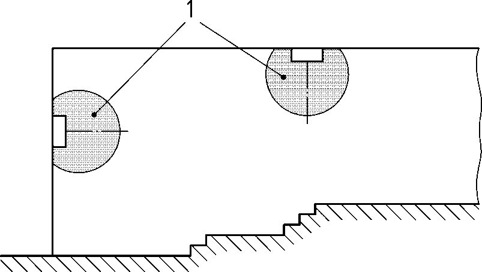
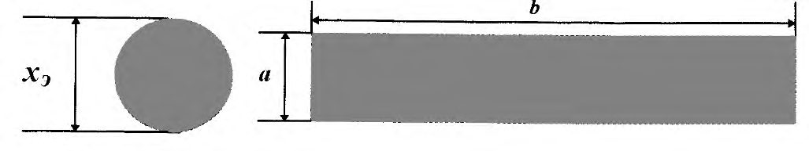
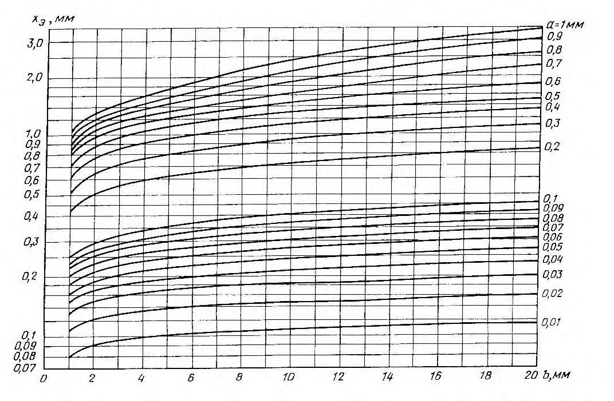
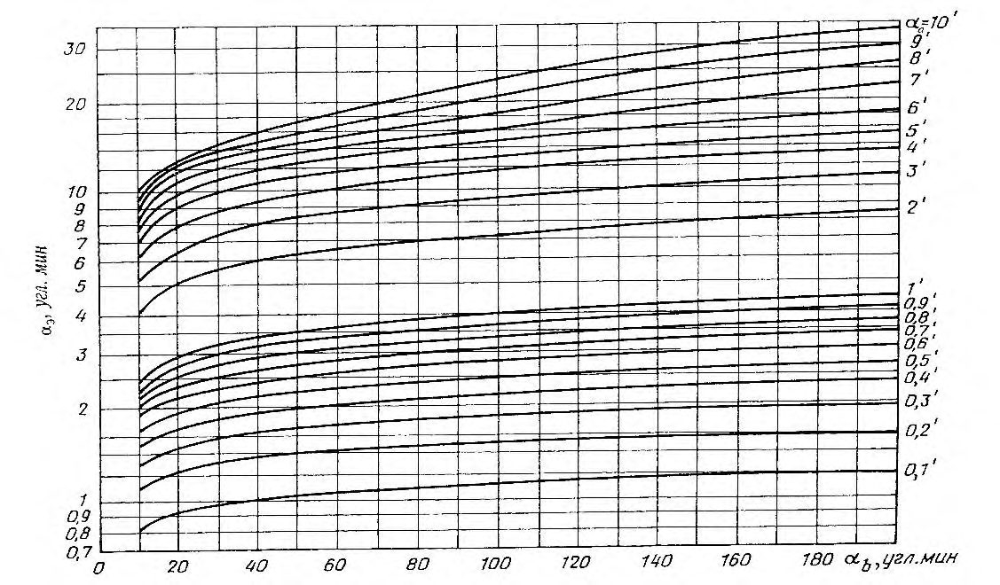
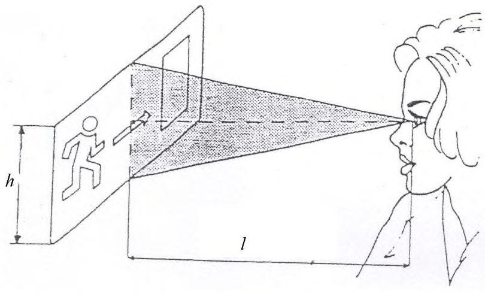
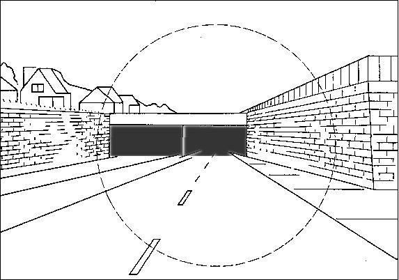
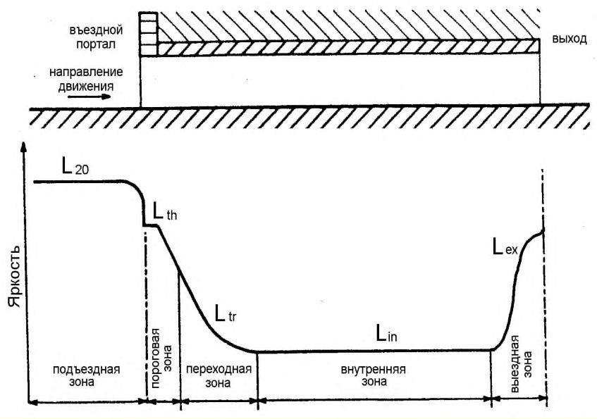
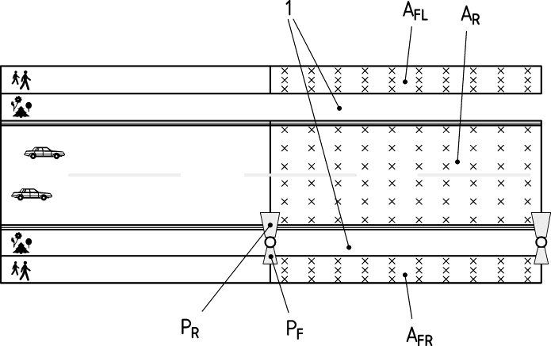
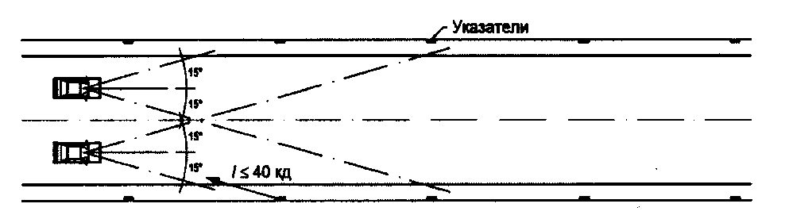
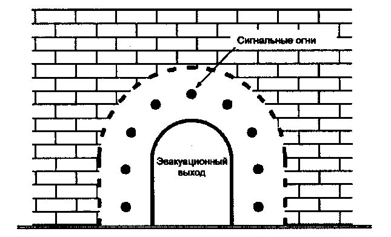

СП 52.13330.2016 «Естественное и искусственное освещение»
О документе: разработчики, утверждение, регистрация, ключевые слова
1 ИСПОЛНИТЕЛИ - федеральное государственное бюджетное учреждение «Научно-исследовательский институт строительной физики Российской академии архитектуры и строительных наук» (НИИСФ РААСН) и Общество с ограниченной ответственностью «ЦЕРЕРА-ЭКСПЕРТ» (ООО «ЦЕРЕРА-ЭКСПЕРТ»)
2 ВНЕСЕН Техническим комитетом по стандартизации ТК 465 «Строительство»
3 ПОДГОТОВЛЕН к утверждению Департаментом градостроительной деятельности и архитектуры Министерства строительства и жилищно-коммунального хозяйства Российской Федерации (Минстрой России)
4 УТВЕРЖДЕН приказом Министерства строительства и жилищнокоммунального хозяйства Российской Федерации от 7 ноября 2016 г. № 777/пр и введен в действие с 8 мая 2017 г.
5 ЗАРЕГИСТРИРОВАН Федеральным агентством по техническому регулированию и метрологии (Росстандарт). Пересмотр СП 52.13330.2011 «СНиП 23-05-95* Естественное и искусственное освещение»
В случае пересмотра (замены) или отмены настоящего свода правил соответствующее уведомление будет опубликовано в установленном порядке. Соответствующая информация, уведомление и тексты размещаются также в информационной системе общего пользования - на официальном сайте разработчика (Минстрой России) в сети Интернет
© Минстрой России, 2016
Настоящий нормативный документ не может быть полностью или частично воспроизведен, тиражирован и распространен в качестве официального издания на территории Российской Федерации без разрешения Минстроя России
Дата введения 2017-05-08
УДК 721:535.241.46:006.354(083.74) ОКС 91.160.01
Ключевые слова: проектирование освещения; нормируемые значения освещенности, яркости; естественное освещение; искусственное освещение; верхнее, боковое и комбинированное освещение; коэффициент естественной освещенности (КЕО); совмещенное освещение
Введение
В настоящем своде правил приведены требования, соответствующие целям Федерального закона от 30 декабря 2009 г. № 384-ФЗ «Технический регламент о безопасности зданий и сооружений» и подлежащие обязательному соблюдению с учетом части 1 статьи 46 Федерального закона от 27 декабря 2002 г. № 184ФЗ «О техническом регулировании», Федерального закона от 23 ноября 2009 г. № 261-ФЗ «Об энергосбережении и о повышении энергетической эффективности и о внесении изменений в отдельные законодательные акты Российской Федерации».
Свод правил устанавливает нормы естественного, искусственного и совмещенного освещения зданий и сооружений, а также нормы искусственного освещения селитебных территорий, площадок предприятий и мест производства работ вне зданий.
Актуализация выполнена авторским коллективом: федеральное государственное бюджетное учреждение «Научноисследовательский институт строительной физики Российской академии архитектуры и строительных наук» (канд. техн. наук И.А.Шмаров , канд. техн. наук В.А. Земцов , инж. В.В. Земцов , инж. Л.В. Бражникова , канд. техн. наук Е.Г. Коркина ); ООО «ЦЕРЕРАЭКСПЕРТ» (инж. Е.А. Литвинская ) при участии ООО «Всероссийский научно-исследовательский, проектноконструкторский светотехнический институт им. С.И. Вавилова» (инж. А.Ш. Черняк , канд. техн. наук А.А. Коробко ); Российская медицинская академия последипломного образования Минздрава России (д-р мед. наук Т.Е. Бобкова ); Федеральное государственное автономное учреждение «Научный центр здоровья детей» Минздрава России (канд. биол. наук Л.М. Текшева ); Программа развития ООН (инж. А.С. Шевченко ), ЗАО «Светлана-Оптоэлектроника» (канд. техн. наук А.А. Богданов ) ОАО НИПИ «ТЯЖПРОМЭЛЕКТРОПРОЕКТ» (инж. З.К. Гобачева ).
1Область применения
2Нормативные ссылки
В настоящем своде правил использованы нормативные ссылки на следующие документы:
ГОСТ 21.607-2014 Система проектной документации для строительства. Правила выполнения рабочей документации наружного электрического освещения
ГОСТ 21.608-2014 Система проектной документации для строительства. Правила выполнения рабочей документации внутреннего электрического освещения
ГОСТ 111-2014 Стекло листовое бесцветное. Технические условия
ГОСТ 5406-84 Эмали НЦ-25. Технические условия
ГОСТ 9754-76 Эмали МЛ-12. Технические условия
ГОСТ 10982-75 Эмаль ЭП-148 белая для холодильников и других электробытовых приборов. Технические условия
ГОСТ 14254-96 (МЭК 529-89) Степени защиты, обеспечиваемые оболочками (код IP)
ГОСТ 26824-2010 Здания и сооружения. Методы измерения яркости
ГОСТ 27900-88 (МЭК 598-2-22) Светильники для аварийного освещения. Технические требования
ГОСТ 30826-2014 Стекло многослойное. Технические условия
Daylighting and artificial lighting
ГОСТ 31364-2014 Стекло с низкоэмиссионным мягким покрытием. Технические условия
ГОСТ 32997-2014 Стекло листовое, окрашенное в массе. Общие технические условия
ГОСТ 33017-2014 Стекло с солнцезащитным или декоративным твердым покрытием. Технические условия
ГОСТ 33086-2014 Стекло с солнцезащитным или декоративным мягким покрытием. Технические условия
ГОСТ 33392-2015 Здания и сооружения. Метод определения показателя дискомфорта при искусственном освещении помещений
ГОСТ 33393-2015 Здания и сооружения. Методы измерения коэффициента пульсации освещенности
ГОСТ EN 410-2014 Стекло и изделия из него. Методы определения оптических характеристик. Определение световых и солнечных характеристик
ГОСТ IEC 60598-2-22-2012 Светильники. Часть 2-22. Частные требования. Светильники для аварийного освещения
ГОСТ Р 12.4.026-2001 Система стандартов безопасности труда. Цвета сигнальные, знаки безопасности и разметка сигнальная. Назначение и правила применения. Общие технические требования и характеристики. Методы испытаний
ГОСТ Р 54350-2015 Приборы осветительные. Светотехнические требования и методы испытаний
ГОСТ Р 54815-2011/IEC/PAS 62612:2009 Лампы светодиодные со встроенным устройством управления для общего освещения на напряжения свыше 50 В. Эксплуатационные требования
ГОСТ Р 54944-2012 Здания и сооружения. Методы измерения освещенности
ГОСТ Р 55708-2013 Освещение наружное утилитарное. Методы расчета нормируемых параметров
ГОСТ Р МЭК 60598-1-2011 Светильники. Часть 1. Общие требования и методы испытаний
СП 98.13330.2012 «СНиП 2.05.09-90 Трамвайные и троллейбусные линии»
СП 131.13330.2012 «СНиП 23-01-99* Строительная климатология» (с изменением № 2)
СанПиН 2.2.1/2.1.1.1076-01 Гигиенические требования к инсоляции и солнцезащите помещений жилых и общественных зданий и территорий
СанПиН 2.2.1/2.1.1.1278-03 Гигиенические требования к естественному, искусственному и совмещенному освещению жилых и общественных зданий
СанПиН 2.2.4.3359-16 Санитарно-эпидемиологические требования к физическим факторам на рабочих местах
Примечание - При пользовании настоящим сводом правил целесообразно проверить действие ссылочных документов в информационной системе общего пользования - на официальном сайте федерального органа исполнительной власти в сфере стандартизации в сети Интернет или по ежегодному информационному указателю «Национальные стандарты», который опубликован по состоянию на 1 января текущего года, и по выпускам ежемесячного информационного указателя «Национальные стандарты» за текущий год. Если заменен ссылочный документ, на который дана недатированная ссылка, то рекомендуется использовать действующую версию этого документа с учетом всех внесенных в данную версию изменений. Если заменен ссылочный документ, на который дана датированная ссылка, то рекомендуется использовать версию этого документа с указанным выше годом утверждения (принятия). Если после утверждения настоящего свода правил в ссылочный документ, на который дана датированная ссылка, внесено изменение, затрагивающее положение, на которое дана ссылка, то это положение рекомендуется применять без учета данного изменения. Если ссылочный документ отменен без замены, то положение, в котором дана ссылка на него, рекомендуется применять в части, не затрагивающей эту ссылку. Сведения о действии сводов правил целесообразно проверить в Федеральном информационном фонде стандартов.
3Термины и определения
В настоящем своде правил применены следующие термины с соответствующими определениями:
- 3.1аварийное освещение
- Освещение, предусматриваемое в случае выхода из строя питания рабочего освещения.
- 3.2автодорожный тоннель
- Часть дороги для проезда автомобильного транспорта, имеющая перекрытие над проезжей частью, которое препятствует естественному освещению дорожного покрытия и тем самым ухудшает водителю условия видимости дорожной обстановки. Примечания 1 Понятие тоннеля распространяется и на солнцезащитные экраны, примыкающие к порталам тоннеля. 2 Под понятие тоннеля не подпадает галерея, определяемая как часть дороги, перекрытие которой на всем протяжении имеет одну или обе светопроницаемые стены.
- 3.3акцентирующее освещение
- Выделение светом отдельных деталей на менее освещенном фоне.
- 3.4антипаническое освещение
- Вид эвакуационного освещения для предотвращения паники и безопасного подхода к путям эвакуации.
- 3.5боковое естественное освещение
- Естественное освещение помещения через световые проемы в наружных стенах.
- 3.6верхнее естественное освещение
- Естественное освещение помещения через фонари, световые проемы в стенах в местах перепада высоты здания.
- 3.7внутренняя зона тоннеля
- Участок тоннеля, примыкающий к переходной зоне и заканчивающийся у начала выездной зоны, а при ее отсутствии - у выездного портала.
- 3.8выездная зона тоннеля
- Участок тоннеля длиной, равной расстоянию безопасного торможения, примыкающий к внутренней зоне и заканчивающийся у выездного портала.
- 3.9выездной портал тоннеля
- Часть строительной конструкции тоннеля, обрамляющая выезд из тоннеля.
- 3.10въездная зона тоннеля
- Участок тоннеля, включающий в себя пороговую и переходную зоны.
- 3.11въездной портал тоннеля
- Часть строительной конструкции тоннеля, обрамляющая въезд в тоннель. Примечание - При наличии солнцезащитного экрана въездной портал соответствует началу перекрытой таким экраном проезжей части.
- 3.12геометрический коэффициент естественной освещенности , %
- Отношение естественной освещенности, создаваемой в рассматриваемой точке заданной плоскости внутри помещения светом, прошедшим через незаполненный световой проем и исходящим непосредственно от равномерно яркого неба, к одновременно измеренному значению наружной горизонтальной освещенности под открытым полностью небосводом, при этом участие прямого солнечного света в создании той или другой освещенности исключается.
- 3.13двухстороннее боковое естественное освещение
- Естественное освещение помещения за счет светопроемов, расположенных в различных плоскостях двух стен.
- 3.14дежурное освещение
- Освещение, используемое в нерабочее время.
- 3.15длина тоннеля, м
- Расстояние между въездным и выездным порталами, отсчитываемое вдоль центральной линии проезжей части.
- 3.16длинный тоннель
- Тоннель, который либо имеет длину более 125 м, либо при подъезде к которому водитель, находящийся на расстоянии безопасного торможения перед въездным порталом, видит менее 20 % площади рамки выездного портала или вообще ее не видит.
- 3.17дорога (в городе)
- Автомобильная дорога, являющаяся составным элементом городской дорожно-уличной сети или соединяющая город с функционально связанными с ним объектами, но в отличие от улиц прокладываемая по свободным от застройки территориям.
- 3.18дополнительное искусственное освещение
- Искусственное освещение в системе совмещенного освещения, которое используется в течение рабочего дня в зонах с недостаточным естественным освещением.
- 3.19естественное освещение
- Освещение помещений светом неба (прямым или отраженным), проникающим через световые проемы в наружных ограждающих конструкциях, а также через световоды.
- 3.20заливающее освещение
- Общее (равномерное или неравномерное) освещение всего фасада здания или сооружения или его существенной части световыми приборами.
- 3.21знак безопасности
- Знак, дающий информацию о мерах безопасности (запрещения, предписания или разрешения определенных действий) с помощью комбинации цвета, формы и графических символов или текста.
- 3.22знак безопасности с внешней подсветкой
- Знак безопасности, освещаемый извне.
- 3.23знак безопасности с внутренней подсветкой
- Знак безопасности, освещаемый изнутри. Примечание - Знак безопасности с внутренней подсветкой является световым указателем.
- 3.24индекс цветопередачи Ra
- Мера соответствия зрительных восприятий цветного объекта, освещенного исследуемым и стандартным источниками света при одинаковых условиях наблюдения.
- 3.25интенсивность движения, единиц в час
- Число транспортных средств в единицу времени, проходящих через поперечное сечение полотна дороги в часы пик в обоих направлениях.
- 3.26комбинированное искусственное освещение
- Искусственное освещение, при котором к общему искусственному освещению добавляется местное.
- 3.27комбинированное естественное освещение
- Сочетание верхнего и бокового естественного освещения.
- 3.28коэффициент естественной освещенности (КЕО) e , %
- Отношение естественной освещенности, создаваемой в расчетной точке заданной плоскости внутри помещения светом неба (непосредственным или после отражений), к одновременно измеренному значению наружной горизонтальной освещенности, создаваемой светом полностью открытого небосвода; при этом участие прямого солнечного света в создании той или другой освещенности исключается.
- 3.29контраст объекта различения с фоном K , относительные единицы
- Определяется отношением абсолютной величины разности между яркостью объекта и фона к яркости фона. Контраст объекта различения с фоном считается: большим - при K более 0,5 (объект и фон резко отличаются по яркости); средним - при K от 0,2 до 0,5 (объект и фон заметно отличаются по яркости); малым - при K менее 0,2 (объект и фон мало отличаются по яркости).
- 3.30короткий тоннель
- Тоннель, который имеет длину не более 125 м и при подъезде к которому водитель, находящийся на расстоянии безопасного торможения перед въездным порталом, может видеть не менее 20 % площади рамки выездного портала.
- 3.31коэффициент неравномерности яркости неба q (γ)
- Коэффициент, учитывающий неравномерность распределения яркости по небу и определяемый по формуле где γ - угол возвышения солнца над горизонтом, 0 о ≤ γ < 90°; L н(γ) - яркость участка неба; L н.ср - средняя яркость неба; q (0°) = 0,429 - на горизонте.
- 3.32коэффициент пульсации освещенности K п, %
- Критерий оценки относительной глубины колебаний освещенности в осветительной установке в результате изменения во времени светового потока источников света при их питании переменным током, выражающийся формулой где Е макс и Е мин - максимальное и минимальное значения освещенности соответственно за период ее колебания, лк; Е ср - среднее значение освещенности за этот же период, лк. Примечание - Коэффициент пульсации освещенности учитывает пульсацию светового потока до 300 Гц. Пульсация освещенности свыше 300 Гц не оказывает влияния на общую и зрительную работоспособность. Соблюдение норм коэффициента пульсации освещенности позволяет предотвратить отрицательное влияние фликера, стробоскопического эффекта и снизить зрительное и общее утомление человека.
- 3.33коэффициент светового климата CN , относительные единицы
- Коэффициент, учитывающий особенности светового климата района строительства, N -номер группы административных районов.
- 3.34коэффициент слепящей блескости RG , относительные единицы
- Коэффициент, характеризующий прямую слепящую блескость светильников в осветительной установке в местах производства работ вне зданий, вычисляемый по формуле где Lvl - суммарная вуалирующая яркость, вызванная осветительной установкой и определяемая суммой вуалирующих яркостей от каждого светильника ( Lvl = Lv 1 + Lv 2 + ,…, Lvn ), кд/м² . Вуалирующую яркость каждого светильника вычисляют по формуле здесь E eye - освещенность на зрачке наблюдателя в плоскости, перпендикулярной линии зрения (2° ниже горизонтали, см. рисунок 3.1), лк; θ - угол между линией зрения наблюдателя и направлением падения света на зрачок наблюдателя, градусы; Lvе - эквивалентная вуалирующая яркость фона (окружения), кд/м² . Допуская отражение фона в основном диффузным, эквивалентную вуалирующую яркость фона вычисляют по формуле где E г - средняя горизонтальная освещенность поверхности; ρ - средний коэффициент отражения окружающих поверхностей; в случаях, когда он не известен, принимают равным 0,15. 1 - линия зрения; 2 - плоскость глаз наблюдателя Рисунок 3.1
- 3.35коэффициент эксплуатации (для естественного освещения) MF , относительные единицы
- Коэффициент, равный отношению значения КЕО в заданной точке, создаваемой естественным освещением к концу установленного срока эксплуатации, к значению КЕО в той же точке в начале эксплуатации. Коэффициент учитывает снижение КЕО в процессе эксплуатации вследствие загрязнения и старения светопрозрачных заполнений в световых проемах, а также снижения отражающих свойств поверхностей помещения: где MF з - коэффициент, учитывающий снижение КЕО в процессе эксплуатации вследствие загрязнения и старения светопрозрачных заполнений в световых проемах; MF п - коэффициент, учитывающий снижение КЕО в процессе эксплуатации вследствие снижения отражающих свойств поверхностей помещения. Примечание - Коэффициент эксплуатации - величина, обратная ранее применявшемуся коэффициенту запаса К з для естественного освещения ( MF = 1/ К з ).
- 3.36коэффициент эксплуатации (для искусственного освещения) MF , относительные единицы
- Коэффициент, равный отношению освещенности или яркости в заданной точке, создаваемой осветительной установкой в конце установленного срока эксплуатации, к освещенности или яркости в той же точке в начале эксплуатации. Коэффициент учитывает снижение освещенности или яркости в процессе эксплуатации осветительной установки вследствие спада светового потока, выхода из строя источников света и невосстанавливаемого изменения отражающих и пропускающих свойств оптических элементов осветительных приборов, а также загрязнения поверхностей помещения, наружных стен здания или сооружения, проезжей части дороги или тротуара: где MF сп - коэффициент, учитывающий спад светового потока источников света; MF ви - коэффициент, учитывающий выход из строя источников света; MF оп - коэффициент, учитывающий загрязнение и невосстанавливаемое изменение отражающих и пропускающих свойств оптических элементов осветительных приборов; MF п -коэффициент, учитывающий загрязнение отражающих поверхностей помещения или сооружения.
- Примечание - Коэффициент эксплуатации обратно пропорционален коэффициенту запаса К з
- ( MF = 1/ К з ).
- 3.37локальное архитектурное освещение
- Освещение части здания или сооружения, а также отдельных архитектурных элементов при отсутствии заливающего освещения.
- 3.38медиафасад
- Светопропускающая рекламная конструкция, размещаемая непосредственно на поверхности стен зданий, строений и сооружений или на металлокаркасе, повторяющем пластику стены (в случае размещения медиафасада на существующем остеклении здания, строения, сооружения), позволяющая демонстрировать информационные материалы. Размер информационного поля медиафасада определяется размером демонстрируемого изображения.
- 3.39местное освещение
- Освещение, дополнительное к общему, создаваемое светильниками, концентрирующими световой поток непосредственно на рабочих местах.
- 3.40облачное небо МКО
- Небо, полностью закрытое облаками, распределение яркости по которому определяется стандартом Международной комиссии по освещению (МКО). Отношение яркости небосвода на высоте γ над горизонтом к яркости в зените определяется формулой La (0°) = 1 (на горизонте).
- 3.41общая равномерность распределения яркости дорожного покрытия U 0
- Отношение минимального значения яркости дорожного покрытия к среднему:
- 3.42общее равномерное искусственное освещение помещений
- Освещение, при котором светильники размещаются в верхней зоне помещения и создают равномерное распределение освещенности на рабочих местах.
- 3.43общее локализованное искусственное освещение помещений
- Освещение, при котором светильники размещаются в верхней зоне помещения непосредственно над оборудованием.
- 3.44объединенный показатель дискомфорта UGR, относительные единицы
- Критерий оценки дискомфортной блескости, вызывающей неприятные ощущения при неравномерном распределении яркостей в поле зрения, определяемый по формуле где Li - яркость блеского источника, кд/м² ; ω i - угловой размер блеского источника, стерадиан; pi - индекс позиции блеского источника относительно линии зрения; L а - яркость адаптации, кд/м² .
- 3.45объект различения
- Рассматриваемый предмет, отдельная его часть или дефект, которые требуется различать в процессе работы.
- 3.46освещение зон повышенной опасности
- Вид эвакуационного освещения для безопасного завершения потенциально опасного рабочего процесса.
- 3.47освещение путей эвакуации
- Вид эвакуационного освещения для надежного определения и безопасного использования путей эвакуации.
- 3.48освещенность E , лк
- Отношение светового потока d , падающего на элемент поверхности, содержащий рассматриваемую точку, к площади d A этого элемента :
- 3.49относительная площадь световых проемов S ф/ S п, S о/ S п, %
- Отношение площади фонарей или окон к освещаемой площади пола помещения.
- 3.50отраженная блескость
- Характеристика отражения светового потока от рабочей поверхности в направлении глаз работающего, определяющая снижение видимости вследствие чрезмерного увеличения яркости рабочей поверхности и вуалирующего действия, снижающих контраст между объектом и фоном.
- 3.51относительная удельная мощность дорожного освещения Dp, Вт/(м² ∙лк)
- Показатель энергоэффективности освещения участка дороги, определяемый отношением мощности установленного осветительного оборудования к площади участка и средней освещенности. Примечание - Методика расчета показателя Dp приведена в приложении М.
- 3.52перекресток
- Транспортный узел, в котором две или более улиц или дорог соединяются или пересекаются в одном уровне.
- 3.53площадь окон S o, м²
- Суммарная площадь световых проемов (в свету), находящихся в наружных стенах освещаемого помещения.
- 3.54площадь фонарей S ф , м²
- Суммарная площадь световых проемов (в свету) всех фонарей, находящихся в покрытии над освещаемым помещением или пролетом.
- 3.55подъездная зона тоннеля
- Участок дороги вне тоннеля длиной, равной расстоянию безопасного торможения, примыкающий к въездному порталу.
- 3.56полуцилиндрическая освещенность E пц, лк
- Отношение светового потока, падающего на внешнюю поверхность бесконечно малого полуцилиндра с центром в заданной точке, к площади цилиндрической поверхности этого полуцилиндра Примечания 1 Если не оговорено противное, то ось полуцилиндра должна располагаться вертикально. 2 Применительно к утилитарному наружному освещению полуцилиндрическую освещенность используют в качестве критерия оценки различения лиц встречных пешеходов и определяют как среднюю плотность светового потока на цилиндрической поверхности бесконечно малого полуцилиндра, расположенного вертикально на продольной линии улицы на высоте 1,5 м и ориентированного внешней нормалью к плоской боковой поверхности полуцилиндра в направлении преимущественного движения пешеходов.
- 3.57помещение без естественного света
- Помещение, в котором коэффициент естественной освещенности ниже 0,1 %.
- 3.58помещение с недостаточным естественным светом
- Помещение, в котором коэффициент естественной освещенности ниже нормируемого.
- 3.59помещение с постоянным пребыванием людей
- Помещение, в котором люди находятся большую часть (более 50 %) своего рабочего времени в течение суток или более 2 ч непрерывно.
- 3.60пороговая зона тоннеля
- Участок тоннеля длиной, равной расстоянию безопасного торможения, примыкающий к въездному порталу.
- 3.61пороговое приращение яркости TI , %
- Критерий, регламентирующий слепящее действие светильников осветительной установки в поле зрения водителя транспортного средства. Характеризует увеличение контраста между объектом и его фоном, при котором видимость объекта при наличии блеского источника света стала бы такой же, как и в его отсутствие. Определяется по формуле где L ср - средняя яркость дорожного покрытия, кд/м²; k - множитель, равный 950 при L ср > 5 кд/м² и 650 при L ср ≤ 5 кд/м²; Ev , i - вертикальная освещенность на глазу водителя от i -го светильника, лк; θ i - угол между направлением на i -й светильник и линией зрения, град; n - число светильников, попадающих в поле зрения водителя в пределах интервала угла θ (2° < θ < 20°).
- 3.62предельная равномерность распределения освещенности (яркости) Ud
- Отношение минимальной освещенности (яркости) к максимальной:
- 3.63продольная равномерность распределения яркости дорожного покрытия Ui
- Отношение минимального значения яркости дорожного покрытия L мин к максимальному его значению L макс по оси полосы движения:
- 3.64проезд
- Территория, предназначенная для движения как транспорта, так и пешеходов.
- 3.65пути эвакуации
- Маршрут для выхода людей из опасной зоны в аварийной ситуации. Начинается от места пребывания людей и заканчивается в безопасной зоне.
- 3.66рабочая поверхность
- Поверхность, на которой проводится работа, нормируется и измеряется освещенность.
- 3.67рабочее освещение
- Освещение, обеспечивающее нормируемые световые условия (освещенность, качество освещения) в помещениях и местах производства работ вне зданий.
- 3.68равномерность естественного освещения
- Отношение минимального значения к среднему значению КЕО в пределах характерного разреза помещения.
- 3.69равномерность распределения освещенности (яркости) U 0
- Отношение минимального значения освещенности (яркости) к среднему значению освещенности (яркости):
- 3.70развязка
- Пересечение дорог в разных уровнях со съездами для перехода транспортных средств с одной дороги на другую.
- 3.71расстояние безопасного торможения (РБТ), м
- Минимальное расстояние, требуемое для надежного приведения транспортного средства, движущегося с расчетной скоростью, в состояние полной остановки. Примечание - Определяется суммарным временем реагирования водителя на появившееся препятствие для принятия решения и торможения транспортного средства.
- 3.72расчетная скорость движения
- Максимальная скорость движения одиночного автомобиля, принятая при проектировании дороги.
- 3.73расчетное значение КЕО е р, %
- Значение, полученное расчетным путем при оценке естественного или совмещенного освещения помещений: а) при боковом освещении по формуле б) при верхнем освещении по формуле в) при комбинированном (верхнем и боковом) освещении по формуле где L - число участков небосвода, видимых через световой проем из расчетной точки; б i -геометрический КЕО в расчетной точке при боковом освещении, учитывающий прямой свет от i -го участка неба; CN - коэффициент светового климата, принимают по таблице 5.1; qi - коэффициент неравномерности яркости i -го участка облачного неба МКО; M - число участков фасадов зданий противостоящей застройки, видимых через световой проем из расчетной точки; зд j -геометрический КЕО в расчетной точке при боковом освещении, учитывающий свет, отраженный от j -го участка фасадов зданий противостоящей застройки; b ф j - средняя относительная яркость j-го участка фасадов зданий противостоящей застройки; r 0 - коэффициент, учитывающий повышение КЕО при боковом освещении благодаря свету, отраженному от поверхностей помещения и подстилающего слоя, прилегающего к зданию; k зд j -коэффициент, учитывающий изменения внутренней отраженной составляющей КЕО в помещении при наличии противостоящих зданий, определяемый по формуле здесь k здо -коэффициент, учитывающий изменения внутренней отраженной составляющей КЕО в помещении при полном закрытии небосвода зданиями, видимыми из расчетной точки; 0 - общий коэффициент светопропускания, определяемый по формуле где 1 - коэффициент светопропускания материала; 2 - коэффициент, учитывающий потери света в переплетах светопроема. Размеры светопроема принимаются равными размерам коробки переплета по наружному обмеру; 3 - коэффициент, учитывающий потери света в несущих конструкциях (при боковом освещении 3 = 1); 4 - коэффициент, учитывающий потери света в солнцезащитных устройствах; 5 - коэффициент, учитывающий потери света в защитной сетке, устанавливаемой под фонарями, принимаемый равным 0,9; MF - коэффициент эксплуатации, определяемый по таблице 4.3; T - число световых проемов в покрытии; в i - геометрический КЕО в расчетной точке при верхнем освещении от i -го проема; ср - среднее значение геометрического КЕО при верхнем освещении на линии пересечения условной рабочей поверхности и плоскости характерного вертикального разреза помещения, определяемое из соотношения здесь N - число расчетных точек; r 2 - коэффициент, учитывающий повышение КЕО при верхнем освещении благодаря свету, отраженному от поверхностей помещения; k ф - коэффициент, учитывающий тип фонаря.
- 3.74резервное освещение
- Вид аварийного освещения для продолжения работы в случае отключения рабочего освещения.
- 3.75световой климат
- Совокупность условий естественного освещения в той или иной местности (освещенность и количество освещения на горизонтальной и различно ориентированных по сторонам горизонта вертикальных поверхностях, создаваемых рассеянным светом неба и прямым светом солнца, продолжительность солнечного сияния и альбедо подстилающей поверхности) за период более десяти лет.
- 3.76световод естественного света
- Устройство, направляющее естественный свет внутрь здания.
- 3.77световой указатель
- Знак безопасности с внутренней подсветкой.
- 3.78светодиод
- Источник света, основанный на испускании некогерентного излучения в видимом диапазоне длин волн при пропускании электрического тока через полупроводниковый диод.
- 3.79селитебная территория
- Территория, предназначенная для размещения жилищного фонда, общественных зданий и сооружений, а также отдельных коммунальных и промышленных объектов, не требующих устройства санитарнозащитных зон, для устройства путей внутригородского сообщения, улиц, площадей, парков, садов, бульваров и других мест общего пользования.
- 3.80система встречного освещения тоннеля
- Освещение тоннеля, при котором свет падает на объекты преимущественно навстречу движению транспортного потока. Примечание - Для системы встречного освещения используют светильники, распределение силы света которых асимметрично относительно плоскости, перпендикулярной направлению движения транспортного потока, причем максимум силы света направлен навстречу движению транспортного потока.
- 3.81система симметричного освещения тоннеля
- Освещение тоннеля, при котором свет падает на объекты одинаково как по ходу, так и навстречу движению транспортного потока. Примечание - Для системы симметричного освещения используют светильники, распределение силы света которых симметрично относительно плоскости, перпендикулярной направлению движения транспортного потока.
- 3.82система указания путей эвакуации
- Система, обеспечивающая достаточное число знаков безопасности, позволяющих людям эвакуироваться из места расположения в случае возникновения опасности вдоль установленных путей эвакуации.
- 3.83совмещенное освещение
- Освещение, при котором недостаточное по нормам естественное освещение дополняется искусственным в течение полного рабочего дня.
- 3.84среднее значение КЕО e ср, %
- При верхнем или комбинированном освещении определяется по формуле где e 1 и eN - значения КЕО при верхнем или комбинированном освещении в первой и последней точках характерного разреза помещения, см. формулы (3.12) и (3.13); ei - значения КЕО в остальных точках характерного разреза помещения ( i = 2, 3, ..., N - 1).
- 3.85средняя освещенность на дорожном покрытии Е ср, лк
- Освещенность на дорожном покрытии, средневзвешенная по площади заданного участка.
- 3.86средняя яркость дорожного покрытия L ср, кд/м²
- Яркость сухого дорожного покрытия в направлении глаза наблюдателя, находящегося в стандартных условиях наблюдения на оси полосы движения транспорта, средневзвешенная по площади проезжей части заданного участка.
- 3.87средняя яркость дорожного покрытия в переходной зоне тоннеля Ltr , кд/м²
- Средняя по площади проезжей части яркость сухого дорожного покрытия в направлении глаза наблюдателя, находящегося на оси полосы движения транспорта в переходной зоне тоннеля.
- 3.88средняя яркость пороговой зоны тоннеля Lth , кд/м²
- Средняя яркость дорожного покрытия в первой половине пороговой зоны тоннеля.
- 3.89стандартные условия наблюдения в дорожном освещении
- Регламентируемые при расчете яркости дорожного покрытия условия наблюдения водителем транспортного средства, при которых глаз наблюдателя располагается на высоте 1,5 м над дорожным покрытием и удален от расчетной точки на расстояние, при котором линия зрения направлена в расчетную точку под углом (1,0 ± 0,5) о к плоскости дороги.
- 3.90стробоскопический эффект
- Зрительное восприятие кажущегося изменения, прекращения вращательного движения или периодического колебания объекта, освещаемого светом, изменяющимся с близкой, совпадающей или кратной частотой.
- 3.91транспортная зона тоннеля
- Часть строительного комплекса тоннеля, содержащая непосредственно проезжую часть, заключенную между въездным и выездным порталами.
- 3.92тротуар
- Пешеходная часть улицы.
- 3.93удельная мощность ω, Вт/м²
- Установленная мощность искусственного освещения в помещении, отнесенная к полезной площади.
- 3.94улица
- Пространство, полностью или частично ограниченное зданиями с одной или обеих сторон, с проезжей частью для транспорта, пешеходными, а при необходимости - и велосипедными дорожками.
- 3.95условная рабочая поверхность
- Условная горизонтальная поверхность, расположенная на высоте 0,8 м от пола.
- 3.96установленная скорость движения
- Максимальная проектная скорость движения транспорта.
- 3.97утилитарное наружное освещение
- Стационарное освещение, предназначенное для обеспечения безопасного и комфортного движения транспортных средств и пешеходов.
- 3.98участок дороги со стандартной геометрией проезжей части
- Участок дороги или улицы, проезжая часть которого представляет собой плоское прямоугольное полотно длиной, определяемой стандартными условиями наблюдения. Примечание -Для участков со стандартной геометрией проезжей части нормируются и яркость, и освещенность дорожного покрытия.
- 3.99участок дороги с нестандартной геометрией проезжей части
- Участок дороги или улицы, имеющей отклонения от стандартной геометрии, например повороты, развилки, въезды и съезды с эстакад, криволинейные (в плане и профиле) участки и др. Примечание - Для участков с нестандартной геометрией проезжей части нормируется только освещенность дорожного покрытия.
- 3.100 фликер
- Субъективное восприятие колебаний светового потока искусственных источников света по величине и во времени.
- 3.101 фликер-эффект (в освещении тоннелей)
- Эффект монотонного мелькания ярких частей светильников и их бликов от корпуса автомобиля, вызывающий раздражение у водителя при определенных интервалах частот и продолжительности мельканий.
- 3.102 фон
- Поверхность, прилегающая непосредственно к объекту различения, на которой он рассматривается.
- Фон считается
- светлым - при коэффициенте отражения поверхности более 0,4; средним - то же, от 0,2 до 0,4; темным - то же, менее 0,2.
- 3.103 характерный разрез помещения
- Поперечный разрез посредине помещения, плоскость которого перпендикулярна плоскости остекления световых проемов (при боковом освещении) или продольной оси пролетов помещения. В характерный разрез помещения должны попадать участки с наибольшим числом рабочих мест, а также точки рабочей зоны, наиболее удаленные от световых проемов.
- 3.104 цветовая температура T ц, K
- Температура излучателя Планка (черного тела), при которой его излучение имеет ту же цветность, что и излучение рассматриваемого объекта
- 3.105 цветопередача
- Общее понятие, характеризующее влияние спектрального состава источника света на зрительное восприятие цветных объектов, сознательно или бессознательно сравниваемое с восприятием тех же объектов, освещенных стандартным источником света.
- 3.106 цилиндрическая освещенность E ц, лк
- Отношение светового потока, падающего на боковую поверхность бесконечно малого цилиндра с центром в заданной точке, к площади боковой поверхности этого цилиндра. Примечания 1 Если не оговорено иное, то ось цилиндра должна быть расположена вертикально. 2 Применительно к внутреннему освещению цилиндрическую освещенность используют в качестве критерия оценки насыщенности помещения светом.
- 3.107 эвакуационное освещение
- Вид аварийного освещения для эвакуации людей или завершения потенциально опасного процесса.
- 3.108 эвакуационный выход
- Выход, предназначенный для эвакуации людей в аварийной ситуации на путь эвакуации, ведущий непосредственно наружу или в безопасную зону.
- 3.109 эквивалентный размер объекта различения
- Размер равнояркого круга на равноярком фоне, имеющего такой же пороговый контраст, что и объект различения при данной яркости фона. 3.110
- энергетическая эффективность
- Характеристики, отражающие отношение полезного эффекта от использования энергетических ресурсов к затратам энергетических ресурсов, произведенным в целях получения такого эффекта, применительно к продукции, технологическому процессу, юридическому лицу, индивидуальному предпринимателю.Источник: 1, статья 2, пункт 4
- энергосбережение
- Реализация организационных, правовых, технических, технологических, экономических и иных мер, направленных на уменьшение объема используемых энергетических ресурсов при сохранении соответствующего полезного эффекта от их использования (в том числе объема произведенной продукции, выполненных работ, оказанных услуг).Источник: 1, статья 2, пункт 3
- 3.112 яркость L , кд/м²
- Отношение светового потока d 2 , переносимого элементарным пучком лучей, проходящим через заданную точку и распространяющимся в телесном угле d , содержащем заданное направление, к произведению площади проходящего через заданную точку сечения этого пучка d A , косинуса угла между нормалью к этому сечению и направлением пучка лучей и телесного угла d :
- 3.113 яркость адаптации в подъездной зоне тоннеля L 20, кд/м²
- Средняя яркость в коническом поле зрения, стягиваемом углом 20º, с вершиной в месте расположения глаза подъезжающего к тоннелю водителя и осью, направленной на центр въездного портала тоннеля. Примечание - Яркость адаптации L 20 определяют применительно к водителю, расположенному на РБТ от въездного портала тоннеля в середине соответствующей проезжей части дороги.
4Общие положения
Минимальная освещенность на рабочих местах не должна отличаться от нормируемой средней освещенности в помещении более чем на 10 % согласно СанПиН 2.2.4.3359.
Для наружного освещения селитебных территорий в настоящем своде правил нормируются освещенность и яркость дорожный покрытий для любых источников света.
Нормируемые значения освещенности в люксах, отличающиеся на одну ступень, следует принимать по шкале: 0,2; 0,3; 0,5; 1; 2; 3; 4; 5; 6; 7; 10; 15; 20; 30; 40; 50; 75; 100; 150; 200; 300; 400; 500; 600; 750; 1000; 1250; 1500; 2000; 2500; 3000; 3500; 4000; 4500; 5000.
Нормируемые значения яркости поверхности, кд/м² , отличающиеся на одну ступень, следует принимать по шкале: 0,2; 0,3; 0,4; 0,6; 0,8; 1; 2; 3; 5; 8; 10; 12; 15; 20; 25; 30; 50; 75; 100; 125; 150; 200; 400; 500; 750; 1000; 1500; 2000; 2500.
Для естественного освещения в настоящем своде правил приведены значения коэффициента естественной освещенности (КЕО).
Таблица 4.1 Требования к освещению помещений промышленных предприятий
| Искусственное освещение | Искусственное освещение | Искусственное освещение | Искусственное освещение | Естественное освещение | Естественное освещение | Совмещенное освещение | Совмещенное освещение | ||||||
|---|---|---|---|---|---|---|---|---|---|---|---|---|---|
| Под- | Освещенность, | Освещенность, | Сочетание нормируемых величин систе- | Сочетание нормируемых величин систе- | КЕО e н ,% | КЕО e н ,% | (проект, | ||||||
| Под- | при системе комбинированного освещения | при системе комбинированного освещения | объединенного показателя дискомфорта UGR и коэффициента пульсации | объединенного показателя дискомфорта UGR и коэффициента пульсации | при верхнем или комби- нирован- ном освеще- нии | при бо- ковом осве- ще- нии | при верхнем или комби- нирован- ном освеще- нии | окончательная редакция) при бо- ковом осве- ще- нии | |||||
| Под- | Всего | В том числе от общего | UGR, не более | К п , %, не более | при верхнем или комби- нирован- ном освеще- нии | при бо- ковом осве- ще- нии | при верхнем или комби- нирован- ном освеще- нии | окончательная редакция) при бо- ковом осве- ще- нии | |||||
| Наивысшей точности | Менее0,15 | а | Малый | Темный | 5000 | 500 | - | 19 10 | - | 6,0 | 2,0 | ||
| Наивысшей точности | Менее0,15 | б | Малый Средний | Средний Темный | 4000 | 400 | 1250 19 | 10 | - | 6,0 | 2,0 | ||
| Наивысшей точности | Менее0,15 | в | Малый Средний Большой | Светлый Средний Темный | 2500 | 300 | 750 19 | 10 | - | 6,0 | 2,0 | ||
| Наивысшей точности | Менее0,15 | г | Средний Большой » | Светлый » Средний | 1500 | 200 | 500 19 | 10 | - | 6,0 | 2,0 | ||
| Очень высокой точности | От0,15 до 0,30 | а | Малый | Темный | 4000 | 400 | - 22 | 10 | - | - | 4,2 | 1,5 | |
| Очень высокой точности | От0,15 до 0,30 | б | Малый Средний | Средний Темный | 3000 | 300 | 750 22 | 10 | - | - | 4,2 | 1,5 | |
| Очень высокой точности | От0,15 до 0,30 | II | в | Малый Средний Большой | Светлый Средний Темный | 2000 | 200 | 500 22 | 10 | - | - | 4,2 | 1,5 |
| Очень высокой точности | От0,15 до 0,30 | II | г | Средний Большой » | Светлый » Средний | 1000 | 200 | 400 22 | 10 | - | - | 4,2 | 1,5 |
Продолжение таблицы 4.1
| Высокой | От0,30 | III | а | Малый | Темный | 2000 | 200 | 500 | 25 | 15 | - | |||
|---|---|---|---|---|---|---|---|---|---|---|---|---|---|---|
| точности | до 0,50 | б | Малый Средний | Средний Темный | 1000 | 200 | 400 | 25 | 15 | |||||
| в | Малый Средний Большой | Светлый Средний Темный | 750 | 200 | 300 | 25 | 15 | - | 3,0 | 1,2 | ||||
| г | Средний Большой » | Светлый » Средний | 400 | 200 | 200 | 25 | 15 | |||||||
| Средней точности | Св. 0,5 | IV | а | Малый | Темный | 750 | 200 | 400 | 25 | 20 | 4,0 | 1,5 | 2,4 | 0,9 |
| до 1,0 | IV | б | Малый Средний | Средний Темный | 500 | 200 | 300 | 25 | 20 | 4,0 | 1,5 | 2,4 | 0,9 | |
| IV | в | Малый Средний Большой | Светлый Средний Темный | 400 | 200 | 200 | 25 | 20 | 4,0 | 1,5 | 2,4 | 0,9 | ||
| IV | г | Средний Большой » | Светлый » Средний | - | - | 200 | 25 | 20 | 4,0 | 1,5 | 2,4 | 0,9 | ||
| Малой точности | Св. 1 до 5 | V | а | Малый | Темный | 400 | 200 | 300 | 25 | 20 | 3,0 | 1,0 | 1,8 | 0,6 |
| Малой точности | V | б | Малый Средний | Средний Темный | - | - | 200 | 25 | 20 | 3,0 | 1,0 | 1,8 | 0,6 | |
| Малой точности | V | в | Малый Средний Большой | Светлый Средний Темный | - | - | 200 | 25 | 20 | 3,0 | 1,0 | 1,8 | 0,6 | |
| Малой точности | V | г | Средний Большой » | Светлый » Средний | - | - | 200 | 25 | 20 | 3,0 | 1,0 | 1,8 | 0,6 | |
| Грубая (очень малой точности) | Более 5 | VI | - | Независимо от характеристик фона и контраста объекта с | Независимо от характеристик фона и контраста объекта с | - | - | 200 | 25 | 20 | 3,0 | 1,0 | 1,8 | 0,6 |
| Работа со светящимися материалами и изделиями в горячих цехах | Более 0,5 | VII | - | То же | То же | - | - | 200 | 25 | 20 | 3,0 | 1,0 | 1,8 | 0,6 |
(проект, окончательная редакция)
СП 52.13330.2016
Окончание таблицы 4.1
| Общее наблюдение за ходом производст- венного процесса: постоянное; периодическое при постоянном пребывании людей в помещении; | VIII | а | Независимо от характеристик фона и контраста объекта с фоном | - | - | 200 | 28 | 20 | 3,0 | 1,0 | 1,8 | 0,6 |
|---|---|---|---|---|---|---|---|---|---|---|---|---|
| VIII | б | То же | - | - | 75 | 28 | - | 1,0 | 0,3 | 0,7 | 0,2 | |
| то же, при периодическом; | то же, при периодическом; | в | » | - | - | 50 | - | - | 0,7 | 0,2 | 0,5 | 0,2 |
| общее наблюдение за инженерными коммуникациями | общее наблюдение за инженерными коммуникациями | г | » | - | - | 20 | - | - | 0,3 | 0,1 | 0,2 | 0,1 |
Примечания
1 Освещенность следует принимать с учетом 7.2.2 и 7.2.3.
2 Наименьшие размеры объекта различения и соответствующие им разряды зрительной работы установлены при расположении объектов различения на расстоянии не более 0,5 м от глаз работающего. При увеличении этого расстояния разряд зрительной работы следует устанавливать в соответствии с приложением А. Для протяженных объектов различения при определении нормы освещенности принимается эквивалентный размер по приложению Б.
3 Освещенность при работах со светящимися объектами размером 0,5 мм и менее следует выбирать в соответствии с размером объекта различения и относить их к подразряду «в».
- 4 Коэффициент пульсации К п указан в графе « К п, %, не более» для системы общего освещения или для светильников местного освещения при системе комбинированного освещения. К п от общего освещения в системе комбинированного не должен превышать 20 %.
- 5 Предусматривать систему общего освещения для разрядов I-III, IVа, IVб, IVв, Vа разрешается только при технической невозможности применения системы комбинированного освещения.
- 6 В районах с температурой наиболее холодной пятидневки по СП 131.13330.2012 минус 28 о С и ниже нормированные значения КЕО при совмещенном освещении следует принимать по таблице 6.1.
7 В помещениях, специально предназначенных для работы или производственного обучения подростков, нормированное значение КЕО повышается на один разряд, но должно быть не менее 1,0 %.
СП 52.13330.201
Таблица 4.2 Требования к освещению помещений жилых и общественных зданий
| эквивалентный различения, мм | Разряд зрительной работы | зрительной работы | Искусственное освещение | Искусственное освещение | Искусственное освещение | Искусственное освещение | Естественное освещение | Естественное освещение | ||
|---|---|---|---|---|---|---|---|---|---|---|
| Относительная продолжитель- ность | системы лк | цилиндрическая освещенность, лк | объединенный показатель UGR, не более | коэффициент пульсации освещенности K п , %, не более | КЕО е н , %, при | КЕО е н , %, при | ||||
| Характеристика зрительной работы | Наименьший или размер объекта | Подразряд | зрительной работы при направлении зрения на рабочую поверхность,% | освещенность на рабочей поверхности от общего освещения, | верхнем или комбинированном | боковом | ||||
| Различение объектов при фиксированной и нефиксированной линии зрения: - очень высокой точности | ||||||||||
| От 0,15 до 0,30 | А | 1 | Не менее 70 | 500 | 150* | 21 14** | 10 | 4,0 | 1,5 | |
| 2 | Менее 70 | 400 | 100* | 21 14** | 10 | 3,5 | 1,2 | |||
| - высокой точности | От 0,30 до 0,50 | Б | 1 | Не менее 70 | 300 | 100* | 21 18** | 15 | 3,0 | 1,0 |
| 2 | Менее 70 | 200 | 75* | 24 | 20 | 2,5 | 0,7 | |||
| - средней точности | Более 0,5 | В | 1 | Не менее 70 | 150 | 50* | 18** 24 18** | 15*** 20 15*** | 2,0 | 0,5 |
| 2 | Менее 70 | 100 | Не рег- ламен- тируется | 24 18** | 20 15*** | 2,0 | 0,5 | |||
| Обзорокружающего пространствапри очень кратковременном, эпизодическом | Независимо от размера объекта различения | Независимо от продолжи- тельности зрительной работы | Не рег- ламен- тиру- ется | |||||||
| различенииобъектов: - при высокой насыщенности | Г | - | 300 | 100 | 24 | 3,0 | 1,0 | |||
| помещений светом - при нормальной насыщенности | Д | - | 200 | 75 | 25 | 2,5 | 0,7 | |||
| помещений светом - при низкой | Е | - | 150 | 50 | 25 | 2,0 | 0,5 | |||
| насыщенности помещений светом Общее | То же | Ж | То же | Не регламентируется | Не регламентируется | Не регламентируется | Не регламентируется | |||
| ориентирование в пространстве интерьера: - при большом | 1 | 75 | ||||||||
| скоплении людей - при малом скоплении людей | 2 | 50 | ||||||||
| Общее | » | З | » | |||||||
| ориентирование в зонах передвижения: - при большом | 1 | 30 | ||||||||
| скоплении людей - при малом скоплении людей | 2 | 20 |
СП 52.13330.201
Окончание таблицы 4.2
* Дополнительно регламентируется в случаях специальных архитектурно-художественных требований.
- ** Нормируемое значение объединенного показателя дискомфорта в помещениях при направлении линии зрения вверх под углом 45 ° и более к горизонту и в помещениях с повышенными требованиями к качеству освещения (спальные комнаты в дошкольных образовательных организациях, санаториях, дисплейные классы в общеобразовательных и профессиональных образовательных организациях и т. п.).
- *** Нормируемое значение коэффициента пульсации K п для детских, лечебных помещений с повышенными требованиями к качеству освещения.
Примечания
- 1 Освещенность следует принимать с учетом 7.3.3 и 7.3.4 настоящего свода правил.
- 2 Наименьшие размеры объекта различения и соответствующие им разряды зрительной работы устанавливаются при расположении объектов различения на расстоянии не более 0,5 м от работающего при среднем контрасте объекта различения с фоном и светлым фоном. При уменьшении (увеличении) контраста допускается увеличение (уменьшение) освещенности на одну ступень по шкале освещенности в соответствии с 4.1.
- 3 Связь объединенного показателя дискомфорта UGR с показателем дискомфорта М , нормируемым СанПиН 2.2.1/2.1.1.1278, показана в разделе 3.
Таблица 4.3 Коэффициенты эксплуатации для естественного и искусственного освещения
| Помещения и территории | Искусственное освещение Коэффициент эксплуатации MF Число чисток светильников в год | Искусственное освещение Коэффициент эксплуатации MF Число чисток светильников в год | Искусственное освещение Коэффициент эксплуатации MF Число чисток светильников в год | Естественное освещение Коэффициент эксплуатации MF Число чисток остекления светопроемов в год | Естественное освещение Коэффициент эксплуатации MF Число чисток остекления светопроемов в год | Естественное освещение Коэффициент эксплуатации MF Число чисток остекления светопроемов в год | Естественное освещение Коэффициент эксплуатации MF Число чисток остекления светопроемов в год | |
|---|---|---|---|---|---|---|---|---|
| Примеры помещений | Эксплуатационная группа светильников по приложению Д | Эксплуатационная группа светильников по приложению Д | Эксплуатационная группа светильников по приложению Д | Угол наклона светопропускающего материала к горизонту | Угол наклона светопропускающего материала к горизонту | Угол наклона светопропускающего материала к горизонту | Угол наклона светопропускающего материала к горизонту | |
| 1-4 | 5-6 | 7 | 0°-15° | 16°-45° | 46°-75° | 76°- 90° | ||
| 1 Производственные помещения с воздушной средой, содержащей в рабочей зоне: | ||||||||
| а) св. 5 мг/м³ пыли, дыма, копоти | Агломерационные фабрики, цементные заводы и обрубные отделения литейных цехов | 0,50 18 | 0,59 6 | 0,63 4 | 0,50 4 | 0,56 4 | 0,59 4 | 0,67 4 |
| б) от 1 до 5 мг/м³ пыли, дыма, копоти | Цехи кузнечные, литейные, мартеновские, сборного железобетона | 0,56 6 | 0,63 4 | 0,63 2 | 0,56 3 | 0,63 3 | 0,67 3 | 0,71 3 |
| в) менее 1 мг/м³ пыли, дыма, копоти | Цехи инструментальные, сборочные, технические, механосборочные, пошивочные | 0,67 4 | 0,71 2 | 0,71 1 | 0,63 2 | 0,67 2 | 0,71 2 | 0,77 2 |
| г) значительные концентрации паров, кислот, щелочей, газов, способных при соприкосновении с влагой образовывать слабые растворы кислот, щелочей, а также обладающих большой корродирующей способностью Производственные | Цехи химических заводов по выработке кислот, щелочей, едких химических реактивов, ядохимикатов, удобрений, цехи гальванических покрытий и различных отраслей промышленности с применением электролиза | 0,56 6 | 0,63 4 | 0,63 2 | 0,50 3 | 0,56 3 | 0,59 3 | 0,67 3 |
| 2 помещения с особым режимом по чистоте воздуха при обслуживании светильников: | ||||||||
| а) с технического этажа | 0,77 4 | - | - | - | - | - | - | |
| б) снизу из помещения | 0,71 | - | - | - | - | - | - |
Окончание таблицы 4.3
| 3 Помещения общественных и жилых зданий: | ||||||||
|---|---|---|---|---|---|---|---|---|
| а) пыльные, жаркие и сырые | Горячие цехи предприятий общественного питания, охлаждаемые камеры, помещения для приготовлениярастворовв | 0,59 2 | 0,63 2 | 0,63 2 | 0,50 3 | 0,56 3 | 0,59 3 | 0,63 3 |
| б) с нормальными условиями среды | прачечных,душевыеит.д. Кабинеты и рабочие помещения, офисные помещения, жилые комнаты, учебные помещения, лаборатории, читальные залы, залы совещаний, | 0,71 2 | 0,71 1 | 0,71 1 | 0,67 2 | 0,71 2 | 0,77 1 | 0,83 1 |
| 4 Территории с воздушной средой, содержащей: а) большое количество пыли (более 1 мг/м³ ) | торговые залы и т. д. Территории металлур- гических, химических, | 0,67 4 | 0,67 4 | 0,67 4 | - | - | - | - |
| б) малое количество пыли (менее 1 мг/м³ ) | к ним улиц и дорог Территории промышленных предприятий, кроме указанных в перечислении а) и | 0,67 2 | 0,67 2 | 0,67 2 | - | - | - | - |
| 5 Населенные пункты | общественных зданий Улицы, площади, дороги, территории жилых районов, парки, бульвары, пешеходные тоннели, фасады зданий, памятники | 0,63 2 | 0,67 2 | 0,67 1 | - | - | - | - |
| 5 Населенные пункты | транспортные тоннели | - | 0,59 2 | 0,59 2 | - | - | - | - |
Примечания
1 Значения коэффициента эксплуатации, указанные в графе «Естественное освещение», следует умножать: на 0,91 - при применении узорчатого стекла, стеклопластика, армированной пленки и матированного стекла, а также при использовании световых проемов для аэрации; на 1,11 - при применении органического стекла.
2 Значения коэффициентов эксплуатации, указанные в графе «1-4», следует увеличивать при односменной работе по перечислениям б) и г) пункта 1 - на 0,2; по перечислению в) пункта 1 - на 0,1; при двухсменной работе по перечислениям б) и г) пункта 1 - на 0,15.
3 Значения коэффициента эксплуатации и число чисток для транспортных тоннелей, указанные в графах «5-6»4 и «7», приведены с учетом использования только светильников конструктивно-светотехнической схемы IV таблицы Д.1 приложения Д.
4 Коэффициент эксплуатации при применении световых приборов со светодиодами следует умножать на коэффициент 1,05. 5 Допускается использовать расчетный коэффициент эксплуатации.
СП 52.13330.201
5Естественное освещение
Без естественного освещения допускается проектировать помещения с временным пребыванием людей, помещения, которые определены соответствующими сводами правил и стандартами организаций на проектирование зданий и сооружений, а также помещения, размещение которых разрешено в подвальных этажах зданий и сооружений.
Световоды естественного света допускается применять для естественного освещения помещений только в системе комбинированного освещения в качестве верхнего света.
В жилых и общественных зданиях при одностороннем боковом освещении нормируемое значение КЕО должно быть обеспечено: а) в жилых помещениях жилых зданий - в расчетной точке, расположенной на пересечении вертикальной плоскости характерного разреза помещения и плоскости пола на расстоянии 1 м от стены, наиболее удаленной от световых проемов: в одной комнате для 1-, 2- и 3-комнатных квартир и в двух комнатах для 4-комнатных и более квартир.
В остальных жилых помещениях многокомнатных квартир и кухне нормируемое значение КЕО при боковом освещении должно обеспечиваться в расчетной точке, расположенной в центре помещения на плоскости пола; б) в жилых помещениях общежитий, гостиных и номеров гостиниц - в расчетной точке, расположенной на пересечении вертикальной плоскости характерного разреза помещения и плоскости пола в центре помещения; в) в групповых и игровых помещениях дошкольных образовательных организаций, изоляторах и комнатах для заболевших детей - в расчетной точке, расположенной на пересечении вертикальной плоскости характерного разреза помещения и плоскости пола на расстоянии 1 м от стены, наиболее удаленной от световых проемов; г) в учебных и учебно-производственных помещениях общеобразовательных организаций, интернатов, профессиональных образовательных организаций -в расчетной точке, расположенной на пересечении вертикальной плоскости характерного разреза помещения и условной рабочей поверхности на расстоянии 1,2 м от стены, наиболее удаленной от световых проемов; д) в палатах и спальных комнатах санаториев и домов отдыха и пансионатов - в расчетной точке, расположенной на пересечении вертикальной плоскости характерного разреза помещения и плоскости пола на расстоянии 1 м от стены, наиболее удаленной от световых проемов; е) в кабинетах врачей, ведущих прием больных, в смотровых, в приемно-смотровых боксах, перевязочных - в расчетной точке, расположенной на пересечении вертикальной плоскости характерного разреза помещения и условной рабочей поверхности в центре помещения; ж) в остальных помещениях жилых и общественных зданий - в расчетной точке, расположенной в центре помещения на рабочей поверхности.
В крупногабаритных производственных помещениях глубиной более 6,0 м при боковом освещении нормируется минимальное значение КЕО в точке на условной рабочей поверхности, удаленной от световых проемов:
- на 1,5 высоты от пола до верха светопроемов - для зрительных работ разрядов IIV;
- на 2,0 высоты от пола до верха светопроемов - для зрительных работ разрядов VVII разрядов;
- на 3,0 высоты от пола до верха светопроемов - для зрительных работ разряда VIII.
Расчетное значение КЕО должно быть не менее нормируемого значения е н , приведенного в таблицах 4.1, 4.2 или приложении Л:
Параметры, входящие в формулу расчетного значения КЕО, определены в разделе 3. Расчетное значение КЕО учитывает коэффициент эксплуатации MF и коэффициент светового климата CN .
Коэффициенты эксплуатации принимают по таблице 4.3. Коэффициенты светового климата принимают по таблице 5.1 в зависимости от номера группы обеспеченности естественным светом административных районов и ориентации светопроемов. Районирование территории Российской Федерации по ресурсам светового климата приведено в приложении Е.
СП 52.13330.201
Таблица 5.1 Коэффициенты светового климата в зависимости от группы административного района и ориентации световых проемов по сторонам горизонта
| Световые проемы | Ориентация световых проемов по сторонам | Коэффициент светового климата m Номер группы административных районов | Коэффициент светового климата m Номер группы административных районов | Коэффициент светового климата m Номер группы административных районов | Коэффициент светового климата m Номер группы административных районов | Коэффициент светового климата m Номер группы административных районов |
|---|---|---|---|---|---|---|
| горизонта | 1 | 2 | 3 | 4 | 5 | |
| Внаружных стенах зданий | С СВ-СЗ З-В ЮВ-ЮЗ | 1 1 1 1 | 1,11 1,11 1,11 1,18 | 0,91 0,91 0,91 1,00 | 0,83 0,83 0,91 0,91 | 1,25 1,25 1,25 1,25 |
| В прямоугольных и трапециевидных фонарях | С-Ю СВ-ЮЗ ЮВ-СЗ | 1 1 | 1,11 1,11 | 0,91 0,83 | 0,83 0,83 | 1,33 1,43 |
| В фонарях типа «шед» | В-З | 1 | 1,11 | 0,91 | 0,83 | 1,43 |
| С | 1 | 1,11 | 0,83 | 0,83 | 1,43 | |
| В зенитных фонарях | - | 1 | 1,11 | 0,83 | 0,83 | 1,33 |
Разрешается снижение расчетного значения КЕО е р по сравнению с нормируемым КЕО e н не более чем на 10 %.
- для строящихся зданий - по данным, приведенным в сертификате на отделочный материал фасада, или по данным измерений;
- для существующей застройки - по таблице 7.24.
Средневзвешенный коэффициент отражения остекленных проемов фасада с учетом переплетов ок в расчетах принимается равным 0,2, а для уточнения рассчитывается средневзвешенный коэффициент отражения оконного блока о.б в соответствии с приложением Г.
Средневзвешенный коэффициент отражения фасада ф с учетом остекленных проемов следует рассчитывать по формуле
где м i , ок - коэффициент отражения материала отделки фасада и коэффициент отражения остекленных проемов фасада с учетом переплетов соответственно;
S м i , S ок - площадь фасада без светопроемов и площадь светопроемов соответственно.
Равномерность естественного освещения не нормируется для производственных помещений с боковым освещением; производственных помещений, в которых выполняются зрительные работы разрядов VII и VIII при верхнем или верхнем и боковом освещении; вспомогательных помещений и помещений общественных зданий, в которых выполняются зрительные работы разрядов Г и Д.
6Совмещенное освещение
Совмещенное освещение помещений жилых, общественных и административнобытовых зданий разрешается в случаях, когда это требуется по условиям выбора рациональных объемно-планировочных решений, за исключением жилых комнат домов и общежитий, гостиных и номеров гостиниц, спальных помещений санаториев и домов отдыха, групповых и игровых детских дошкольных учреждений, палат и спальных комнат объектов социального обеспечения (интернатов, пансионатов для престарелых и инвалидов и т. п.).
Применение ламп накаливания разрешается в случаях, когда по условиям технологии, среды или требований оформления интерьера использование других источников света невозможно.
СП 52.13330.201
Разрешается снижать нормируемые значения КЕО и принимать их в соответствии с таблицей 6.1:
- а) в районах с температурой наиболее холодной пятидневки по СП 131.13330 минус 28 °С и ниже;
- б) в помещениях с боковым освещением, глубина которых по условиям технологии или выбору рациональных объемно-планировочных решений не позволяет обеспечить нормируемое значение КЕО, указанное в таблице 4.1 для совмещенного освещения;
- в) в помещениях, в которых выполняются зрительные работы разрядов I-III.
- а) освещенность от светильников системы общего освещения должна составлять не менее 200 лк;
- б) освещенность от светильников общего освещения в системе комбинированного освещения необходимо повышать на одну ступень по шкале освещенности, кроме разрядов Iа, Iб, IIа;
- в) коэффициент пульсации K п для разрядов I-III зрительных работ не должен превышать 10 %.
Таблица 6.1 Наименьшие нормативные значения КЕО для производственных помещений при совмещенном освещении
| Разряд зрительных работ | Нормативные значение КЕО е н , %, при совмещенном освещении | Нормативные значение КЕО е н , %, при совмещенном освещении |
|---|---|---|
| Разряд зрительных работ | при верхнем или комбинированном освещении | при боковом освещении |
| I | 3,0 | 1,2 |
| II | 2,5 | 1,0 |
| III | 2,0 | 0,7 |
| IV | 1,5 | 0,5 |
| V и VII | 1,0 | 0,3 |
| VI | 0,7 | 0,2 |
Искусственное освещение при совмещенном освещении помещений следует проектировать также в соответствии с разделом 7.
- не менее 87 % значений, указанных в приложении Л для учебных и учебнопроизводственных помещений общеобразовательных и профессиональных образовательных организаций;
- не менее 60 % значений, указанных в приложении Л для остальных помещений.
7Искусственное освещение
7.1Общие положения
Часть светильников рабочего или аварийного освещения может использоваться для дежурного освещения.
Нормируемые характеристики освещения в помещениях и вне зданий обеспечиваются как светильниками рабочего освещения, так и их совместным действием со светильниками аварийного освещения.
Нормируемая освещенность и обеспечивающая ее удельная мощность указываются на рабочих чертежах помещений и рабочих зон.
Состав и правила оформления рабочих чертежей для искусственного освещения помещений зданий и сооружений определены ГОСТ 21.608, а для освещения территорий промышленных предприятий - ГОСТ 21.607.
Рабочее освещение следует предусматривать для всех помещений зданий, а также для участков открытых пространств, предназначенных для работы, прохода людей и движения транспорта. Для помещений, имеющих зоны с разными условиями естественного освещения и различными режимами работы, необходимо раздельное управление освещением таких зон.
Для искусственного освещения следует использовать энергоэффективные источники света, отдавая предпочтение при равной мощности источникам света с наибольшими световой отдачей и сроком службы, с учетом требований к цветоразличению. Источники света должны отвечать требованиям [4].
Применение ламп накаливания общего назначения для освещения ограничивается [1]. Не допускается применение для освещения ламп накаливания общего назначения мощностью 100 Вт и более.
Рекомендуемая световая отдача световых приборов, используемых для общего искусственного освещения помещений, освещения мест производства вне зданий и наружного утилитарного освещения при минимально допустимых индексах цветопередачи, приведена в таблице 7.1.
Таблица 7.1 Рекомендуемые световые отдачи световых приборов для общего освещения помещений, освещения мест производства вне зданий, наружного утилитарного освещения селитебных территорий
| Тип источника света | Световая отдача световых приборов, лм/Вт, не менее, при минимально допустимых индексах цветопередачи R a | Световая отдача световых приборов, лм/Вт, не менее, при минимально допустимых индексах цветопередачи R a | Световая отдача световых приборов, лм/Вт, не менее, при минимально допустимых индексах цветопередачи R a | Световая отдача световых приборов, лм/Вт, не менее, при минимально допустимых индексах цветопередачи R a |
|---|---|---|---|---|
| R a 80 | R a 60 | R a 40 | R a 20 | |
| Световые приборы для общего освещения помещений | Световые приборы для общего освещения помещений | Световые приборы для общего освещения помещений | Световые приборы для общего освещения помещений | Световые приборы для общего освещения помещений |
| Световые приборы со светодиодными источниками света и светодиодными модулями | 90 | 100 | - | - |
| Световые приборы с люминесцентными источниками света | 50 | 40 | - | - |
| Световые приборы с металлогалогенными источниками света | 55 | 50 | - | - |
| Световые приборы с натриевыми лампами высокого давления | - | 50 | 60 | - |
| Световые приборы для освещения мест производства работ вне зданий | Световые приборы для освещения мест производства работ вне зданий | Световые приборы для освещения мест производства работ вне зданий | Световые приборы для освещения мест производства работ вне зданий | Световые приборы для освещения мест производства работ вне зданий |
| Световые приборы со светодиодными источниками света и светодиодными модулями | 90 | 100 | - | - |
| Световые приборы с металлогалогенными источниками света | - | - | 50 | 50 |
| Световые приборы с натриевыми лампами высокого давления | - | - | 50 | 50 |
| Световые приборы с люминесцентными источниками света | 40 | 50 | - | |
| Световые приборы для наружного утилитарного освещения селитебных территорий | Световые приборы для наружного утилитарного освещения селитебных территорий | Световые приборы для наружного утилитарного освещения селитебных территорий | Световые приборы для наружного утилитарного освещения селитебных территорий | Световые приборы для наружного утилитарного освещения селитебных территорий |
| Световые приборы со светодиодными лампами и модулями | 90 | 100 | - | |
| Световые приборы с натриевыми лампами высокого давления | - | - | 50 | 50 |
| Световые приборы с металлогалогенными источниками света | - | - | 50 | 50 |
Примечания
- 1 Световая отдача рассчитывается по ies-файлу на светильник.
2 Для световых приборов с глубокой кривой силы света световая отдача может быть снижена на 30 % (типы кривых силы света см. в таблице 2 и рисунке 1 ГОСТ Р 54350-2015).
- 3 Настоящие требования не распространяются на световые приборы местного освещения.
7.1.4 Применяемое для искусственного освещения электрооборудование должно соответствовать требованиям [3], [7].
7.2Освещение помещений производственных и складских зданий
- а) при зрительных работах разрядов I-IV, если зрительная работа выполняется более половины рабочего дня;
- б) при повышенной опасности травматизма, если освещенность от системы общего освещения составляет 200 лк и менее;
- в) при специальных повышенных санитарных требованиях (на предприятиях пищевой и химико-фармацевтической промышленности), если освещенность от системы общего освещения 500 лк и менее;
- г) при работе или производственном обучении подростков, если освещенность от системы общего освещения 300 лк и менее;
- д) при отсутствии в помещении естественного света и постоянном пребывании работающих, если освещенность от системы общего освещения 750 лк и менее; е) при наблюдении деталей, вращающихся со скоростью, равной или превышающей 500 мин -1 , или объектов, движущихся со скоростью, равной или превышающей 1,5 м/мин; ж) при постоянном поиске объектов различения на поверхности размером 0,1 м² и более; и) в помещениях, где более половины работающих старше 40 лет.
При наличии одновременно нескольких признаков нормы освещенности следует повышать не более чем на одну ступень.
При наличии в одном помещении рабочих и вспомогательных зон следует предусматривать локализованное общее освещение (при любой системе освещения) рабочих зон и менее интенсивное освещение вспомогательных зон, относя их по освещению зрительных работ к разряду VIIIа.
В помещениях без естественного света освещенность рабочей поверхности, создаваемую светильниками общего освещения в системе комбинированного, следует повышать на одну ступень.
Предельную равномерность распределения освещенности U 0 допускается снижать до 0,3 в тех случаях, когда по условиям технологии светильники общего освещения допускается устанавливать только на площадках, колоннах или стенах помещения.
СП 52.13330.201
Таблица 7.2 Максимально допустимые удельные установленные мощности искусственного освещения в производственных помещениях
| Освещенность на рабочей поверхности, лк | Индекс помещения | Максимально допустимая удельная установленная мощность, Вт/м² , не более |
|---|---|---|
| 750 | 0,6 | 30 |
| 750 | 0,8 | 26 |
| 750 | 1,25 | 19 |
| 500 | 2 и более | 15 |
| 500 | 0,8 | 17 |
| 500 | 1,25 | 12 |
| 500 | 2 и более | 10 |
| 400 | 0,6 | 15 |
| 400 | 0,8 | 13 |
| 400 | 1,25 | 10 |
| 400 | 2 и более | 8 |
| 300 | 0,6 | 12 |
| 300 | 0,8 | 10 |
| 300 | 1,25 | 8 |
| 2 и более | 6 | |
| 0,6-1,25 | 9 | |
| 200 | 1,25-3,0 | 6 |
| 200 | Более 3 | 5 |
| 150 | 0,6-1,25 | 7 |
| 150 | 1,25-3,0 | 5 |
| Более 3 | 4 | |
| 100 | 0,6-1,25 | 5 |
| 100 | 1,25-3,0 | 3 |
| 100 | Более 3 | 2,5 |
Объединенный показатель дискомфорта не ограничивается для помещений, длина которых не превышает двойной высоты подвеса светильников над полом, а также для помещений с временным пребыванием людей и для площадок, предназначенных для прохода или обслуживания оборудования.
Местное освещение зрительных работ с трехмерными объектами различения следует выполнять:
- при диффузном отражении фона - светильником, отношение наибольшего линейного размера светящей поверхности которого к высоте расположения ее над рабочей поверхностью составляет не более 0,4 при направлении оптической оси в центр рабочей поверхности под углом не менее 30 ° к вертикали;
- при направленно-рассеянном и смешанном отражении фона - светильником, отношение наименьшего линейного размера светящей поверхности которого к высоте расположения ее над рабочей поверхностью составляет не менее 0,5, а ее яркость - от 2500 до 4000 кд/м² .
Таблица 7.3 Наибольшая допустимая яркость рабочих поверхностей по условиям отраженной блескости
| Площадь рабочей поверхности, м² | Наибольшая допустимая яркость, кд/м² |
|---|---|
| Менее 0,0001 От 0,0001 до 0,001 » 0,001 » 0,01 » 0,01 » 0,1 Более 0,1 | 2000 1500 1000 750 500 |
Коэффициент пульсации не ограничивается:
- для помещений с периодическим пребыванием людей при отсутствии в них условий для возникновения стробоскопического эффекта;
- при пульсации освещенности частотой свыше 300 Гц, поскольку при данных частотах она не оказывает влияния на общую и зрительную работоспособность.
- В помещениях, где возможно возникновение стробоскопического эффекта, коэффициент пульсации освещенности должен быть менее 10 % за счет применения источников света со специальными устройствами питания (светодиодов, работающих на постоянном токе, люминесцентных ламп с электронными пускорегулирующими устройствами), а также включения соседних разрядных источников света в три фазы питающего напряжения.
7.3Освещение помещений общественных, жилых и вспомогательных зданий
- В дошкольных образовательных организациях, а также в основных функциональных помещениях лечебно-профилактических учреждений следует применять люминесцентные (в том числе компактные) лампы и галогенные лампы накаливания. Использование светодиодных источников света в указанных помещениях не разрешается.
- В общественных помещениях галогенные лампы накаливания для общего освещения допускается использовать только для обеспечения архитектурнохудожественных требований.
Удельные установленные мощности общего искусственного освещения не должны превышать максимально допустимых значений, приведенных в таблице 7.4.
Таблица 7.4 Максимально допустимые удельные установленные мощности искусственного освещения в помещениях общественных зданий
СП 52.13330.201
| Освещенность на рабочей поверхности, лк | Индекс помещения | Максимально допустимая удельная установленная мощность, Вт/м² , не более |
|---|---|---|
| 500 | 0,6 0,8 1,25 2 и более | 23 20 18 15 |
| 400 | 0,6 0,8 1,25 2 и более | 20 16 14 12 |
| 300 | 0,6 0,8 1,25 2 и более | 18 14 12 10 |
| 200 | 0,6-1,25 1,25-3,0 Более 3 | 14 8 6 |
| 150 | 0,6-1,25 1,25-3,0 Более 3 | 10 8 7 |
| 100 | 0,6-1,25 1,25-3,0 Более 3 | 5 3,5 3 |
Примечания
1 Значения в настоящей таблице приведены с учетом потребления мощности пускорегулирующих устройств, а также устройств управления освещением.
2 Значения максимальных удельных мощностей искусственного освещения допускается повышать на 30 % в технически обоснованных случаях (наличие крупногабаритного оборудования и пр.).
- а) при зрительных работах разрядов А-В при специальных повышенных санитарных требованиях (например, в некоторых помещениях общественного питания и торговли);
- б) при отсутствии в помещении с постоянным пребыванием людей естественного света;
- в) при повышенных требованиях к насыщенности помещения светом для зрительных работ разрядов Г-Е (зрительные и концертные залы, фойе уникальных зданий и т. п.);
- г) при применении системы комбинированного освещения административных зданий (кабинеты, рабочие комнаты, читальные залы библиотеки);
- д) в помещениях, где более половины работающих старше 40 лет.
В (например, кабинеты, рабочие комнаты, читальные залы библиотек и архивов и т. п.). При этом нормируемая освещенность на рабочей поверхности повышается согласно 7.3.3, а освещенность от общего освещения должна составлять не менее 70 % значений по таблице 4.2.
На предприятиях бытового обслуживания в сопутствующих помещениях производственного характера, где выполняются зрительные работы разрядов I-IV (например, помещения ювелирных и граверных работ, ремонта часов, телеи радиоаппаратуры, калькуляторов и т. д.), следует применять систему комбинированного освещения. Нормируемые освещенности и качественные показатели принимаются по таблице 4.1.
Коэффициент пульсации освещенности следует принимать по таблице 4.2.
В целях энергосбережения при проектировании рабочего освещения приведенных помещений допускается применение устройств кратковременного включения освещения (УКВО) с выдержкой времени, достаточного для прохода людей по этим помещениям в условиях вышеуказанной освещенности, или использование светильников с датчиками движения (присутствия) и освещенности.
Необходимость применения УКВО или светильников с датчиками движения в сетях рабочего освещения определяется заданием на проектирование.
7.4Освещение площадок предприятий и мест производства работ вне зданий
Удельные мощности искусственного освещения мест производства работ вне зданий не должны превышать максимально допустимых значений, приведенных в таблице 7.5.
Таблица 7.5 Освещенность и максимально допустимые удельные установленные мощности освещения мест производства работ вне зданий
| Разряд зрите- льной работы | Отношение минимального размера объекта различения к расстоянию от этого объекта до глаз работающего | Средняя освещенность в горизонтальной плоскости, лк | Равномер- ность осве- щенности U 0 , относитель- ные единицы, не менее | Коэффициент блескости R G, относительные единицы | Максимально допустимая удельная мощность, Вт/м² , не более |
|---|---|---|---|---|---|
| IX | Менее 0,002 | 300 | 0,5 | 40 | 18 |
СП 52.13330.201
| X | От 0,002 до 0,01 | 200 | 0,5 | 45 | 12 |
|---|---|---|---|---|---|
| XI | От 0,01 до 0,02 | 150 | 0,4 | 45 | 9 |
| XII | От 0,02 до 0,05 | 100 | 0,4 | 50 | 6 |
| XIII | От 0,05 до 0,1 | 50 | 0,4 | 50 | 3 |
| XIV | Свыше 0,1 | 30 | 0,25 | 55 | 2 |
| XV | Периодическое наблюдение за ходом производственного процесса | 20 | 0,25 | 55 | 1 |
| XVI | Общее наблюдение за ходом производственного процесса | 10 | 0,25 | 55 | 0,8 |
| XVII | Общее наблюдение за инженерными коммуникациями | 5 | 0,25 | 55 | 0,5 |
Примечания
1 При опасности травматизма для зрительных работ разрядов XI-XIV освещенность следует принимать по смежному, более высокому разряду.
2 Значения максимальных удельных мощностей искусственного освещения допускается повышать на 30 % в технически обоснованных случаях (наличие крупногабаритного оборудования и пр.).
Таблица 7.6 Освещенность территорий предприятий
| Освещаемые объекты | Наибольшая интенсивность движения в обоих направлениях, ед·ч | Средняя освещенность в горизонтальной плоскости, лк |
|---|---|---|
| Проезды | Св. 50 до 150 | 20 |
| Проезды | От 10 до 50 | 10 |
| Проезды | Менее 10 | 5 |
| Пожарные проезды, дороги для хозяйственных нужд | - | 5 |
| Ступени и площадки лестниц и переходных мостиков | - | 10 |
| Предзаводские участки, не относящиеся к территории города (площадки перед зданиями, подъезды и проходы к зданиям, стоянки транспорта) | - | 10 |
| Железнодорожные пути: - стрелочные горловины - отдельные стрелочные переводы - железнодорожное полотно | - - - | 10 5 5 |
| Переходы и переезды | - | 10 |
Примечание - Для автомобильных дорог, являющихся продолжением городских улиц и имеющих аналогичные покрытия проезжей части и интенсивность движения транспорта, необходимо соблюдать нормы средней яркости покрытий проезжей части, приведенные в таблице 7.10.
Относительные удельные мощности искусственного освещения улично-дорожной сети не должны превышать максимально допустимых значений, приведенных в таблице 7.10.
Там, где улицы и дороги в промышленных зонах используются только в короткие промежутки времени (ночью), например при сменной работе, для снижения яркости или освещенности дорожного покрытия после снижения интенсивности движения, следует применять осветительные приборы с автоматическими регуляторами светового потока.
- а) для осветительных приборов с защитным углом менее 15 ° - не менее указанной в таблице 7.7;
- б) для осветительных приборов с защитным углом 15 ° и более - не менее 3,5 м.
Допускается не ограничивать высоту подвеса осветительных приборов с защитным углом 15 ° и более (или с рассеивателями из молочного стекла без отражателей) на площадках для прохода людей или обслуживания технологического (или инженерного) оборудования, а также у входа в здание.
Таблица 7.7 Наименьшая высота установки осветительных приборов по условиям ограничения слепящего действия
| Светораспределение осветительных приборов | Наибольший световой поток ламп в осветительных приборах, установленных на одной опоре, лм | Наименьшая высота установки осветительных приборов, м |
|---|---|---|
| Полуширокое | Менее 6000 От 6000 до 10000 Св. 10000 » 20000 » 20000 » 30000 » 30000 » 40000 » 40000 | 7,0 7,5 8,0 9,0 10,0 11,5 |
| Широкое | Менее 6000 От 6000 до 10000 Св. 10000 » 20000 » 20000 » 30000 » 30000 » 40000 » 40000 | 7,5 8,5 9,5 10,5 11,5 13,0 |
Таблица 7.8 Отношение осевой силы света к квадрату высоты установки
| Нормируемая освещенность, лк | 0,5 | 1 | 2 | 3 | 5 | 10 | 20 | 30 | 50 |
|---|---|---|---|---|---|---|---|---|---|
| I макс / Н 2 | 100 | 150 | 250 | 300 | 400 | 700 | 1400 | 2100 | 3500 |
Примечание - При совпадении направлений осевых сил света нескольких световых приборов допустимые значения I макс / Н 2 каждого прибора определяются путем деления табличного значения на число этих световых приборов.
7.5Освещение селитебных территорий
7.5.1 Освещение улиц, дорог и площадей
- 7.5.1.1 Классификация улично-дорожной сети городов проводится в соответствии с таблицей 7.9.
- 7.5.1.2 Для проезжей части участков городских улиц и дорог со стандартной геометрией и асфальтобетонным покрытием нормируют: среднюю яркость дорожного покрытия L ср, общую U 0 и продольную Ul равномерности яркости дорожного покрытия, среднюю освещенность дорожного покрытия Е ср, равномерность освещенности Uh, пороговое приращение яркости TI согласно таблице 7.10.
СП 52.13330.201
7.5.1.3 Для проезжей части участков городских улиц и дорог с нестандартной геометрией или с покрытием, отличным от асфальтобетонного (брусчатка, цементобетонное и др.), или расположенных в северной строительно-климатической зоне азиатской части Российской Федерации либо севернее 66 о северной широты европейской части Российской Федерации среднюю освещенность на дорожном покрытии Е ср и равномерность освещенности Uh нормируют согласно таблице 7.10.
Слепящее действие, оказываемое осветительной установкой на водителей, регламентируют предельной силой света светильников в направлении водителей I пред согласно 7.5.1.9.
7.5.1.4 Энергетическую эффективность установки утилитарного наружного освещения оценивают показателем относительной удельной мощности Dp согласно таблице 7.10. Методика определения показателя относительной удельной мощности Dp приведена в приложении М.
7.5.1.5 Средняя яркость L ср покрытия магистральных дорог со скоростным движением за пределами города на основных подъездах к аэропортам, речным и морским портам независимо от интенсивности движения транспорта должна быть не менее 1,6 кд/м² .
7.5.1.6 Допускается по согласованию с администрацией города увеличивать значения средней яркости L ср на 0,20 кд/м² или средней освещенности Е ср на 5,0 лк для улиц, дорог и площадей категорий А (за исключением класса А1) и Б, а также вне города на подъездах к аэропортам, вокзалам, гипер- и супермаркетам.
7.5.1.7 Средняя яркость L ср или средняя освещенность Е ср дорожного покрытия дорог и улиц, пересекающихся в одном уровне, должна соответствовать значениям, установленным для основной дороги или улицы, на расстоянии не менее 100 м от линии примыкания.
На съездах и ответвлениях дорог и улиц, пересекающихся в разных уровнях, в границах транспортной развязки значение средней освещенности Е ср должно быть не менее 20 лк.
Средняя яркость L ср или средняя освещенность Е ср дорожного покрытия улиц местного значения, примыкающих к магистральной дороге или улице, должны быть не менее 1/3 значений L ср или Е ср, установленных для соответствующей дороги или улицы, но не ниже нормированного значения для улицы местного значения на расстоянии не менее 100 м от линии примыкания.
7.5.1.8 Высота размещения светильников на улицах, дорогах и площадях с трамвайным и троллейбусным движением следует принимать с учетом высоты подвешивания контактных проводов по СП 98.13330.2012.
Таблица 7.9 Классификация городской улично-дорожной сети
| Категория объекта | Категория объекта | Класс объекта | Основное назначение объекта | Транспортная характеристика | Расчетная скорость, км/ч | Число полос движения в обоих направлениях | Пропускная способность, тыс. ед/ч |
|---|---|---|---|---|---|---|---|
| А. Магистральные дороги и улицы общегородского значения | За пределами центра города * | А1 | Транспортные и функциональные оси крупных городов. Выходы на внешние федеральные автомагистрали | Все виды транспорта; движение скоростное, непрерывное; пересечения в разных уровнях; наличие центральной разделительной полосы | 100 | 6-8 | Свыше 10 |
| А. Магистральные дороги и улицы общегородского значения | За пределами центра города * | А2 | Основные транспортные каналы города, в том числе имеющие выходы на внешние автомагистрали и скоростные дороги | Все виды транспорта; движение непрерывное или регулируемое; пересечение с магистралями в одном или разных уровнях | 80-100 | 6-8 | 7-9 |
| А. Магистральные дороги и улицы общегородского значения | В центре города | А3 | Транспортные и функциональные оси исторического центра города. Центральные магистрали, связующие улицы с выходом на магистрали А1 и А2 | Все виды транспорта кроме грузового, не связанного с обслуживанием центра; движение регулируемое; пересечение с магистралями в одном уровне; интенсивное пешеходное движение | 90 | 6-8 | 4-7 |
| А. Магистральные дороги и улицы общегородского значения | В центре города | А4 | Основные транспортные каналы исторического центра города, обеспечивают внутренние связи центра. Имеют выход на магистральные улицы общегородского и районного значения | То же | 80 | 4-6 | 3-5 |
| Б. Магистрали и улицы районного значения | За пределами центра города | Б1 | Основные оси районов города. Обеспечивают связи в пределах жилых районов и производственных зон, а также между ними | Все виды транспорта; движение регулируемое; пересечения в одном уровне | 60-70 | 4-6 | 3-5 |
| Б. Магистрали и улицы районного значения | В центре города | Б2 | Оси функционально-планировочных зон исторического центра города. Обеспечивают его внутренние связи. Имеют выход на магистральные улицы общегородского и районного значения | Все виды транспорта кроме грузового, не связанного с обслуживанием центра; движение регулируемое; пересечения в одном уровне | 60 | 3-6 | 2-5 |
| В. Улицы и дороги местного значения | Жилая застройка за пределами центра города | В1 | Транспортные и пешеходные связи в пределах жилых районов и выход на магистрали, за исключением улиц с непрерывным движением транспорта | Легковой, специальный и обслуживающий район грузовой транспорт, в отдельных случаях допускается общественный пассажирский транспорт; движение регулируемое; пересечения в одном уровне | 60 | 2-4 | 1,5-3 |
| В. Улицы и дороги местного значения | Жилая застройка в центре города | В2 | Транспортные и пешеходные связи в пределах жилых районов и микрорайонов, выход на магистральные улицы центра | Легковой, специальный и обслуживающий район грузовой транспорт; движение регулируемое; пересечения в одном уровне | 60 | 2-4 | 1,5-3 |
| В. Улицы и дороги местного значения | В городских промышленных, коммунальных и складских зонах | В3 | Транспортные связи в пределах производственных и коммунально- складских зон | Все виды транспорта; движение регулируемое; пересечения в одном уровне | 60 | 2-4 | 0,5-2 |
Таблица 7.10 Нормируемые показатели освещения улиц и дорог городских поселений с регулярным транспортным движением с асфальтобетонным покрытием
,
| Катего- рия объекта | Класс объекта | Средняя яркость дорожного покрытия L ср , кд/м² , не менее | Общая равномерность яркости дорожного покрытия U 0 , не менее | Продольная равномерность яркости дорожного покрытия U l , не менее | Пороговое приращение яркости TI , %, не более | Средняя освещенность дорожного покрытия Е ср , лк, не менее | Равномерность освещенности дорожного покрытия U h , не менее | Максимальная относительная удельная мощность при нормируемой освещенности, D p , мВт ∙ м -2 ∙ лк -1 , не более |
|---|---|---|---|---|---|---|---|---|
| А | А1 А2 А3 | 2,00 1,60 0,40 1,40 | 0,70 | 10 10 12 | 30,0 20,0 20,0 | 0,35 | 60 50 48 | |
| Б | Б1 Б2 | 1,20 1,00 | 0,40 | 0,60 | 12 15 | 20,0 15,0 | 0,35 | 45 53 |
| В | В1 В2 В3 | 0,80 0,60 0,40 | 0,40 0,40 0,35 | 0,50 0,50 0,40 | 15 15 20 | 15,0 10,0 6,0 | 0,25 | 50 50 50 |
- 7.5.1.9 На улицах, дорогах и в транспортных зонах площадей, для которых нормируют освещенность, ограничивают силу света светильников в установке под углами 80° и 90° от вертикали в направлении водителей предельными значениями I пред, равными 30 и 10 кд соответственно на 1 клм светового потока светильника.
При освещении больших площадей и транспортных развязок светильники, установленные на опорах высотой 20 м и более, должны обеспечивать направление максимума силы света под углом не более 65º от вертикали. Сила света светильника под углами 80º, 85º и 90º от вертикали в направлении водителей не должна превышать предельных значений I пред, равных 50, 30 и 10 кд соответственно на 1 клм его светового потока.
Высота расположения светильника над дорожным покрытием проезжей части верхнего уровня транспортного пересечения должна быть не менее 10 м.
- 7.5.1.10 Средняя освещенность Е ср и равномерность освещенности Uh трамвайных путей, расположенных на проезжей части улиц, должны соответствовать указанным в таблице 7.10. Средняя освещенность Е ср на обособленном трамвайном пути должна быть не менее 6 лк, на посадочных площадках - 10 лк.
Допускается не освещать обособленные трамвайные пути на перегонах вне городской застройки.
- 7.5.1.11 Минимальная высота установки светильников в парапетах мостов и путепроводов не ограничивается при условии обеспечения защитного угла не менее 10 ° и исключения возможности доступа к лампам и пускорегулирующим аппаратам без применения специального инструмента.
- 7.5.1.12 При нормируемой средней яркости L ср более 0,80 кд/м² или средней освещенности Е ср более 15 лк для проезжей части городских улиц, дорог и площадей допускается в ночное время снижение этих норм отключением части светильников или понижением их мощности на 30 % и 50 % при уменьшении интенсивности движения до 1/3 и 1/5 максимального значения соответственно.
Не допускается в ночное время частичное отключение светильников при их установке по одному на опоре.
- 7.5.1.13 Для надежной ориентации водителей и пешеходов в темное время суток светильники в ряду следует располагать так, чтобы образуемая ими линия однозначно указывала направление дороги или улицы.
- 7.5.1.14 Средняя освещенность Е ср и равномерность освещенности Uh на дорожном покрытии улиц, дорог, проездов и площадей сельских поселений должны соответствовать таблице 7.11.
- 7.5.1.15 Средняя освещенность Е ср на дорожном покрытии на подъездах к местам заправки транспорта, а также на открытых стоянках автомобилей должна соответствовать таблице 7.12.
- 7.5.1.16 Осветительные приборы, установленные на территориях автозаправочных станций и стоянок автомобилей, должны иметь силу света в направлении водителей транспортных средств, проезжающих по прилегающим к этим территориям улицам и
Таблица 7.11 Нормируемые показатели освещения улиц и дорог сельских поселений
| Освещаемые объекты | Е ср , лк, не менее | U h , не менее |
|---|---|---|
| Главные улицы, площади общественных и торговых центров | 10,0 | 0,25 |
| Улицы в жилой застройке: - основные | 6,0 | 0,25 |
| - второстепенные (переулки) | 4,0 | 0,25 |
| Поселковые дороги, проезды на территории садовых товариществ и дачных кооперативов | 2,0 | 0,10 |
дорогам, не более 30 кд на 1 клм светового потока этих приборов. Не допускается направлять прожекторы, установленные на крышах и навесах строений или опорах, в сторону проезжей части улицы или дороги.
Таблица 7.12 Освещение автозаправочных станций и стоянок автомобилей
| Освещаемые объекты | Е ср , лк, не менее |
|---|---|
| Подъездные пути к объектам сервиса для улиц и дорог: - категорий А и Б | 15,0 |
| - категории В | 10,0 |
| Места заправки и слива нефтепродуктов | 20,0 |
| Проезжая часть остальной территории автозаправочных станций | 10,0 |
| Открытые стоянки автомобилей на улицах всех категорий, а также платные вне улиц, открытые стоянки автомобилей в микрорайонах, проезды между рядами гаражей боксового типа | 6,0 |
7.5.2 Освещение пешеходных переходов
7.5.2.1 Освещение наземных пешеходных переходов (в одном уровне с проезжей частью) должно обеспечивать пешеходам возможность видеть препятствия и дефекты дорожного покрытия, а водителям транспортных средств - видеть пешеходов на фоне дорожного покрытия проезжей части. В целях усиления распознаваемости зоны перехода для ее освещения целесообразно использовать светильники с источниками света, имеющими цветность, контрастную по отношению к цветности источников света, применяемых в светильниках для освещения проезжей части улицы.
Примечание - Например, для дороги, освещаемой светильниками с натриевыми лампами высокого давления, на переходе целесообразно использовать светильники с металлогалогенными лампами или светодиодные светильники.
7.5.2.2 На наземных пешеходных переходах улиц и дорог категорий А и Б следует предусматривать повышение средней освещенности Е ср не менее чем в 1,5 раза по сравнению с нормой освещенности на пересекаемой проезжей части. Повышение освещенности достигают уменьшением шага опор и установкой дополнительных или более мощных светильников.
Светораспределение светильников и их расположение относительно наземного пешеходного перехода должны обеспечивать видимость пешехода на фоне дорожного покрытия проезжей части и не оказывать слепящего действия на водителей. Светильники следует размещать перед переходом по отношению к направлению транспортного движения. На улицах и дорогах с двусторонним движением светильники устанавливают перед переходом относительно обоих направлений движения.
Для снижения слепимости водителей следует использовать светильники с асимметричным светораспределением (кососветы), ориентируя максимум силы света в сторону перехода.
7.5.2.3 Значения средней освещенности Е ср на покрытии подземных и надземных пешеходных переходов приведены в таблице 7.13.
Таблица 7.13 - Значения средней освещенности подземных и надземных пешеходных переходов
| Освещаемые объекты | Е ср , лк, не менее |
|---|---|
| Подземные пешеходные переходы и тоннели: | |
| - проходы | 75 |
| - лестницы и пандусы | 40 |
| Открытые пешеходные мостики | 10 |
| Надземные пешеходные переходы с прозрачными стенами и потолком или застекленными стеновыми проемами: - проходы | 75 |
- 7.5.2.4 Равномерность освещенности Uh на покрытия подземных и надземных переходов должна быть не менее 0,3.
- В подземных и надземных пешеходных переходах используют светильники с защитным углом не менее 15 о или с диффузными или призматическими рассеивателями.
7.5.3 Освещение автодорожных тоннелей
- 7.5.3.1 Транспортные зоны (проезжая часть), служебно-технические и вспомогательные помещения тоннеля должны иметь искусственное рабочее и аварийное освещение, включающее в себя эвакуационное и резервное освещение.
- 7.5.3.2 В зависимости от характера движения (одностороннее или двустороннее в одной трубе) и интенсивности транспортного потока тоннели подразделяются на три класса по освещению в соответствии с таблицей 7.14.
Таблица 7.14 Классификация тоннелей по освещению
| Интенсивность движения на одну полосу, | Движение | Движение | Движение | Движение | Движение | Движение |
|---|---|---|---|---|---|---|
| Одностороннее | Одностороннее | Одностороннее | Двустороннее | Двустороннее | Двустороннее | |
| ед./ч | До 500 включ. | От 500 до 1500 включ. | Св. 1500 | До 100 включ. | От 100 до 400 включ. | Св. 400 |
| Класс тоннеля | 1 | 2 | 3 | 1 | 2 | 3 |
| Примечание - При наличии факторов, ухудшающих условия безопасности или комфортности движения в тоннеле (например, боковых въездов и выездов), класс тоннеля может быть повышен на одну ступень, за исключением класса 3. | Примечание - При наличии факторов, ухудшающих условия безопасности или комфортности движения в тоннеле (например, боковых въездов и выездов), класс тоннеля может быть повышен на одну ступень, за исключением класса 3. | Примечание - При наличии факторов, ухудшающих условия безопасности или комфортности движения в тоннеле (например, боковых въездов и выездов), класс тоннеля может быть повышен на одну ступень, за исключением класса 3. | Примечание - При наличии факторов, ухудшающих условия безопасности или комфортности движения в тоннеле (например, боковых въездов и выездов), класс тоннеля может быть повышен на одну ступень, за исключением класса 3. | Примечание - При наличии факторов, ухудшающих условия безопасности или комфортности движения в тоннеле (например, боковых въездов и выездов), класс тоннеля может быть повышен на одну ступень, за исключением класса 3. | Примечание - При наличии факторов, ухудшающих условия безопасности или комфортности движения в тоннеле (например, боковых въездов и выездов), класс тоннеля может быть повышен на одну ступень, за исключением класса 3. | Примечание - При наличии факторов, ухудшающих условия безопасности или комфортности движения в тоннеле (например, боковых въездов и выездов), класс тоннеля может быть повышен на одну ступень, за исключением класса 3. |
7.5.3.3 Рабочее освещение транспортной зоны тоннеля должно предусматривать дневной и ночной режимы.
- 7.5.3.4 Для дневного режима в транспортной зоне следует выделять четыре яркостные зоны тоннеля: пороговую, переходную, внутреннюю и выездную. Кроме того, перед въездным порталом выделяется подъездная зона. Расположение зон тоннеля приведено в приложении Ж.
- 7.5.3.5 Длину пороговой зоны следует принимать равной РБТ, значения которого в зависимости от расчетной скорости движения транспортного потока должны соответствовать указанным в таблице 7.15.
- 7.5.3.6 Продольное распределение яркости дорожного покрытия Lth в первой половине пороговой зоны тоннеля должно быть постоянным, а во второй половине линейно спадать, достигая к концу этой зоны 40 % значения средней яркости Lth в первой половине пороговой зоны.
Таблица 7.15 Расстояние безопасного торможения (РБТ)
| Расчетная скорость движения, км/ч | 40 * | 60 | 80 | 100 | 120 |
|---|---|---|---|---|---|
| РБТ, м | 25 | 55 | 100 | 155 | 220 |
| * Используется на боковых въездах в тоннель. Примечания 1 При уклоне продольного профиля дорожного полотна в подъездной зоне 10 ‰иболее приведенные значения РБТ следует увеличить на 3 %при спуске или уменьшить на 2,5 %при подъеме на каждые 10 ‰уклона к въездному порталу. 2 Для промежуточных значений расчетной скорости значения РБТ определяют линейным интерполированием с округлением до целого числа. | * Используется на боковых въездах в тоннель. Примечания 1 При уклоне продольного профиля дорожного полотна в подъездной зоне 10 ‰иболее приведенные значения РБТ следует увеличить на 3 %при спуске или уменьшить на 2,5 %при подъеме на каждые 10 ‰уклона к въездному порталу. 2 Для промежуточных значений расчетной скорости значения РБТ определяют линейным интерполированием с округлением до целого числа. | * Используется на боковых въездах в тоннель. Примечания 1 При уклоне продольного профиля дорожного полотна в подъездной зоне 10 ‰иболее приведенные значения РБТ следует увеличить на 3 %при спуске или уменьшить на 2,5 %при подъеме на каждые 10 ‰уклона к въездному порталу. 2 Для промежуточных значений расчетной скорости значения РБТ определяют линейным интерполированием с округлением до целого числа. | * Используется на боковых въездах в тоннель. Примечания 1 При уклоне продольного профиля дорожного полотна в подъездной зоне 10 ‰иболее приведенные значения РБТ следует увеличить на 3 %при спуске или уменьшить на 2,5 %при подъеме на каждые 10 ‰уклона к въездному порталу. 2 Для промежуточных значений расчетной скорости значения РБТ определяют линейным интерполированием с округлением до целого числа. | * Используется на боковых въездах в тоннель. Примечания 1 При уклоне продольного профиля дорожного полотна в подъездной зоне 10 ‰иболее приведенные значения РБТ следует увеличить на 3 %при спуске или уменьшить на 2,5 %при подъеме на каждые 10 ‰уклона к въездному порталу. 2 Для промежуточных значений расчетной скорости значения РБТ определяют линейным интерполированием с округлением до целого числа. | * Используется на боковых въездах в тоннель. Примечания 1 При уклоне продольного профиля дорожного полотна в подъездной зоне 10 ‰иболее приведенные значения РБТ следует увеличить на 3 %при спуске или уменьшить на 2,5 %при подъеме на каждые 10 ‰уклона к въездному порталу. 2 Для промежуточных значений расчетной скорости значения РБТ определяют линейным интерполированием с округлением до целого числа. |
Отношение средней яркости дорожного покрытия Lth в первой половине пороговой зоны тоннеля к яркости адаптации L 20, определяемой в соответствии с приложением Ж, должно быть не менее значений, указанных в таблице 7.16.
Таблица 7.16 Нормируемые значения отношения средней яркости дорожного покрытия в первой половине пороговой зоны тоннеля к яркости адаптации Lth / L 20
| Класс тоннеля | L th / L 20 , %, приРБТ, м | L th / L 20 , %, приРБТ, м | L th / L 20 , %, приРБТ, м | L th / L 20 , %, приРБТ, м | L th / L 20 , %, приРБТ, м | L th / L 20 , %, приРБТ, м |
|---|---|---|---|---|---|---|
| Класс тоннеля | До 60 включ. | 80 | 100 | 120 | 140 | Св. 160 |
| 1 | 2,0 | 2,5 | 3,0 | 3,4 | 3,7 | 4,0 |
| 2 | 3,0 | 3,5 | 4,0 | 4,4 | 4,7 | 5,0 |
| 3 | 4,0 | 4,5 | 5,0 | 5,6 | 6,3 | 7,0 |
2 Для промежуточных значений РБТ значения
Lth/L
20 определяют линейным интерполированием с округлением до одного знака после запятой.
В тоннелях, имеющих при въезде участки с открытыми проемами в стенах или солнцезащитные экраны перед въездным порталом, пороговая зона отсчитывается от начала этих участков. В этом случае распределение яркости в пороговой зоне определяется с учетом действия дневного света и должно иметь характер такой же, как и при искусственном освещении.
- 7.5.3.7 Яркость дорожного покрытия в первой половине пороговой зоны коротких тоннелей относительно нормируемой яркости длинных тоннелей определяется согласно таблице 7.17
- 7.5.3.8 В переходной зоне тоннеля продольное распределение яркости дорожного покрытия Ltr при удалении от пороговой зоны должно носить плавно спадающий характер. Отношение яркости Ltr в каждой точке переходной зоны к средней яркости Lth в первой половине пороговой зоны должно быть не менее соответствующих значений стандартной кривой спада относительной яркости в переходной зоне Ltr/Lth , приведенной в приложении Ж.
Таблица 7.17 Освещение коротких тоннелей в дневном режиме
| Длина тоннеля, м | Радиус кривой въездного пути участка в плане, м | Относительный уровень освещения в сравнении с нормируемым по таблице 7.14,% |
|---|---|---|
| До 25 включ. | Любой | Освещение не требуется |
| От 25 до 75 включ. | Св. 350 До 350 включ. | Освещение не требуется |
| От 75 до 125 | Св. 350 | 50 |
| Св. 125 | До 350 включ. Любой | 100 |
Допускается ступенчатый спад относительной яркости Ltr/Lth, при котором каждая ступень отношения Ltr/Lth должна быть не ниже стандартной кривой спада относительной яркости переходной зоны, а перепад яркости при переходе от одной ступени к следующей не должен превышать отношения 3:1. Пример ступенчатого спада яркости показан на рисунке Ж.3 приложения Ж.
Конец переходной зоны определяют в месте, где значение яркости переходной зоны тоннеля Ltr спадает до троекратного значения средней яркости внутренней зоны тоннеля Lin .
Для дополнительного комфорта водителя в случае ступенчатого спада яркости рекомендуется увеличивать длину переходной зоны на расстояние, проезжаемое транспортным средством с проектной скоростью за время 1-2 с.
- 7.5.3.9 В тоннелях с двусторонним движением в одной трубе пороговую и переходную зоны следует устраивать со стороны каждого портала.
- 7.5.3.10 Следует предусматривать автоматическое регулирование дневного режима освещения пороговой и переходной зон тоннеля в зависимости от яркости адаптации в подъездной зоне L 20 в данный момент времени, обеспечивая при этом нормируемое значение отношения Lth / L 20 в соответствии с таблицей 7.17.
- 7.5.3.11 Во внутренней зоне тоннеля нормируемые значения средней яркости дорожного покрытия Lin должны соответствовать данным таблицы 7.18.
Таблица 7.18 Нормируемые значения средней яркости дорожного покрытия внутренней зоны Lin
| Класс тоннеля | L in , кд/м² , не менее, при РБТ, м | L in , кд/м² , не менее, при РБТ, м | L in , кд/м² , не менее, при РБТ, м | L in , кд/м² , не менее, при РБТ, м | L in , кд/м² , не менее, при РБТ, м | L in , кд/м² , не менее, при РБТ, м |
|---|---|---|---|---|---|---|
| Класс тоннеля | До 60 включ. | 80 | 100 | 120 | 140 | Св. 160 |
| 1 | 1,0 | 1,2 | 1,4 | 1,6 | 1,8 | 2,0 |
| 2 | 1,5 | 1,7 | 2,0 | 2,5 | 3,2 | 4,0 |
| 3 | 2,0 | 3,0 | 4,0 | 4,8 | 5,4 | 6,0 |
Примечание - Для промежуточных значений РБТ значения Lin определяют линейным интерполированием с округлением до одного знака после запятой.
- 7.5.3.12 Для тоннелей класса 3 следует начиная с РБТ перед выездным порталом устраивать выездную зону, в которой яркость дорожного покрытия выездной зоны тоннеля Lex растет линейно, достигая за 20 м до выездного портала пятикратного значения средней яркости внутренней зоны тоннеля Lin . Для тоннелей классов 1 и 2 выездную зону допускается не устраивать.
- 7.5.3.13 Ночной режим освещения следует предусматривать независимо от длины тоннеля. При этом средняя яркость дорожного покрытия по всей длине тоннеля должна быть постоянна и не менее средней яркости участков улицы или дороги, примыкающих к въездному и выездному порталам. Средняя яркость дорожного покрытия тоннелей должна быть не менее:
- 0,80 кд/м² - для тоннелей класса 1;
- 1,00 кд/м² - для тоннелей класса 2;
- 2,00 кд/м² - для тоннелей класса 3.
Допускается на участке перед въездным порталом длиной, равной РБТ, повышать среднюю яркость дорожного покрытия не более чем на 30 % по сравнению с соответствующей средней яркостью покрытия улицы или дороги, ведущей к тоннелю, не превышая при этом среднюю яркость дорожного покрытия в тоннеле.
При наличии примыкающего к въездному порталу участка, перекрытого солнцезащитным экраном, ночной режим освещения этого участка должен быть аналогичен режиму, принятому для всего тоннеля.
- 7.5.3.14 Переключение освещения с ночного режима на дневной и обратно следует проводить при повышении или спаде естественной горизонтальной освещенности соответственно вблизи въездного портала до 100 лк.
- 7.5.3.15 Во всех яркостных зонах отношение средней яркости нижней части стен тоннеля до уровня 2 м над покрытием дороги к средней яркости дорожного покрытия ближайшей к стене полосы движения должно быть не менее 0,25 для тоннелей класса 1 и не менее 0,60 для классов 2 и 3.
- 7.5.3.16 На участках с постоянной яркостью дорожного покрытия (первая половина пороговой зоны и целиком внутренняя в дневном режиме, а также весь тоннель в ночном режиме) должны быть обеспечены значения показателей общей U 0 и продольной Ul равномерности яркости дорожного покрытия в соответствии с таблицей 7.19.
- Таблица 7.19 Нормируемые значения показателей равномерности яркости дорожного покрытия
СП 52.13330.2016
| Класс тоннеля | U 0 , не менее | U l , не менее* |
|---|---|---|
| 1 | 0,35 | 0,40 |
| 2 | 0,40 | 0,50 |
| 3 | 0,40 | 0,60 |
Для тех же участков отношение минимальной яркости к средней на нижней части стены (до 2 м над дорожным покрытием) должно быть не менее 0,35.
- 7.5.3.17 Пороговое приращение яркости ТI за счет слепящего действия светильников для пороговой и внутренней зон тоннеля в дневном режиме и всего тоннеля в ночном режиме не должно превышать 15 %.
- 7.5.3.18 Для предотвращения фликер-эффекта во внутренней зоне в дневном режиме и по всей длине тоннеля в ночном режиме при продолжительности проезда по таким участкам более 20 с с проектной скоростью шаг светильников в ряду должен лежать вне диапазонов значений, приведенных в таблице 7.20.
- 7.5.3.19 При использовании светильников с натриевыми лампами расстояние между светильниками и желтыми сигнальными огнями (светофорами) должно быть не менее 1 м по горизонтали в плоскости, перпендикулярной направлению движения.
- 7.5.3.20 Для рабочего освещения транспортной зоны следует применять специальные тоннельные светильники со светораспределением, соответствующим выбранной системе освещения тоннеля.
Таблица 7.20 Интервалы шага светильников, при которых возникает фликер-эффект в тоннеле
| Проектная скорость движения, км/ч | 60 | 80 | 100 | 120 |
|---|---|---|---|---|
| Диапазон шага светильников,м | 1,3-6,7 | 1,7-8,9 | 2,1-11 | 2,6-13 |
Для пороговой и переходной зон целесообразно использовать систему встречного освещения, для внутренней и выездной зон, а также во всем тоннеле в ночном режиме систему симметричного освещения.
- 7.5.3.21 Светильники наиболее целесообразно располагать на потолке над проезжей частью в один или несколько рядов в зависимости от ее ширины и нормируемой средней яркости дорожного покрытия и стен. Габариты светильников по высоте не должны выходить за установленные для данного тоннеля пределы. Для тоннелей с числом полос движения не более двух допускается боковое размещение светильников (в верхней части стен или в углах между стеной и потолком). При размещении на стенах высота установки светильников должна быть не менее 4 м относительно покрытия дороги.
- 7.5.3.22 Аварийное освещение тоннелей следует проектировать в соответствии с 7.7.1-7.7.7.
- 7.5.3.23 При проектировании рабочего и аварийного освещения притоннельных сооружений, служебно-технических и вспомогательных помещений тоннеля (диспетчерские, вентиляционные камеры и др.) следует руководствоваться общими требованиями к освещению производственных помещений.
7.5.4 Освещение пешеходных пространств
7.5.4.1 Освещение пешеходных пространств следует проектировать исходя из нормы средней горизонтальной освещенности Е ср и равномерности ее распределения U 0 на дорожном покрытии . Основные объекты пешеходных пространств классифицируются и нормируются в соответствии с таблицей 7.21.
Таблица 7.21 Классификация и нормируемые показатели для пешеходных пространств
| Класс объекта | Нормируемые показатели | Нормируемые показатели | |
|---|---|---|---|
| по освещению | Освещаемые объекты | Е ср , лк, не менее | Е 0 , не менее |
| П1 | Площадки перед входами культурно- массовых, спортивных, развлекательных и торговых объектов | 20,0 | 0,30 |
| П2 | Главные пешеходные улицы исторической части города и основных общественных центров административных округов, непроезжие и предзаводские площади, посадочные площадки общественного транспорта, детские площадки и места отдыха во дворах | 10,0 | 0,30 |
| П3 | Пешеходные улицы; главные и вспомогательные входы парков, санаториев, выставок и стадионов | 6,0 | 0,20 |
| П4 | Тротуары, отделенные от проезжей части дорог и улиц; основные проезды микрорайонов, подъезды, подходы и центральные аллеи детских, учебных и лечебно-оздоровительных учреждений | 4,0 | 0,20 |
| П5 | Второстепенные проезды, дворы и хозяйственные площадки на территориях микрорайонов, боковые аллеи и вспомогательные входы общегородских парков и центральные аллеи парков административных округов | 2,0 | 0,10 |
| П6 | Боковые аллеи и вспомогательные входы парков административных округов | 1,0 | 0,10 |
- 7.5.4.2 Для пешеходных улиц исторической части города среднее значение полуцилиндрической освещенности должно быть не менее 6,0 лк, а минимальное - 2,0 лк.
- 7.5.4.3 Средняя освещенность E ср на покрытии тротуара, примыкающего к проезжей части улицы, дороги или площади, должна быть не менее половины средней освещенности на покрытии ближайшей к тротуару полосы движения.
Равномерность освещенности на покрытии тротуара
U
0 должна быть не менее 0,30.
- 7.5.4.4 Слепящее действие светильников для освещения пешеходных улиц, парковых зон, скверов, бульваров и т. д. определяет отношение I 85/ A 0,5 , где I 85 - сила света светильника под углом 85º от вертикали, максимальная по всем азимутальным углам, кд; А -площадь проекции светящей поверхности светильника на плоскость, перпендикулярную направлению силы света I 85, м².
Значение I 85/ A 0,5 , кд/м, должно быть не более:
- 4000 - при высоте установки светильника до 4,5 м включительно;
- 5500 - то же св. 4,5 до 6 м включительно;
- 7000 - » » св. 6 м.
- 7.5.4.5 Средняя освещенность E ср на дорожном покрытии площадок, проездов, проходов между рядами павильонов, палаток, контейнеров и т. п. на территории открытых рынков и торговых ярмарок должна быть не менее 10 лк при минимальной освещенности 2,0 лк.
Допускается снижение средней освещенности E ср до 4,0 лк после закрытия рынка или торговой ярмарки.
- 7.5.4.6 Отношение вертикальной освещенности на высоте 1,5 м в плоскости, перпендикулярной оси проезда между рядами павильонов, к горизонтальной освещенности на уровне покрытия проезда должно быть не менее 1:2.
7.5.5 Освещение территорий жилых районов
- 7.5.5.1 Внутри жилых кварталов нормы освещения улиц местного значения должны соответствовать классам по освещению В1 и В2 таблицы 7.10, а проездов и проходов - классам П4 и П5 таблицы 7.21.
Слепящее действие светильников для проездов и пешеходных зон внутри жилых кварталов регламентируется согласно 7.5.1.9 и 7.5.4.4.
- 7.5.5.2 Вертикальная освещенность на окнах жилых зданий E в от совместного действия всех видов наружного освещения, включая утилитарное, архитектурное, рекламное и витринное, в зависимости от норм средней яркости L ср или средней освещенности E ср на проезжей части прилегающих улиц не должна превышать значений, приведенных в таблице 7.22.
- 7.5.5.3 На пешеходных улицах вне общественного центра, на внутридворовых территориях, а также на любых улицах, прилегающих к спальным корпусам больниц и лечебно-курортных учреждений, вертикальная освещенность на окнах квартир жилых зданий и палат спальных корпусов не должна превышать 5 лк.
- 7.5.5.4 В целях ограничения засветки окон следует применять светильники с ограниченными значениями силы света в направлении окон или светильники с экранирующими решетками.
- 7.5.5.5 В проектах наружного освещения необходимо предусматривать освещение подъездов к противопожарным водоисточникам, если они расположены на неосвещенных частях проездов. Средняя горизонтальная освещенность этих подъездов должна быть 2 лк.
- 7.5.6.6 Над входом в здание или рядом с ним устанавливают светильники, обеспечивающие среднюю освещенность на дорожном покрытии E ср, не менее:
- 6,0 лк - на площадке основного входа;
- 4,0 лк - на площадке запасного или технического входа, а также на пешеходной дорожке в пределах 4 м от основного входа в здание.
Таблица 7.22 Нормируемые значения вертикальной освещенности на окнах жилых зданий
| Нормируемый показатель освещения проезжей части прилегающей улицы | Нормируемый показатель освещения проезжей части прилегающей улицы | Вертикальная освещенность на |
|---|---|---|
| Средняя яркость L ср , кд/м² | Средняя освещенность E ср , лк | окнах жилых зданий E в , лк, не более |
| 0,4 | 6 | 7 |
| От 0,6 до 1,0 включ. | От 10 до 15 включ. | 10 |
| От 1,2 до 2,0 включ. | От 20 до 30 включ. | 20 |
7.5.6 Наружное архитектурное освещение зданий и сооружений
- 7.5.6.1 Наружное архитектурное освещение должно обеспечивать в вечернее время хорошую видимость и выразительность наиболее важных объектов и повышать комфортность световой среды города. Установки архитектурного освещения не должны производить слепящее действие на водителей транспорта и пешеходов.
7.5.6.2 Яркость фасадов зданий, сооружений, монументов и элементов ландшафтной архитектуры в зависимости от их значимости, места расположения и преобладающих условий их зрительного восприятия в городе следует принимать по таблице 7.23.
Таблица 7.23 Нормы наружного архитектурного освещения городских объектов
| Категория городского пространства | Место расположения объекта освещения | Освещаемый объект | Заливающее освещение, средняя яркость фасада L ф , кд/м² | Заливающее и акцентирующее освещение, средняя яркость акцентируемого светом элемента L э , кд/м² | Локальное освещение, средняя яркость L , кд/м² |
|---|---|---|---|---|---|
| А | Площади столичного центра, зоны общегородских доминант | Памятники архитектуры национального значения, крупные общественные здания, монументы и доминантные объекты | 10 | 30 | 10 |
| А | Магистральные улицы и площади общегородского значения | Памятники архитектуры, истории и культуры, здания, сооружения и монументы городского значения | 8 | 25 | 8 |
| А | Парки, сады, бульвары, скверы и пешеходные улицы общегородского значения | Здания, сооружения, памятники, находящиеся в границах территории достопримечательного места (объекта культурного наследия) [2], монументы и уникальные элементы ландшафта | 5 | 15 | 5 |
| Б | Площади окружных и районных общественных центров | Памятники и монументы, здания и сооружения окружного и районного значения | 7 | 20 | 8 |
| Б | Магистральные улицы и площади окружного и районного значения | То же | 5 | 15 | 5 |
| Б | Парки, сады, скверы, бульвары и пешеходные улицы кружного и районного значения | То же и характерные элементы ландшафта | 3 | 10 | 3 |
| В | Улицы и площади, пешеходные дороги местного значения | Памятники и монументы, здания и сооружения, находящиеся в границах территории достопримечательного места (объекта культурного наследия) [2] | 5 | 10 | 3 |
| В | Сады, скверы, бульвары местного значения | То же и характерные элементы ландшафта | 3 | 8 | 3 |
- 7.5.6.3 При проектировании установок архитектурного освещения расчетные коэффициенты отражения поверхностей фасадов освещаемых объектов принимаются по данным натурных измерений или по таблице 7.24.
- 7.5.6.4 При равномерном заливающем освещении фасада отношение максимальной освещенности к минимальной должно быть не более 3:1, а на рельефных и многоцветных фасадах - до 5:1. При этом максимальная освещенность должна создаваться на основных композиционно-пластических элементах.
- 7.5.6.5 При неравномерном заливающем освещении фасада соотношение максимальной и минимальной освещенности в пределах освещаемой зоны принимается не менее 10:1 и не более 30:1, при этом максимальная освещенность создается на акцентируемом светом элементе.
- 7.5.6.6 При проектировании световых архитектурных ансамблей по таблице 7.23 выбирается яркость главного фасада доминирующего объекта. Средние яркости освещаемых фасадов соподчиненных объектов единого ансамбля должны быть снижены не менее чем на две ступени по шкале яркости, приведенной в 4.1.
- 7.5.6.7 Объемные монументы, памятники, малые архитектурные формы, имеющие многосторонний обзор, следует освещать с двух-трех сторон с четко выраженным основным направлением светового потока, определяющим расчетную плоскость, которая композиционно должна быть связана с главным направлением восприятия объекта.
- 7.5.6.8 В установках архитектурного освещения следует использовать светильники с разрядными источниками света и светодиодами. При локальной подсветке допустимо использование источников хроматического излучения.
- 7.5.6.9 Для освещения объектов, имеющих «холодные» цветовые оттенки поверхностей, и зеленых насаждений следует применять источники света с цветовой температурой выше 4000 К. Для освещения объектов, окрашенных в «теплые» цвета, применяются источники света с цветовой температурой до 3500 К. При освещении полихромных объектов, в особенности декоративно-изобразительных элементов на
Таблица 7.24 Расчетные характеристики отделочных материалов фасадов зданий, сооружений, монументов и зеленых насаждений, применяемые при проектировании наружного архитектурного освещения
| Материалы поверхности или цвет фасада | Коэффициент отражения материала поверхности ρ м |
|---|---|
| Белый: белые атмосферостойкие фасадные краски, белый керамо- гранит, белый мрамор и т. п. | 0,7 |
| Очень светлый: очень светлые фасадные краски, белый силикатный кирпич, светло-серый бетон, мрамор, белый камень (известняк, доломит, песчаник), бетон и декоративные штукатурки на белом цементе и светлых заполнителях, очень светлый керамогранит, керамическая плитка, ракушечник и т. п. | 0,6 |
| Светлый: светлые фасадные краски, мрамор, камень (туф, песчаник, известняк), бетон, светлые цветные штукатурки, керамический кирпич, светлый керамогранит, светлые породы мрамора, блоки, плитка, дерево (доски) и т. п. | 0,5 |
| Средне-светлый: серый офактуренный бетон, цветные фасадные краски, светлое дерево, серый силикатный кирпич, цветной керамогранит и т. п. | 0,4 |
| Темный: темные фасадные краски, мрамор, гранит, глиняный кирпич, силикатный кирпич, темный керамогранит, декоративные штукатурки и керамические плитки, потемневшее дерево, медь и т. п. | 0,3 |
| Очень темный: очень темные краски, мрамор, гранит, керамогранит и т. п. | 0,2 |
| Черный: черные краски, камень (мрамор, базальт, гранит), чугун, платинированная бронза, декоративные штукатурки и т. п. | 0,15 |
фасадах (мозаичные и живописные панно и фризы, изразцы, цветные рельефы и скульптуры, сграффито и т. п.), следует применять источники белого света с общим индексом цветопередачи Ra не менее 80. При художественно-декоративном освещении объектов ландшафтной архитектуры разрешается применение источников цветного света.
- 7.5.6.10 Приборы архитектурного освещения должны располагаться таким образом, чтобы их выходные отверстия не могли оказаться в поле центрального зрения водителей и пешеходов в главных направлениях движения или экранировались светозащитными устройствами.
- 7.5.6.11 Коэффициент эксплуатации при проектировании установок архитектурного освещения следует принимать в зависимости от ориентации светового отверстия осветительного прибора и используемого в нем источника света: MF = 0,67, если стекло прибора ориентировано вертикально или в нижнюю полусферу (в пределах угла 90° 270°) и MF = 0,59 при ориентации стекла в верхнюю полусферу.
7.5.7 Витринное освещение
- 7.5.7.1 Средняя освещенность в вертикальной плоскости при общем освещении витрины на высоте 1,5 м от уровня тротуара, а также освещенность акцентирующего освещения в сумме с общим не должны превышать значений, приведенных в таблице 7.25.
Таблица 7.25
| Категория улицы, площади | Средняя освещенность в вертикальной плоскости, лк | Суммарная освещенность в вертикальной плоскости (общее и акцентирующее освещение), лк, не более |
|---|---|---|
| А | 300 | 1000 |
| Б | 200 | 750 |
| В | 100 | 500 |
Примечания
1 Площадь акцентирующего освещения должна составлять не более 20 % площади витрины.
2 Для витрин, в которых выставлены темные товары, освещенность следует повышать на одну ступень по шкале освещенности, для витрин со светлым товаром освещенность следует снижать на одну ступень.
- 7.5.7.2 При освещении витрин следует применять осветительные приборы с разрядными источниками света и светодиодами. Источники света выбираются с учетом требований к цветоразличению по таблице 7.26.
- 7.5.7.3 Осветительные приборы должны быть установлены таким образом, чтобы их выходные отверстия или отраженные от выставленных товаров блики не попали в центральное поле зрения водителей и пешеходов, находящихся на расстоянии не менее 1 м от стекла витрины.
Таблица 7.26 Рекомендуемые источники света для освещения витрин
| Вид товара | Цветовые характеристики источника света | Цветовые характеристики источника света | Цветовые характеристики источника света |
|---|---|---|---|
| T ц , К | R a | R a | |
| Ткани, галантерея, парфюмерия, игрушки, книги, обувь, головные уборы, меха | 2800-5000 | 80 и более | 80 и более |
| Электротовары, посудохозяйственные, канцтовары, бакалея, хлеб | 2800-3200 | 70 | » |
| Мясные, молочные, гастрономические продукты, овощи, фрукты, кондитерские изделия | 2800-3500 | 80 | » |
| Рыбные продукты | 4000-6500 | 80 | » |
7.5.8 Рекламное освещение
- 7.5.8.1 Наибольшая допустимая средняя яркость и максимально допустимая яркость отдельных участков рекламных и информационных конструкций, в том числе демонстрирующих изображения с помощью электронных носителей, в зависимости от их площади и расположения относительно глаз водителей приведены в таблице 7.27.
Таблица 7.27 Нормы яркости рекламных и информационных конструкций
| Яркость рекламной конструкции, кд/м² , при категории улицы | Яркость рекламной конструкции, кд/м² , при категории улицы | Яркость рекламной конструкции, кд/м² , при категории улицы | Яркость рекламной конструкции, кд/м² , при категории улицы | Яркость рекламной конструкции, кд/м² , при категории улицы | Яркость рекламной конструкции, кд/м² , при категории улицы | |||
|---|---|---|---|---|---|---|---|---|
| Высота | А | А | Б | Б | В | В | ||
| Расположение рекламной панели или щита | Площадь объекта S , м² | уста- новки объекта h *, м | средняя наиболь- шая допус- тимая | макси- маль- ная** | средняя наиболь- шая допус- тимая | макси- маль- ная** | средняя наиболь- шая допус- тимая | макси- маль- ная** |
| Поперек оси зрения водителя автотран- спорта вне проез- жейчасти при площади S объекта, | S ≤ 2 | < 2*** | 150 | 1000 | 125 | 750 | 100 | 500 |
| S ≤ 2 | ≥ 3,5 | 250 | 1500 | 200 | 1000 | 100 | 500 | |
| 2 < S ≤ 6 | ≥ 3,5 | 200 | 1000 | 125 | 750 | 100 | 500 | |
| м² , и его высоте h , | 6 < S ≤ 12 | ≥ 3,5 | 150 | 1000 | 85 | 750 | 100 | 500 |
| м, над проезжей | 12 < S ≤ 75 | ≥ 3,5 | 125 | 750 | 75 | 500 | 100 | 500 |
| частью, в том числе на фасадах зданий, расположенных поперек улицы | Более 75 | ≥ 3,5 | 100 | 300 | 100 | 300 | 100 | 500 |
| Вдольосизрения водителя автотран- спорта вне проезжей части, на фасадах зданий, расположен- ныхвдольулицы,на кровле зданийпри любойориентации рекламной конструкции | Любая | ≥3,5 | 500 | 2500 | 400 | 2000 | 300 | 750 |
- 7.5.8.2 Суммарная засветка окон жилых помещений жилых зданий и палат лечебных зданий световыми приборами архитектурного, рекламного и наружного освещения не должны быть выше значений средней вертикальной освещенности, указанных в 7.5.5.2.
- 7.5.8.3 Работа рекламной или информационной конструкции в темное время суток в динамическом режиме возможна, если видимый угловой размер ее проекции на плоскость, перпендикулярную линии зрения из точки, расположенной на расстоянии 1 м от геометрического центра окон жилых помещений жилых зданий, палат лечебных учреждений, палат и спальных комнат объектов социального обеспечения, не превышает 2,5°, либо рекламная конструкция не видна из данной точки.
Примечание - Для прямоугольной рекламной установки принимается эквивалентный угловой размер, равный размеру круга, имеющего одинаковую площадь с проекцией рекламной установки на плоскость, перпендикулярную линии зрения.
Демонстрация рекламных изображений на электронных носителях должна проводиться с использованием технологии статичного изображения, без использования динамических эффектов, содержащих аудиовизуальные произведения (за исключением медиафасадов).
Смена изображения в светлое и темное время суток должна проводиться не чаще одного раза в 5 с, продолжительность смены изображения должна составлять более 2 с и проводиться путем плавного снижения яркости до нулевого значения и последующего плавного повышения яркости.
Демонстрация изображений на медиафасадах в светлое время суток может проводиться с использованием динамических эффектов. В темное время суток демонстрация изображений на медиафасадах с использованием динамических эффектов запрещена.
Смена изображения на медиафасадах в темное время суток должна проводиться не чаще одного раза в 1 мин, продолжительность смены изображения должна составлять более 10 с и проводиться путем плавного снижения яркости до нулевого значения и последующего плавного повышения яркости
7.6Аварийное освещение
Эвакуационное освещение подразделяется на освещение путей эвакуации, эвакуационное освещение зон повышенной опасности и эвакуационное антипаническое освещение (рисунок 7.1).
Рисунок 7.1 - Виды аварийного освещения

Аварийное освещение предусматривается на случай нарушения питания основного (рабочего) освещения. Аварийное освещение должно включаться автоматически при пропадании питания основного (рабочего) освещения, а также по сигналам систем пожарной и аварийной сигнализации или вручную, если сигнализации нет или она не сработала.
Аварийное освещение подключается к источнику питания, независимому от источника питания рабочего освещения.
- а) светодиодные источники света; б) люминесцентные лампы - в помещениях с минимальной температурой воздуха не менее 5 ºС и при условии питания ламп во всех режимах напряжением не ниже 90 % номинального; в) разрядные лампы высокого давления при условии их мгновенного или быстрого повторного зажигания как в горячем состоянии после кратковременного отключения, так и в холодном состоянии; г) лампы накаливания - при невозможности использования других источников света.
Индекс цветопередачи Ra применяемых источников света для аварийного освещения должен быть не менее 40.
- в коридорах и проходах по путям эвакуации;
- в местах изменения (перепада) уровня пола или покрытия;
- в зоне каждого изменения направления пути;
- на пересечении проходов и коридоров;
- на лестничных маршах, при этом каждая ступень должна быть освещена прямым светом;
- перед каждым эвакуационным выходом из помещения, требующего эвакуационного освещения;
- перед пунктом медицинской помощи;
- в местах размещения средств экстренной связи;
- в местах размещения средств пожаротушения;
- в местах размещения плана эвакуации;
- снаружи перед конечным выходом из здания или сооружения.
Нормы освещенности, предельная равномерность освещенности, порядок включения и продолжительность работы освещения путей эвакуации приведены в таблице 7.28. Повышенные нормы освещенности путей эвакуации установлены для лестничных маршей в зданиях с постоянным пребыванием маломобильных групп населения (МГН).
- гибель, травмирование или отравление людей;
- взрыв, пожар, длительное нарушение технологического процесса;
- утечку токсических и радиоактивных веществ в окружающую среду;
- нарушение работы таких объектов, как электрические станции, узлы радио- и телевизионных передач и связи, диспетчерские пункты, насосные установки водоснабжения, канализации и теплофикации, установки вентиляции и кондиционирования воздуха для производственных помещений, в которых недопустимо прекращение работ, и т. п. Резервное освещение не должно использоваться для целей эвакуационного освещения. Если резервное освещение проектируется так, чтобы быть использованным для целей эвакуационного освещения, то оно должно удовлетворять соответствующим требованиям, установленным выше для эвакуационного освещения. Необходимость принятия для резервного освещения более высоких норм освещенности определяется технологами в зависимости от условий функционирования данного объекта. Нормы освещенности, предельная равномерность освещенности, порядок включения резервного освещения приведены в таблице 7.28. 7.6.7 Слепящее действие светильников аварийного освещения ограничивается предельными значениями силы света. Для горизонтальных путей эвакуации сила света светильников аварийного освещения ограничивается в нижней полусфере в пределах углов от 60º до 90º относительно вертикали и при всех азимутальных углах согласно рисунку 7.2, при которых ее значения не должны превышать предельных значений, приведенных в таблице 7.29. Для путей эвакуации, расположенных на разных уровнях и в местах производства работ вне зданий, сила света светильников аварийного освещения ограничивается в нижней полусфере, и при любых вертикальных и азимутальных углах ее значения не должны превышать предельных значений, приведенных в таблице 7.29.
Таблица 7.28 Нормы аварийного освещения
| Виды и объекты аварийного освещения | Нормируемая освещенность E н на горизонтальной поверхности, лк, не менее | Предельная равномерность освещенности E мин / E макс , не более | Продолжительность работы аварийного освещения, ч | Режим включения аварийного освещения |
|---|---|---|---|---|
| Пути эвакуации шириной до 2 м: - на полу по оси прохода | 1,0 | 1:40 | 1,0 | Должно обеспечивать 50 %нормируемой освещенности через 5 с после нарушения питания рабочего освещения, а 100 %нормируемой освещенности - через 10 с |
| - на полу в полосе шириной не менее 50 % ширины прохода, симметрично расположенная относительно центральной линии | 0,5 | 1:40 | 1,0 | Должно обеспечивать 50 %нормируемой освещенности через 5 с после нарушения питания рабочего освещения, а 100 %нормируемой освещенности - через 10 с |
| - пункт первой помощи, места с противопожарным оборудованием, места размещения плана эвакуации, места включения аварийной сигнализации, перед каждым эвакуационным выходом, снаружи перед каждым конечным выходом из здания | 5,0 | 1:40 | 1,0 | Должно обеспечивать 50 %нормируемой освещенности через 5 с после нарушения питания рабочего освещения, а 100 %нормируемой освещенности - через 10 с |
| - лестничных маршей в зданиях с постоянным пребыванием МГН и детей дошкольного возраста | 5,0 | 1:40 | 1,0 | Должно обеспечивать 50 %нормируемой освещенности через 5 с после нарушения питания рабочего освещения, а 100 %нормируемой освещенности - через 10 с |
| Антипаническое освещение - на всей свободной площади пола, за исключением полосы 0,5 м по периметру помещения | 0,5 | 1:40 | 1,0 | Должно обеспечивать 50 %нормируемой освещенности через 5 с после нарушения питания рабочего освещения, а 100 %нормируемой освещенности - через 10 с |
| Освещение зон повышенной опасности | 10% нормируемой освещенности для общего рабочего освещения, но не менее 15,0 | 1:10 | Определяется временем, при котором существует опасность для людей | Должно обеспечивать 100 %нормируемой освещенности через 0,5 с после нарушения питания рабочего освещения |
| Резервное освещение | Не менее 30% нормируемой освещенности для общего рабочего освещения | 1:40 | Постоянная работа до восстановления питания рабочего освещения | Должно обеспечивать 50 %нормируемой освещенности не более чем через 15 с после нарушения питания рабочего освещения и 100 %нормируемой освещенности - не более чем через 60 с, если иное не установлено специальными нормами или соответствующим обоснованием |
(проект, окончательная редакция)

1 - зоны, где максимальная сила света не должна превышать значений таблицы 7.29
Рисунок 7.2 - Ограничение слепящего действия на путях эвакуации, расположенных на одном уровне

1 - зона, где максимальная сила света не должна превышать значений таблицы 7.29
Рисунок 7.3 - Ограничение слепящего действия на путях эвакуации, расположенных на разных уровнях
Таблица 7.29 Ограничение силы света светильников аварийного освещения
| Сила света светильников аварийного освещения, кд, не более | Сила света светильников аварийного освещения, кд, не более | |
|---|---|---|
| Высота установки светильников аварийного освещения h, м | Освещение путей эвакуации и антипаническое освещение | Освещение зон повышенной опасности |
| h < 2,5 | 500 | 1000 |
| 2,5 < h < 3,0 | 900 | 1800 |
| 3,0 < h < 3,5 | 1600 | 3200 |
| 3,5 < h < 4,0 | 2500 | 5000 |
| 4,0 < h < 4,5 | 3500 | 7000 |
| h > 4,5 | 5000 | 10000 |
Эвакуационные знаки безопасности постоянного действия устанавливаются:
- над каждым эвакуационным выходом;
- на путях эвакуации, однозначно указывая направления эвакуации;
- для обозначения поста медицинской помощи;
- для обозначения мест размещения первичных средств пожаротушения;
- для обозначения мест размещения средств экстренной связи и других средств, предназначенных для оповещения о чрезвычайной ситуации.
В дошкольных образовательных организациях, учебных и медицинских учреждениях и зданиях с постоянным пребыванием МГН эвакуационные знаки безопасности устанавливаются независимо от числа находящихся в них людей.
В помещениях, где возможно задымление, эвакуационные знаки безопасности следует располагать на высоте не более 0,5 м от пола. Знаки безопасности с внешней подсветкой не допускаются .
- 2 кд/м² в отсутствие задымления;
- 10 кд/м² в условиях задымления.
Предельная равномерность распределения яркости в пределах цветной поверхности знаков безопасности должна быть не менее 1:5.
Отношение яркости цвета безопасности к яркости контрастного цвета должно быть не менее 1:15 и не более 1:5.
Высоту эвакуационного знака безопасности определяют согласно приложению В.
Питание эвакуационных знаков безопасности в нормальном режиме должно проводиться от источника, независимого от источника питания рабочего освещения, а в аварийном режиме переключаться на питание от третьего независимого источника, например встроенной в светильник аккумуляторной батареи. Продолжительность работы эвакуационных знаков безопасности должна быть не менее 1 ч.
Требования к эвакуационным знакам безопасности должны соответствовать ГОСТ Р 12.4.026.
7.7Аварийное освещение автодорожных тоннелей
СП 52.13330.201
Освещение обеспечивается частью светильников рабочего освещения, в которых все или часть ламп подключают к источнику, независимому от источника питания рабочего освещения.
Средняя освещенность от аварийного освещения на дорожном покрытии транспортной зоны тоннеля должна быть не менее 10 лк, а минимальная - не менее 2 лк, при этом нормируемая освещенность должна быть обеспечена не более чем через 0,5 с после отключения рабочего освещения.
Светильники для освещения зон повышенной опасности должны иметь степень защиты от воздействия окружающей среды не менее IP 65 по ГОСТ 14254 и класс защиты от поражения электрическим током I или II по ГОСТ Р МЭК 60598-1.
Световые указатели устанавливают на стенах тоннеля, имеющих эвакуационные выходы, на высоте до 1 м над уровнем эвакуационного тротуара (банкетки), с шагом не более 25 м. Ближайшие к эвакуационному выходу указатели должны располагаться с обеих сторон дверного проема эвакуационного выхода на расстоянии не более 2 м.
Динамические световые указатели должны показывать направление к ближайшему эвакуационному выходу, расположенному вне зоны пожара или задымления в тоннеле. Такие указатели следует устанавливать при длине тоннеля свыше 1000 м.
Для предотвращения слепящего действия на водителя транспортного средства сила света световых указателей направления эвакуации, постоянно работающих в нормальном режиме, не должна превышать 40 кд в направлениях, определяемых согласно приложению Н.
Дополнительно целесообразно устанавливать вокруг двери эвакуационного выхода сигнальные огни зеленого цвета, включаемые в аварийной ситуации и работающие в пульсирующем режиме для привлечения внимания эвакуируемых людей. Пример расположения сигнальных огней приведен в приложении П.
Частота пульсации сигнальных огней должна быть в диапазоне от 1 до 2 Гц, а сила света - не менее 150 кд по направлениям, попадающим в поле зрения эвакуируемых людей.
Эвакуационные светильники и световые указатели в транспортной зоне тоннеля должны иметь степень защиты от воздействия окружающей среды не менее IP 66 по ГОСТ 14254 и класс защиты от поражения электрическим током I или II по ГОСТ Р МЭК 60598-1.
При проектировании аварийного освещения притоннельных сооружений, служебно-технических и вспомогательных помещений тоннеля следует руководствоваться общими требованиями к аварийному освещению, изложенными в 7.6.
7.8Охранное и дежурное освещение
При использовании для охраны специальных технических средств освещенность следует принимать по заданию на проектирование.
Для охранного освещения используют любые источники света, за исключением случаев, когда охранное освещение находится в выключенном состоянии и автоматически включается от действия охранной сигнализации или других технических средств. В таких случаях следует применять:
- светодиодные источники света;
- компактные люминесцентные лампы, работающие при отрицательных температурах;
- разрядные лампы высокого давления при условии их мгновенного зажигания и быстрого повторного зажигания как в горячем состоянии, после кратковременного отключения, так и в холодном состоянии быстрого пуска;
- лампы накаливания при невозможности использования других источников света.
АПриложение А. (обязательное)
Определение разряда зрительных работ при расстоянии от объектов различения до глаз работающего более 0,5 м
А.1 При расстоянии от объекта различения до глаз работающего более 0,5 м разряд зрительных работ по таблице А.1 следует устанавливать с учетом углового размера объекта различения, определяемого отношением минимального размера объекта различения d к расстоянию от этого объекта до глаз работающего l .
Таблица А.1 Разряды зрительных работ при больших расстояниях от объектов различения до глаз работающего
| Разряд зрительной работы | Пределы отношения d / l |
|---|---|
| I | Менее 0,0003 |
| II | От 0,0003 до 0,0006 |
| III | Св. 0,0006 » 0,001 |
| IV | » 0,001 » 0,002 |
| V | » 0,002 » 0,01 |
| VI | » 0,01 |
БПриложение Б. (обязательное)
Определение разряда зрительных работ для протяженных объектов различения
Б.1 Для протяженных объектов различения, имеющих длину b 2 a , где a -ширина объекта, разряд зрительных работ определяется по эквивалентному размеру объекта различения. В остальных случаях разряд зрительных работ определяется по минимальному размеру объекта различения.
При расстояниях от глаза до объекта различения, меньших 500 мм, эквивалентный размер определяется по номограмме, приведенной на рисунке Б.1.
При расстояниях от глаза до объекта различения, больших 500 мм, эквивалентный размер определяется по номограмме, приведенной на рисунке Б.2.
Б.2 Преобразование линейных размеров объекта различения (в миллиметрах) в угловые (в угловых минутах) при использовании номограммы, приведенной на рисунке Б.2, осуществляется по формуле
где x - размер объекта, мм; l - расстояние от глаз до объекта, мм.
Преобразование полученного по номограмме эквивалентного размера из угловых размеров (в угловых минутах) в линейные (в миллиметрах) осуществляется по формуле x = l · tg( /60). (Б.2)
Рисунок Б.1 - Номограмма для определения эквивалентного размера протяженных объектов различения при расстояниях от глаза до объекта до 500 мм

Рисунок Б.2 - Номограмма для определения эквивалентного размера протяженных объектов различения при расстояниях от глаза до объекта более 500 мм

ВПриложение В. (обязательное)
Определение расстояния распознавания эвакуационных знаков безопасности
В.1 Вертикальный размер поля пиктограммы эвакуационного знака безопасности в зависимости от расстояния распознавания знака определяется по формуле
где l - расстояние распознавания; h - минимальная высота знака;
Z - коэффициент, равный 100 для знаков, освещенных извне, и 200 для знаков, освещенных изнутри.
Рисунок В.1 - Определение расстояния распознавания знака безопасности

Приложение Г (справочное)
Коэффициенты отражения и пропускания строительных стекол 1)
Таблица Г.1
| Коэффициент пропускания света, | Коэффициент отражения света, относительные единицы | Коэффициент отражения света, относительные единицы | |
|---|---|---|---|
| Тип стекла, номинальная толщина | относительные единицы | стороной с покрытием | стороной без покрытия |
| Стекло листовое бесцветное 2) | Стекло листовое бесцветное 2) | Стекло листовое бесцветное 2) | Стекло листовое бесцветное 2) |
| Флоат-стекло бесцветное, 4-12 мм | 0,87-0,91 | - | 0,08 |
| Стекло многослойное бесцветное 3) | Стекло многослойное бесцветное 3) | Стекло многослойное бесцветное 3) | Стекло многослойное бесцветное 3) |
| Флоат-стекло, 6,38-17,52 мм | 0,84-0,89 | - | 0,08 |
| Стекла с покрытиями | Стекла с покрытиями | Стекла с покрытиями | Стекла с покрытиями |
| Стекла с низкоэмиссионными мягкими покрытиями (толщиной 4 мм) 4) | 0,76-0,90 | 0,04-0,14 | 0,05-0,18 |
| Стекла с солнцезащитным мягким покрытием, для применения в стеклопакете (толщиной 6 мм) 5) | 0,08-0,67 | 0,10-0,51 | 0,10-0,43 |
| Стекла с солнцезащитным твердым покрытием, для применения в стеклопакете и моноостеклении (толщиной 6 мм) 6) | 0,08-0,70 | 0,10-0,51 | 0,05-0,41 |
| Стекло листовое, окрашенное в массе (толщиной 6 мм) 7) | 0,35-0,73 | - | 0,05-0,07 |
| Стекла с мультифункциональными мягкими покрытиями (толщиной 6 мм) 5) | 0,16-0,88 | 0,03-0,37 | 0,05-0,47 |
2) По ГОСТ 111.
3) По ГОСТ 30826.
4) По ГОСТ 31364.
5) По ГОСТ 33086.
6) По ГОСТ 33017.
7) По ГОСТ 32997.
Приведенный коэффициент отражения света для оконного блока в целом определяется по формуле
где ρо.б - приведенный коэффициент отражения света стекла для оконного блока в целом, доли единицы или %;
- ρс - коэффициент отражения с наружной стороны остекления (светопрозрачной частью оконного блока), доли единицы или %;
A с - площадь остекления, м²; ρпер - коэффициент отражения света материала непрозрачных частей оконного блока (рамы и переплета), доли единицы или %;
A пер - непрозрачных частей оконного блока (рамы и переплета), м².
ДПриложение Д (обязательное). Эксплуатационные группы светильников
Таблица Д.1 Эксплуатационные группы светильников

Таблица Д.2 Группы твердости светотехнических материалов
| Вид материала | Материалы (или покрытия) отражателей или рассеивателей | Материалы (или покрытия) отражателей или рассеивателей |
|---|---|---|
| или покрытия | отражающие свет | пропускающие свет |
| Т - твердые | Покрытие силикатной эмалью | Силикатное стекло |
| СТ - средней твердости | Эпоксидно-порошковое покрытие Покрытие нитроэмалью НЦ-25 по ГОСТ 5406 Эмалевое покрытие МЛ-12 по ГОСТ 9754 Альзак-алюминий, защищенный слоем жидкого стекла | Поликарбонат Полиметилметакрилат Поливинилхлоридная жесткая пленка |
| М-мягкое | Эмалевое покрытие МЛ-242 по ГОСТ 10982 Эмалевое покрытие АК-11022 Покрытие акриловой эмалью Алюминий, распыленный в вакууме, с защитой лаком | Полиэтилен высокого давления Полистирол |
ЕПриложение Е. (обязательное)
Группы административных районов по ресурсам светового климата
Таблица Е.1
| Номер группы административ- ных районов N | Административный район |
|---|---|
| 1 | Владимирская, Калужская области, Камчатский край, Кемеровская область, Красноярский край (севернее 63 ° с. ш.), Курганская, Московская области, г. Москва, Нижегородская, Новосибирская области, Пермский край, Рязанская область, Республика Башкортостан, Республика Марий Эл, Республика Мордовия, Республика Татарстан, Республика Саха (Якутия) (севернее 63 ° с. ш.), Свердловская, Смоленская, Тульская, Тюменская области, Удмуртская Республика, Хабаровский край (севернее 55 ° с. ш.), Челябинская область, Чувашская Республика, Чукотский автономный округ |
| 2 | Белгородская, Брянская, Волгоградская, Воронежская области, Еврейская автономная область, Забайкальский край, Кабардино-Балкарская Республика, Камчатский край, Красноярский край (южнее 63 ° с. ш.), Иркутская, Курская, Липецкая, Магаданская, Оренбургская, Орловская, Пензенская области, Алтайский край, Республика Бурятия, Республика Ингушетия, Республика Коми, Республика Саха (Якутия) (южнее 63 ° с. ш.), Республика Северная Осетия - Алания, Республика Тыва, Республика Хакасия, Омская, Самарская, Саратовская, Сахалинская, Тамбовская, Томская, Ульяновская области, Хабаровский край (южнее 55 ° с. ш.), Ханты-Мансийский автономный округ, Чеченская Республика |
| 3 | Вологодская, Ивановская, Калининградская, Кировская, Костромская, Ленинградская области, Ненецкий автономный округ, Новгородская, Псковская области, Республика Карелия, г. Санкт-Петербург, Тверская область, Ямало-Ненецкий автономный округ, Ярославская область |
| 4 | Архангельская, Мурманская области |
| 5 | Астраханская, Амурская области, Карачаево-Черкесская Республика, Краснодарский край, Приморский край, Республика Адыгея, Республика Дагестан, Республика Калмыкия, Республика Крым, Ростовская область, г. Севастополь, Ставропольский край |
| Примечание-Административныерайоны Российской Федерации объединены в группы по ресурсам светового климата критерию суммарного количества освещенности, поступающей в помещение в течение года. | Примечание-Административныерайоны Российской Федерации объединены в группы по ресурсам светового климата критерию суммарного количества освещенности, поступающей в помещение в течение года. |
ЖПриложение Ж. (обязательное)
Яркостные зоны тоннеля в дневном режиме освещения
Ж.1 В дневном режиме для облегчения зрительной адаптации водителей при въезде в тоннель должен быть обеспечен плавный переход от естественного освещения к существенно более низкому искусственному освещению основной части тоннеля, а также обратный переход при выезде из него. С этой целью в тоннеле выделяют четыре яркостные зоны: пороговую переходную, внутреннюю и выездную, а перед въездным порталом - подъездную зону в соответствии с рисунком Ж.1. Яркостный режим и длину каждой зоны назначают с учетом проектной скорости и интенсивности движения транспорта, длины тоннеля, его кривизны в плане и профиле, ориентации въездного портала относительно стран света и условий его обзора.
Рисунок Ж.1 - Яркостные зоны тоннеля в дневном режиме

Рисунок Ж.2

Примечание - Пунктирным кругом помечено 20-градусное поле адаптации. - Вид на въездной портал с расстояния безопасного торможения
Ж.2 Значение яркости адаптации в подъездной зоне тоннеля L 20 определяется для условий, наихудших с точки зрения переадаптации, то есть для яркого солнечного дня.
СП 52.13330.201
Для существующего тоннеля (например, при его реконструкции) значение L 20 может быть получено путем фотометрирования въездного портала при указанных условиях с помощью яркомера, имеющего 20-градусное поле измерения.
Ж.3 При отсутствии экспериментальных исходных данных для нахождения значения L 20 следует пользоваться формулой
где Kc, Kr и Ke - доли площади небосвода, дорожного полотна и окружения портала соответственно в поле адаптации;
Lc, Lr и Le - их средние яркости, ориентировочные значения которых приведены в таблице Ж.1 в зависимости от ориентации въездного портала относительно стран света.
Таблица Ж.1 Яркость участков поля адаптации
| Направление движения при | Значения яркости участков поля адаптации, ккд/м² | Значения яркости участков поля адаптации, ккд/м² | Значения яркости участков поля адаптации, ккд/м² |
|---|---|---|---|
| въезде | небосвода L c | дорожного полотна L r | окружения портала L e |
| На север | 6 | 3 | 8 |
| На восток или запад | 12 | 4 | 6 |
| На юг | 16 | 5 | 4 |
| Примечание - Для промежуточных направлений значения яркостей соответствующих поверхностей в поле адаптации определяются путем интерполирования табличных значений. | Примечание - Для промежуточных направлений значения яркостей соответствующих поверхностей в поле адаптации определяются путем интерполирования табличных значений. | Примечание - Для промежуточных направлений значения яркостей соответствующих поверхностей в поле адаптации определяются путем интерполирования табличных значений. | Примечание - Для промежуточных направлений значения яркостей соответствующих поверхностей в поле адаптации определяются путем интерполирования табличных значений. |
Ж.4 Кривая продольного спада яркости дорожного покрытия переходной зоны Ltr , выраженная в процентах относительно средней яркости дорожного покрытия первой половины пороговой зоны Lth , показанная на рисунке Ж.3, описывается формулой
где d - расстояние вглубь тоннеля от начала переходной зоны, м; v - скорость движения, км/ч.

СП 52.13330.201
Примечание - Пунктиром показан пример ступенчатой аппроксимации данной кривой.
Рисунок Ж.3 - Кривая спада яркости дорожного покрытия в переходной зоне
ИПриложение И (рекомендуемое). Рекомендуемые источники света для производственных помещений
Таблица И.1 Рекомендуемые источники света при системе общего освещения
| Характеристика зрительной работы по требованиям к цветоразличению | Освещенность, лк | Индекс цветопередачи источников света R a | Диапазон цветовой температуры источников света Т ц , К | Рекомендуемые источники света |
|---|---|---|---|---|
| Контроль цвета с очень высокими требованиями к цветоразличению, качество цветопередачи отличное (контроль готовой продукции на швейных фабриках, тканей на текстильных фабриках, сортировка кожи, подбор красок для цветной печати и т. п.) | 300 и более | 90-100 | 5000-6500 | СД; ЛЛтипов: ЛДЦ, 950*, 965* |
| Сопоставление цветов с высокими требованиями к цветоразличению, качество цветопередачи отличное (ткачество, швейное производство, цветная печать и т. п.) | 300 и более | 85-89 | 3000-6500 | СД; ЛЛтипов: ЛТБЦЦ, ЛДЦ, 930*, 940*, 950*, 965* |
| Различение цветных объектов при невысоких требованиях к цветоразличению, качество цветопередачи хорошее (сборка радиоаппаратуры, прядение, намотка проводов и т. п.) | 500 и более | 80-84 | 4000-6000 | СД; ЛЛтипов: ЛЕЦ, 840*, 865*,МГЛ |
| Различение цветных объектов при невысоких требованиях к цветоразличению, качество цветопередачи хорошее (сборка радиоаппаратуры, прядение, намотка проводов и т. п.) | От 300 до 500 | 80-84 | 3500-5500 | СД; ЛЛтипов: ЛЕЦ, 840*, 865*,МГЛ |
| Различение цветных объектов при невысоких требованиях к цветоразличению, качество цветопередачи хорошее (сборка радиоаппаратуры, прядение, намотка проводов и т. п.) | От 200 до 300 | 80-84 | 2700-4500 | СД; ЛЛтипов: ЛТБЦ, 827*, 830*, МГЛ, КЛЛ |
| Различение цветных объектов при невысоких требованиях к цветоразличению, качество цветопередачи хорошее (сборка радиоаппаратуры, прядение, намотка проводов и т. п.) | Менее 200 | 80-84 | 2700-3500 | СД; ЛЛтипов: ЛТБЦ, 827*, 830*, МГЛ, НЛВД+МГЛ,КЛЛ |
| Требования к цветопередаче отсутствуют, качество цветопередачи стандартное (механическая обработка металлов, пластмасс, сборка машин и инструмента и т. п.) | 500 и более | 70-79 | 4000-6500 | СД; ЛЛтипов: ЛД, 740*, 765*,МГЛ |
| Требования к цветопередаче отсутствуют, качество цветопередачи стандартное (механическая обработка металлов, пластмасс, сборка машин и инструмента и т. п.) | От 300 до 500 | 70-79 | 3500-5000 | СД; ЛЛтипов: ЛХБ, 740*, 765*, МГЛ,НЛВД +МГЛ |
| Требования к цветопередаче отсутствуют, качество цветопередачи стандартное (механическая обработка металлов, пластмасс, сборка машин и инструмента и т. п.) | От 200 до 300 | 50-69 | 2600-4500 | СД; ЛЛтипов: ЛБ,735*,МГЛ,НЛВД+МГЛ |
| Требования к цветопередаче отсутствуют, качество цветопередачи стандартное (механическая обработка металлов, пластмасс, сборка машин и инструмента и т. п.) | Менее 200 | 50-59 | 2400-3500 | СД; ЛЛтипов: ЛТБ, ЛБ, 730*, 735*, НЛВД, КЛЛ |
Примечания
1 Принятые сокращения: КЛЛ - компактные люминесцентные лампы; ЛБ - лампы белого света; ЛД - лампы дневного света; ЛДЦ - лампы дневного света с улучшенной цветопередачей; ЛЕЦ - лампы естественного света с улучшенной цветопередачей; ЛЛ - люминесцентные лампы; ЛТБ - лампы тепло-белого света; ЛТБЦ - лампы тепло-белого света с улучшенной цветопередачей; ЛТБЦЦ - лампы тепло-белого света с высококачественной цветопередачей; ЛХБ - лампы холодно-белого света; МГЛ - металлогалогенные лампы; НЛВД натриевые лампы высокого давления; СД - светодиоды.
2 Прямое излучение ярких светодиодных источников света не должно попадать в поле зрения находящихся в помещении.
Таблица И.2 Рекомендуемые источники света при системе комбинированного освещения
| Характеристика зрительной работы по требованиям к цветоразличению | Освещенность от общего освещения при системе комбинирован- ного освещения, | Индекс цветопередачи источников света R a | Индекс цветопередачи источников света R a | Диапазон цветовой температуры источников света Т ц ,К | Диапазон цветовой температуры источников света Т ц ,К | Рекомендуемые источники света | Рекомендуемые источники света |
|---|---|---|---|---|---|---|---|
| Характеристика зрительной работы по требованиям к цветоразличению | лк | обще- го | местно- го | общего | местного | общего | местного |
| Контроль цвета с очень высокими требованиями к цветоразличению, качество цветопередачи отличное (контроль готовой продукции на швейных фабриках, тканей на текстильных фабриках, сортировка кожи, подбор красок для цветной печати и т. п.) | 300 и более | 85-89 | 90-100 | 5000-6500 | 5000-6500 | СД; ЛЛтипов: ЛТБЦЦ, ЛДЦ, 930*; 940*; 950*, 965* | СД; ЛЛтипов: ЛДЦ, 950*, 965* |
| Сопоставление цветов с высокими требованиями к цветоразличению, качество цветопередачи отличное (ткачество, швейное производство, цветная печать и т. п.) | 300 и более | 70-79 | 85-89 | 3000-6500 | 3000-6500 | СД; ЛЛтипов: ЛЕЦ, 840*, 865*,МГЛ | СД; ЛЛтипов: ЛТБЦЦ, ЛДЦ, 930*, 940*, 950*, 965* |
| Различение цветных объектов при невысоких требованиях к цветоразличению, качество цветопередачи хорошее (сборка радиоаппаратуры, прядение, намотка проводов и т. п.) | 500 и более | 50-69 | 80-84 | 2700-4500 | 4000-6000 | СД; ЛЛтипов: ЛБ, 730*, МГЛ | СД; ЛЛтипов: ЛЕЦ, 840*, 865*,МГЛ |
| Различение цветных объектов при невысоких требованиях к цветоразличению, качество цветопередачи хорошее (сборка радиоаппаратуры, прядение, намотка проводов и т. п.) | От 300 до 500 | 50-69 | 80-84 | 2600-4500 | 3500-5500 | СД; ЛЛтипов: ЛБ, 730*, МГЛ | СД; ЛЛтипов: ЛЕЦ, 840*, 865*,МГЛ |
| Различение цветных объектов при невысоких требованиях к цветоразличению, качество цветопередачи хорошее (сборка радиоаппаратуры, прядение, намотка проводов и т. п.) | От 200 до 300 | 50-69 | 80-84 | 2700-4500 | 2700-4500 | СД; ЛЛтипов: ЛБ, 730*, МГЛ,КЛЛ | СД; ЛЛтипов: ЛТБЦ, 827*,830*,МГЛ,КЛЛ |
| Различение цветных объектов при невысоких требованиях к цветоразличению, качество цветопередачи хорошее (сборка радиоаппаратуры, прядение, намотка проводов и т. п.) | Менее 200 | 50-59 | 80-84 | 2600-4500 | 2700-3500 | СД; ЛЛтипов: ЛБ, 730*, МГЛ,КЛЛ | СД; ЛЛтипов: ЛТБ, ЛБ, 730*, 735*, МГЛ, КЛЛ |
| Требования к цветопередаче отсутствуют, качество цветопередачи стандартное (механическая обработка металлов, пластмасс, сборка машин и инструмента и т. п.) | 500 и более | 50-69 | 70-79 | 2700-4500 | 4000-6500 | СД; ЛЛтипов: ЛБ, 730*, МГЛ,КЛЛ | СД; ЛЛтипов: ЛД, 740*, 765*,МГЛ |
| Требования к цветопередаче отсутствуют, качество цветопередачи стандартное (механическая обработка металлов, пластмасс, сборка машин и инструмента и т. п.) | От 300 до 500 | 50-69 | 70-79 | 2600-4500 | 3500-5000 | СД; ЛЛтипов: ЛБ, 730*, МГЛ,КЛЛ | СД; ЛЛтипов: ЛХБ, 740*, 765*,МГЛ |
| Требования к цветопередаче отсутствуют, качество цветопередачи стандартное (механическая обработка металлов, пластмасс, сборка машин и инструмента и т. п.) | От 200 до 300 | 50-69 | 50-69 | 2700-4500 | 2600-4500 | СД; ЛЛтипов: ЛБ, 730*, МГЛ,КЛЛ | СД; ЛЛтипов: ЛБ, 735*,МГЛ |
| Требования к цветопередаче отсутствуют, качество цветопередачи стандартное (механическая обработка металлов, пластмасс, сборка машин и инструмента и т. п.) | Менее 200 | 50-59 | 50-69 | 2600-4500 | 2400-3500 | СД; ЛЛтипов: ЛБ, 730*, МГЛ,НЛВД+МГЛ, КЛЛ | СД; ЛЛтипов: ЛТБ, ЛБ, 730*, 735*,КЛЛ |
ЛТБЦЦ - лампы тепло-белого света с высококачественной цветопередачей; ЛХБ - лампы холодно-белого света; МГЛ - металлогалогенные лампы; НЛВД - натриевые лампы высокого давления; СД - светодиоды. 2 Прямое излучение ярких светодиодных источников света не должно попадать в поле зрения находящихся в помещении.
КПриложение К. (рекомендуемое)
Таблица К.1 Рекомендуемые источники света для общего освещения общественных зданий и общедомовых помещений жилых зданий
| Требования к освещению | Характеристика зрительной работы по требованиям к цветоразличению | Освещенность, лк | Индекс цветопередачи источников света R a | Диапазон цветовой температуры источников света Т ц ,К | Рекомендуемые источники света для общего освещения |
|---|---|---|---|---|---|
| Обеспечение зрительного комфорта в помещениях при выполнении зрительных работ разрядов А-В | Сопоставление цветов с очень высокими требованиями к цветоразличению и выбор цвета (магазины по продаже одежды и тканей, косметики и т. п.) | От 300 до 500 | 90-95 | 5000-6500 | СД; ЛЛтипов: ЛДЦ, 950*, 965* |
| Обеспечение зрительного комфорта в помещениях при выполнении зрительных работ разрядов А-В | Сопоставление цветов с высокими требованиями к цветоразличению (кабинеты рисования, обслуживающих видов труда, закройные отделения в ателье, залы заседаний федерального значения, химические лаборатории, выставочные залы, макетные и т. п.) | От 200 до 500 | 85-89 | 3000-6500 | СД; ЛЛтипов: ЛТБЦЦ, ЛДЦ, 930*, 940*, 950*, 965* |
| Обеспечение зрительного комфорта в помещениях при выполнении зрительных работ разрядов А-В | Различение цветных объектов при невысоких требованиях к цветоразличению (комнаты кружков учебных заведений, универсамы, торговые залы магазинов, ателье химической чистки одежды, обеденные залы, крытые бассейны, спортзалы) | От 300 до 500 | 80-84 | 3500-5500 | СД; ЛЛтипов: ЛЕЦ, 840*, 865*,МГЛ |
| Обеспечение зрительного комфорта в помещениях при выполнении зрительных работ разрядов А-В | Различение цветных объектов при невысоких требованиях к цветоразличению (комнаты кружков учебных заведений, универсамы, торговые залы магазинов, ателье химической чистки одежды, обеденные залы, крытые бассейны, спортзалы) | От 150 до 300 | 80-84 | 2700-4500 | СД; ЛЛтипов: ЛТБЦ, 827*, 830*, МГЛ, КЛЛ |
| Обеспечение зрительного комфорта в помещениях при выполнении зрительных работ разрядов А-В | Различение цветных объектов при невысоких требованиях к цветоразличению (комнаты кружков учебных заведений, универсамы, торговые залы магазинов, ателье химической чистки одежды, обеденные залы, крытые бассейны, спортзалы) | Менее 150 | 70-79 | 3500-5000 | СД; ЛЛтипов: ЛД, 740*, 765*,МГЛ,КЛЛ |
| Обеспечение психоэмоционального комфорта в помещении с разрядами зрительных работ разрядовГ-Ж | Требования к цветопередаче отсутствуют (кабинеты, рабочие комнаты, конструкторские, чертежные бюро, читательские каталоги, архивы, книгохранилища и т. п.) | От 300 до 500 | 80-84 | 2700-4500 | СД; ЛЛтипов: ЛТБЦ, 827*, 830*,МГЛ |
| Обеспечение психоэмоционального комфорта в помещении с разрядами зрительных работ разрядовГ-Ж | Требования к цветопередаче отсутствуют (кабинеты, рабочие комнаты, конструкторские, чертежные бюро, читательские каталоги, архивы, книгохранилища и т. п.) | От 150 до 300 | 70-79 | 3500-5000 | СД; ЛЛтипов: ЛХБ, 740*, 765*, МГЛ, КЛЛ |
| Обеспечение психоэмоционального комфорта в помещении с разрядами зрительных работ разрядовГ-Ж | Требования к цветопередаче отсутствуют (кабинеты, рабочие комнаты, конструкторские, чертежные бюро, читательские каталоги, архивы, книгохранилища и т. п.) | Менее 150 | 50-69 | 2400-3500 | СД; ЛЛтипов: ЛТБ, ЛБ, 730*, 735*, НЛВД,КЛЛ |
| Обеспечение психоэмоционального комфорта в помещении с разрядами зрительных работ разрядовГ-Ж | Различение цветных объектов при невысоких требованиях к цветоразличению (концертные залы, зрительные залы театров, клубов, актовые залы, вестибюли и т. п.) | От 300 до 500 | 80-84 | 3500-5500 | СД; ЛЛтипов: ЛЕЦ, 840*, 865*,МГЛ |
| Обеспечение психоэмоционального комфорта в помещении с разрядами зрительных работ разрядовГ-Ж | Различение цветных объектов при невысоких требованиях к цветоразличению (концертные залы, зрительные залы театров, клубов, актовые залы, вестибюли и т. п.) | От 150 до 300 | 80-84 | 2700-4500 | СД; ЛЛтипов: ЛТБЦ, 827*, 830*, МГЛ, КЛЛ |
| Обеспечение психоэмоционального комфорта в помещении с разрядами зрительных работ разрядовГ-Ж | Различение цветных объектов при невысоких требованиях к цветоразличению (концертные залы, зрительные залы театров, клубов, актовые залы, вестибюли и т. п.) | Менее 150 | 70-79 | 3500-5000 | СД; ЛЛтипов: ЛХБ, 740*, 765*, МГЛ, КЛЛ |
| Обеспечение психоэмоционального комфорта в помещении с разрядами зрительных работ разрядовГ-Ж | Требования к цветопередаче отсутствуют (зрительные залы | Менее 150 | 50-59 | 2400-3500 | СД; ЛЛтипов: ЛТБ, ЛБ, 730*, 735*,КЛЛ |
| кинотеатров, лифтовые холлы, коридоры, проходы, переходы и т. п.) |
* Приведено обозначение по ГОСТ Р 54815, в котором первая цифра определяет индекс цветопередачи (в десятках Ra ), а две последние - цветовую температуру (в сотнях кельвинов). Например, 765 означает Ra = 70, Т ц = 6500 К.
Примечания
1 Принятые сокращения: КЛЛ - компактные люминесцентные лампы; ЛБ - лампы белого света; ЛД - лампы дневного света; ЛДЦ - лампы дневного света с улучшенной цветопередачей; ЛЕЦ - лампы естественного света с улучшенной цветопередачей; ЛЛ - люминесцентные лампы; ЛТБ - лампы тепло-белого света; ЛТБЦ - лампы тепло-белого света с улучшенной цветопередачей; ЛТБЦЦ - лампы тепло-белого света с высококачественной цветопередачей; ЛХБ - лампы холодно-белого света; МГЛ - металлогалогенные лампы; НЛВД натриевые лампы высокого давления; СД - светодиоды.
2 Прямое излучение ярких светодиодных источников света не должно попадать в поле зрения находящихся в помещении.
ЛПриложение Л (обязательное). Нормативные показатели освещения основных помещений общественных, жилых и вспомогательных зданий, помещений и сооружений объектов общепромышленного назначения
Таблица Л.1 Нормативные показатели освещения основных помещений общественных, жилых и вспомогательных зданий
| Плоскость (Г - горизонтальная, В - вертикальная) нормирования освещенности и КЕО, высота | и под- разряд ной | Искусственное освещение | Искусственное освещение | Искусственное освещение | Искусственное освещение | Искусственное освещение | Искусственное освещение | Естественное освещение | Естественное освещение | Совмещенное освещение | Совмещенное освещение | |
|---|---|---|---|---|---|---|---|---|---|---|---|---|
| Разряд | Освещенность рабочих поверхностей, лк | Освещенность рабочих поверхностей, лк | Ци- лин- дри- ческая осве- щен- ность, лк | Объе- динен- ный пока- затель диско- мфорта UGR, не более | Коэф- фици- ент пуль- сации осве- щен- ности, %, не более | Индекс цвето- пере- дачи источ- ников света | КЕО e н ,% | КЕО e н ,% | КЕО е н, % | КЕО е н, % | ||
| Помещения | плоскости над полом, м | зритель- работы | при комбини- рованном освеще- нии | при об- щем осве- ще- нии | R a | при верх- нем или комби- ниро- ванном осве- щении | при боко- вом осве- ще- нии | при верх- нем или комби- ниро- ван- ном осве- щении | при боко- вом осве- ще- нии | |||
| Административные здания (министерства, ведомства, комитеты, префектуры, муниципалитеты, управления, конструкторские и проектные организации, научно-исследовательские учреждения и т. п.) | Административные здания (министерства, ведомства, комитеты, префектуры, муниципалитеты, управления, конструкторские и проектные организации, научно-исследовательские учреждения и т. п.) | Административные здания (министерства, ведомства, комитеты, префектуры, муниципалитеты, управления, конструкторские и проектные организации, научно-исследовательские учреждения и т. п.) | Административные здания (министерства, ведомства, комитеты, префектуры, муниципалитеты, управления, конструкторские и проектные организации, научно-исследовательские учреждения и т. п.) | Административные здания (министерства, ведомства, комитеты, префектуры, муниципалитеты, управления, конструкторские и проектные организации, научно-исследовательские учреждения и т. п.) | Административные здания (министерства, ведомства, комитеты, префектуры, муниципалитеты, управления, конструкторские и проектные организации, научно-исследовательские учреждения и т. п.) | Административные здания (министерства, ведомства, комитеты, префектуры, муниципалитеты, управления, конструкторские и проектные организации, научно-исследовательские учреждения и т. п.) | Административные здания (министерства, ведомства, комитеты, префектуры, муниципалитеты, управления, конструкторские и проектные организации, научно-исследовательские учреждения и т. п.) | Административные здания (министерства, ведомства, комитеты, префектуры, муниципалитеты, управления, конструкторские и проектные организации, научно-исследовательские учреждения и т. п.) | Административные здания (министерства, ведомства, комитеты, префектуры, муниципалитеты, управления, конструкторские и проектные организации, научно-исследовательские учреждения и т. п.) | Административные здания (министерства, ведомства, комитеты, префектуры, муниципалитеты, управления, конструкторские и проектные организации, научно-исследовательские учреждения и т. п.) | Административные здания (министерства, ведомства, комитеты, префектуры, муниципалитеты, управления, конструкторские и проектные организации, научно-исследовательские учреждения и т. п.) | Административные здания (министерства, ведомства, комитеты, префектуры, муниципалитеты, управления, конструкторские и проектные организации, научно-исследовательские учреждения и т. п.) |
| 1 Кабинеты и рабочие комнаты, офисы, представительства | Г-0,8 | Б-1 | 400/200 | 300 | - | 21 | 15 | 80 | 3,0 | 1,0 | 1,8 | 0,6 |
| 2 Проектные залы и комнаты, конструкторские, чертежные бюро | Г-0,8 | А-1 | 600/400 | 500 | - | 21 | 10 | 80 | 4,0 | 1,5 | 2,4 | 0,9 |
| 3 Помещения для посетителей, экспедиции | Г-0,8 | Б-1 | 400/200 | 300 | - | 21 | 15 | 80 | - | - | - | - |
| 4 Читальные залы | Г-0,8 | А-2 | 500/300 | 400 | 150 | 21 | 15 | 80 | 3,5 | 1,2 | 2,1 | 0,7 |
| 5 Читательские каталоги, помещения фонда открытого доступа | В-1,0 - на фронте карточек, на стеллажах | Б-2 | - | 200 | - | 19 | 20 | 80 | 2,5 | 0,7 | 1,5 | 0,4 |
| 6 Книгохранилища и архивы | В-1,0 - на стеллажах | В-2 | - | 100 | - | - | - | 80 | - | - | - | - |
| 7 Помещения для ксерокопирования | Г-0,8 | Б-1 | - | 300 | - | 21 | 15 | 80 | - | - | - | - |
| 8 Переплетно-брошюровочные помещения | Г-0,8 | Б-1 | - | 300 | - | 21 | 15 | 80 | 3,0 | 1,0 | 1,8 | 0,6 |
Продолжение таблицы Л.1
| 9 Макетные, столярные и ремонтные мастерские | Г-0,8 - на верстаках и рабочих столах | IIIв | 750/200 | 300 | - | 21 | 15 | 80 | - | - | 3,0 | 1,2 |
|---|---|---|---|---|---|---|---|---|---|---|---|---|
| 10 Компьютерные залы | В-1,2 - на экране дисплея | Б-2 | - | 200 | - | - | - | - | - | - | - | - |
| 10 Компьютерные залы | Г-0,8 - на рабочих столах | А-2 | 500/300 | 400 | - | 14 | 5 | 80 | 3,5 | 1,2 | 2,1 | 0,7 |
| 11 Конференц-залы, залы заседаний | Г-0,8 | Д | - | 200 | 75 | 24 | 20 | 80 | - | - | - | - |
| 12 Рекреации, кулуары, фойе | Г-0,0 - на полу | Е | - | 150 | 50 | - | - | 80 | - | - | - | - |
| 13 Лаборатории: органической и неорганической химии, термические, физические, спектрографические, стилометрические, фотометрические, микроскопные, рентгеноструктурного анализа, механические и радиоизмерительные, электронных устройств, препараторские | Г-0,8 | А-2 | 500/300 | 400 | - | 21 | 10 | 80 | 3,5 | 1,2 | 2,1 | 0,7 |
| 14 Аналитические лаборатории | Г-0,8 | А-1 | 600/400 | 500 | - | 21 | 10 | 80 | 4,0 | 1,5 | 2,4 | 0,9 |
| Весовые, термостатные | Г-0,8 | Б-1 | 400/400 | 300 | - | 21 | 15 | 80 | 3,0 | 1,0 | 1,8 | 0,6 |
| Фотокомнаты, дистилляторные | Г-0,8 | Б-2 | - | 200 | - | 24 | 20 | 80 | - | - | - | - |
| Архивы проб, хранение реактивов | В-1 | В-2 | - | 100 | - | 24 | 20 | 80 | - | - | - | - |
| Моечные лабораторной посуды | Г-0,8 | Б-1 | - | 300 | - | 21 | 15 | 80 | 3,0 | 1,0 | 1,8 | 0,6 |
| Банковские и страховые учреждения | Банковские и страховые учреждения | Банковские и страховые учреждения | Банковские и страховые учреждения | Банковские и страховые учреждения | Банковские и страховые учреждения | Банковские и страховые учреждения | Банковские и страховые учреждения | Банковские и страховые учреждения | Банковские и страховые учреждения | Банковские и страховые учреждения | Банковские и страховые учреждения | Банковские и страховые учреждения |
| 15 Операционные залы, кредитные группы, кассовые залы, помещения пересчета денег | Г-0,8 - на рабочих столах | А-2 | 500/300 | 400 | - | 14 | 10 | 80 | 3,5 | 1,2 | 2,1 | 0,7 |
| 16 Помещения отдела инкассации, инкассаторные | Г-0,8 | Б-1 | - | 300 | - | 21 | 15 | 80 | - | - | - | - |
| 17 Депозитарии, предкладовые, кладовые ценностей | Г-0,8 | Б-2 | - | 200 | - | 24 | 20 | 80 | - | - | - | - |
| 18 Серверные, помещения межбанковских электронных расчетов, помещения аппаратуры криптозащиты | Г-0,8 | А-2 | - | 400 | - | 21 | 10 | 80 | - | - | - | - |
| 19 Помещения вводно-кабельного оборудования | Г-0,8 | Б-2 | - | 200 | - | 24 | 20 | 80 | - | - | - | - |
Продолжение таблицы Л.1
| 20 Помещения алфавитно-цифровых печатающих устройств, кабины персонализации | Г-0,8 - на рабочих столах | А-2 | 500/300 | 400 | - | 21 | 10 | 80 | 3,5 | 1,2 | 2,1 | 0,7 |
|---|---|---|---|---|---|---|---|---|---|---|---|---|
| 21 Комнаты изготовления, обработки и хранения идентификационных карт, помещения процессингового центра по пластиковым карточкам | Г-0,8 | А-2 | - | 400 | - | 21 | 10 | 80 | - | - | 2,1 | 0,7 |
| 22 Помещения обслуживания физических лиц | Г-0,8 | Б-1 | - | 300 | - | 21 | 15 | 80 | - | - | - | - |
| 23 Помещения сейфовой | Г-0,8 | В-1 | - | 150 | - | 24 | 20 | 80 | - | - | - | - |
| 24 Смотровые коридоры | Г-0,8 | Ж | - | 100 | - | - | - | - | - | - | - | - |
| Учреждения общего образования, начального, среднего и высшего специального образования | Учреждения общего образования, начального, среднего и высшего специального образования | Учреждения общего образования, начального, среднего и высшего специального образования | Учреждения общего образования, начального, среднего и высшего специального образования | Учреждения общего образования, начального, среднего и высшего специального образования | Учреждения общего образования, начального, среднего и высшего специального образования | Учреждения общего образования, начального, среднего и высшего специального образования | Учреждения общего образования, начального, среднего и высшего специального образования | Учреждения общего образования, начального, среднего и высшего специального образования | Учреждения общего образования, начального, среднего и высшего специального образования | Учреждения общего образования, начального, среднего и высшего специального образования | Учреждения общего образования, начального, среднего и высшего специального образования | Учреждения общего образования, начального, среднего и высшего специального образования |
| 25 Классные комнаты, аудитории, учебные кабинеты, лаборатории общеобразовательных организаций, интернатов, профессиональных образовательных организаций | В - на середине доски | А-1 | - | 500 | - | - | 10 | 80 | - | - | - | - |
| 25 Классные комнаты, аудитории, учебные кабинеты, лаборатории общеобразовательных организаций, интернатов, профессиональных образовательных организаций | Г-0,8 - на рабочих столах и партах | А-2 | - | 400 | - | 21 | 10 | 80 | 4,0 1) | 1,5 1) | 2,1 1) | 1,3 1) |
| 26 Аудитории, учебные кабинеты, лаборатории техникумов и высших учебных заведений | Г-0,8 | А-2 | - | 400 | - | 21 | 10 | 80 | 3,5 | 1,2 | 2,1 | 0,7 |
| 27 Кабинеты информатики и вычислительной техники | В - на экране дисплея | -- | - | 200 | - | - | - | 80 | - | - | - | - |
| 27 Кабинеты информатики и вычислительной техники | Г-0,8 - на рабочих столах и партах | А-2 | 500/300 | 400 | - | 14 | 10 | 80 | 3,5 | 1,2 | 2,1 | 0,7 |
| 28 Кабинеты технического черчения и рисования | В - на доске | А-1 | - | 500 | - | - | 10 | 80 | - | - | - | - |
| 28 Кабинеты технического черчения и рисования | Г-0,8 - на рабочих столах и партах | А-1 | - | 500 | - | 21 | 10 | 80 | 4,0 | 1,5 | 2,1 | 1,3 |
| 29 Лаборантские при учебных кабинетах | Г-0,8 | А-2 | 500/300 | 400 | - | 14 | 10 | 80 | 3,5 | 1,2 | 2,1 | 0,7 |
| 30 Мастерские по обработке металлов и древесины | Г-0,8 - на верстаках и рабочих столах | IIIб | 1000/200 | 300 | - | 21 | 15 | 80 | - | - | 3,0 | 1,2 |
| 31 Кабинеты обслуживающих видов труда | Г-0,8 - на рабочих столах | А-2 | - | 400 | - | 21 | 10 | 80 | 4,0 1) | 1,5 1) | 2,1 1) | 1,3 1) |
Продолжение таблицы Л.1
| 32 Инструментальные комнаты мастера-инструктора | Г-0,8 | Б-1 | - | 300 | - | 21 | 15 | 80 | - | - | 1,8 | 0,6 |
|---|---|---|---|---|---|---|---|---|---|---|---|---|
| 33 Спортивные залы | Г-0,0 - на полу | Б-2 | - | 200 | - | 24 | 20 | 80 | 2,5 | 0,7 | 1,5 | 0,4 |
| 33 Спортивные залы | В - на уровне 2,0 м от пола с обеих сторон на продольной оси помещения | - | - | 75** | - | - | - | - | - | - | - | - |
| 34 Снарядные инвентарные, хозяйственные кладовые | Г-0,8 | Ж-2 | - | 50 | - | - | - | - | - | - | - | - |
| 35 Крытые бассейны | Г - на поверх- ности воды | Г | - | 300 | - | 24 | 20 | 80 | 2,0 | 0,5 | 1,2 | 0,3 |
| 36 Актовые залы, киноаудитории | Г-0,0 - на полу | Д | - | 200 | 75 | 25 | - | 80 | - | - | - | - |
| 37 Эстрады актовых залов | В-1,5 | Г | - | 300 | - | - | - | 80 | - | - | - | - |
| 38 Кабинеты и комнаты преподавателей, медицинские кабинеты | Г-0,8 | Б-1 | - | 300 | - | 21 | 15 | 80 | 3,0 | 1,0 | 1,8 | 0,6 |
| 39 Рекреации | Г-0,0 - на полу | Е | - | 200 | - | 25 | - | 80 | 2,0 | 0,5 | 1,2 | 0,3 |
| Учреждения досугового назначения | Учреждения досугового назначения | Учреждения досугового назначения | Учреждения досугового назначения | Учреждения досугового назначения | Учреждения досугового назначения | Учреждения досугового назначения | Учреждения досугового назначения | Учреждения досугового назначения | Учреждения досугового назначения | Учреждения досугового назначения | Учреждения досугового назначения | Учреждения досугового назначения |
| 40 Залы многоцелевого назначения | Г-0,8 | А-2 | - | 400 | 100 | 21 | 10 | 80 | - | - | - | - |
| 41 Зрительные залы театров, концертные залы | Г-0,8 | Г | - | 300 | 100 | 24 | - | 80 | - | - | - | - |
| 42 Зрительные залы клубов, клуб- гостиные, помещения для досуговых занятий, собраний, фойе театров | Г-0,8 | Д | - | 200 | 75 | 25 | - | 80 | - | - | - | - |
| 43 Помещения игровых автоматов, настольных игр | Г-0,8 В-1,5 | Б-1 | - - | 300 150 | - - | 21 - | 15 - | 80 - | - - | - - | - - | - - |
| 44 Биллиардные | Г-0,8 | Б-1 | - | 300 | - | 21 | 20 | 80 | - | - | - | - |
| 45 Залы компьютерных игр | Г-0,8 - экран; В-1,2 | Б-2 | - - | 200 400 | - | - | - | 80 | - | - | - | - |
| 46 Видеокомплексы (видеозал, видеокафе) | Г-0,8 | Е | - | 150 | - | 25 | - | 80 | - | - | - | - |
| 47 Выставочные залы | Г-0,8 | Г | - | 300 | 100 | 25 | - | 80 | - | - | - | - |
| 48 Зрительные залы кинотеатров | Г-0,8 | Ж-1 | - | 100 | - | 25 | - | 80 | - | - | - | - |
| 49 Фойе кинотеатров, клубов | Г-0,0 - на полу | Е | - | 150 | 50 | 25 | - | 80 | - | - | - | - |
Продолжение таблицы Л.1
| 50 Комнаты кружков, музыкальные классы | Г-0,8 | Б-1 | - | 300 | - | 24 | 15 | 80 | 3,0 | 1,0 | 1,8 | 0,6 |
|---|---|---|---|---|---|---|---|---|---|---|---|---|
| 51 Кино-, звуко- и светоаппаратные | Г-0,8 | В-1 | - | 150 | - | 24 | 20 | 80 | - | - | - | - |
| Дошкольные образовательные организации (ДОО) | Дошкольные образовательные организации (ДОО) | Дошкольные образовательные организации (ДОО) | Дошкольные образовательные организации (ДОО) | Дошкольные образовательные организации (ДОО) | Дошкольные образовательные организации (ДОО) | Дошкольные образовательные организации (ДОО) | Дошкольные образовательные организации (ДОО) | Дошкольные образовательные организации (ДОО) | Дошкольные образовательные организации (ДОО) | Дошкольные образовательные организации (ДОО) | Дошкольные образовательные организации (ДОО) | Дошкольные образовательные организации (ДОО) |
| 52 Раздевальные | Г-0,0 - на полу | Б-1 | - | 300 | - | 21 | 15 | 80 | - | - | - | - |
| 53 Групповые, игральные | Г-0,0 - на полу | А-2 | - | 400 | - | 14 | 10 | 80 | 4,0 1) | 1,5 1) | - | - |
| 54 Комнаты музыкальных и гимнастических занятий | Г-0,0 - на полу | А-2 | - | 400 | - | 14 | 10 | 80 | 4,0 1) | 1,5 1) | - | - |
| 55 Столовые | Г-0,0 - на полу | А-2 | - | 400 | - | 14 | 10 | 80 | 4,0 1) | 1,5 1) | 2,4 1) | 0,9 1) |
| 56 Спальные | Г-0,0 - на полу | В-1 | - | 150 | - | 18 | 15 | 80 | 2,0 | 0,5 | - | - |
| 57 Изоляторы, комнаты для заболевших детей | Г-0,0 - на полу | Б-2 | - | 200 | - | 18 | 15 | 80 | 2,0 1) | 0,5 1) | - | - |
| 58 Медицинские кабинеты | Г-0,8 | Б-1 | - | 500 | - | 21 | 10 | 90 | 4,0 | 1,5 | 2,4 | 0,9 |
| Санатории, дома отдыха, пансионаты | Санатории, дома отдыха, пансионаты | Санатории, дома отдыха, пансионаты | Санатории, дома отдыха, пансионаты | Санатории, дома отдыха, пансионаты | Санатории, дома отдыха, пансионаты | Санатории, дома отдыха, пансионаты | Санатории, дома отдыха, пансионаты | Санатории, дома отдыха, пансионаты | Санатории, дома отдыха, пансионаты | Санатории, дома отдыха, пансионаты | Санатории, дома отдыха, пансионаты | Санатории, дома отдыха, пансионаты |
| 59 Палаты, спальные комнаты | Г-0,0 - на полу | В-1 | - | 150 | - | 18 | 15 | 80 | 2,0 | 0,5 | - | - |
| 60 Детские палаты, палаты матери и ребенка | Г-0,0 - на полу | Б-2 | 200 | - | 21 | 15 | 80 | 2,0 | 0,5 | - | - | |
| 61 Кабинеты врачей | Г-0,8 | Б-1 | - | 300 | - | 21 | 15 | 80 | 3,0 | 1,0 | 1,8 | 0,6 |
| 62 Кабинеты врачей-педиатров | Г-0,8 | Б-1 | - | 300 | - | 21 | 15 | 80 | 4,0 1) | 1,5 1) | 2,4 1) | 0,9 1) |
| 63 Классные комнаты детских санаториев | Г-0,8 В-2,5 | А-1 - | - - | 500 500 | - - | 14 - | 10 10 | 80 80 | 4,0 - | 1,5 - | - - | - - |
| Физкультурно-оздоровительные учреждения | Физкультурно-оздоровительные учреждения | Физкультурно-оздоровительные учреждения | Физкультурно-оздоровительные учреждения | Физкультурно-оздоровительные учреждения | Физкультурно-оздоровительные учреждения | Физкультурно-оздоровительные учреждения | Физкультурно-оздоровительные учреждения | Физкультурно-оздоровительные учреждения | Физкультурно-оздоровительные учреждения | Физкультурно-оздоровительные учреждения | Физкультурно-оздоровительные учреждения | Физкультурно-оздоровительные учреждения |
| 64 Залы спортивных игр | Г-0,0 - на полу | Б-1 | - | 300 | - | 24 | 20 | 80 | 3,0 | 1,0 | 1,8 | 06 |
| 64 Залы спортивных игр | В-2,0 - с обеих сторон на продольной оси помещения | - | - | 150 | - | - | - | - | - | - | - | - |
| 65 Залы бассейнов | Г - поверхность воды | Б-1 | - | 300 | - | 24 | 20 | 80 | 2,0 | 0,5 | 1,2 | 0,3 |
| 66 Залы аэробики, гимнастики, борьбы | Г-0,0 - на полу | Б-2 | - | 300 | - | 24 | 20 | 80 | 2,5 | 0,7 | 1,5 | 0,4 |
| 67 Кегельбаны | Г-0,0 - на полу | Б-2 | - | 200 | - | 24 | 20 | - | - | - | - | |
| Предприятия общественного питания | Предприятия общественного питания | Предприятия общественного питания | Предприятия общественного питания | Предприятия общественного питания | Предприятия общественного питания | Предприятия общественного питания | Предприятия общественного питания | Предприятия общественного питания | Предприятия общественного питания | Предприятия общественного питания | Предприятия общественного питания | Предприятия общественного питания |
| 68 Обеденные залы ресторанов, столовых | Г-0,8 | Б-2 | - | 200 | - | 24 | 20 | 80 | - | - | - | - |
| 69 Раздаточные | Г-0,8 | Б-1 | - | 300 | - | 24 | 19 | 80 | - | - | - | - |
Продолжение таблицы Л.1
| 70 Горячие цехи, холодные и заготовительные цехи | Г-0,8 | Б-1 | - | 300 | - | 21 | 19 | 85 | - | - | 1,2 | 0,3 |
|---|---|---|---|---|---|---|---|---|---|---|---|---|
| 71 Доготовочные цехи | Г-0,8 | Б-2 | - | 200 | - | 24 | 20 | 80 | - | - | - | - |
| 72 Моечные кухонной и столовой посуды, помещения для резки хлеба | Г-0,8 | Б-2 | - | 200 | - | 24 | 20 | 80 | - | - | - | - |
| 73 Кондитерские цехи, помещения для мучных изделий | Г-0,8 | Б-1 | - | 300 | - | 21 | 20 | 85 | - | - | 1,8 | 0,6 |
| 74 Помещения для изготовления шоколада и конфет | Г-0,8 | А-2 | - | 400 | - | 21 | 20 | 85 | - | - | 1,8 | 0,6 |
| 75 Помещения для производства мороженого, напитков | Г-0,8 | Б-1 | - | 300 | 21 | 20 | 85 | - | - | 1,8 | 0,6 | |
| 76 Помещения для подготовки продуктов, упаковки готовой продукции, комплектации заказов | Г-0,8 | Б-1 | - | 300 | - | 21 | 20 | 80 | - | - | - | - |
| 77 Загрузочные, кладовые | Г-0,8 | В-2 | - | 100 | - | - | - | - | - | - | - | - |
| Магазины | Магазины | Магазины | Магазины | Магазины | Магазины | Магазины | Магазины | Магазины | Магазины | Магазины | Магазины | Магазины |
| 78 Торговые залы супермаркетов | Г-0,8 | А-1 | - | 500 | - | 21 | 10 | 85 | - | - | - | - |
| 79 Торговые залы магазинов без самообслуживания: продовольственных, книжных, готового платья, белья, обуви, тканей, меховых изделий, головных уборов, парфюмерных, галантерейных, ювелирных, электро-, радиотоваров, игрушек и канцелярских товаров | Г-0,8 | Б-1 | - | 300 | 100 | 21 | 15 | 85 | - | - | - | - |
| 80 Торговые залы продовольственных магазинов с самообслуживанием | Г-0,8 | А-2 | - | 400 | 100 | 21 | 10 | 85 | - | - | - | - |
| 81 Торговые залы магазинов: посудных, мебельных, спортивных товаров, стройматериалов, электробытовых, машин, игрушек и канцелярских товаров | Г-0,8 | Б-1 | - | 300 | 100 | 21 | 15 | 85 | - | - | - | - |
| 82 Примерочные кабины | В-1,5 | Б-1 | - | 300 | - | - | 15 | 80 | - | - | - | - |
| 83 Залы демонстрации новых товаров | Г-0,8 | Б-1 | - | 300 | - | 24 | - | 80 | - | - | - | - |
| 84 Помещения отделов заказов, бюро обслуживания | Г-0,8 | Б-1 | - | 300 | - | 24 | 20 | 80 | - | - | - | - |
Продолжение таблицы Л.1
| 85 Помещения главных касс | Г-0,8 | Б-1 | - | 300 | - | 21 | 15 | 80 | - | - | - | - |
|---|---|---|---|---|---|---|---|---|---|---|---|---|
| 86 Помещения для подготовки товаров к продаже: | ||||||||||||
| а) разрубочные, фасовочные, комплектовочные отдела заказов б) помещения нарезки тканей, | Г-0,8 | Б-1 | - | 300 | 100 | 21 | 15 | 80 | - | - | - | - |
| гладильные, мастерские магазинов радио- , электротоваров | Г-0,8 | А-2 | - | 400 | - | 21 | 15 | 80 | - | - | - | - |
| 87 Мастерские подгонки готового платья | Г-0,8 | А-2 | 500/300 | 400 | 100 | 21 | 10 | 80 | - | - | 2,1 | 0,7 |
| 88 Рекламно-декорационные мастерские, мастерские ремонта оборудования и инвентаря, помещения бракеров | Г-0,8 | Б-1 | 400/200 | 300 | - | 21 | 15 | 85 | - | - | 1,8 | 0,6 |
| Предприятия бытового обслуживания населения | Предприятия бытового обслуживания населения | Предприятия бытового обслуживания населения | Предприятия бытового обслуживания населения | Предприятия бытового обслуживания населения | Предприятия бытового обслуживания населения | Предприятия бытового обслуживания населения | Предприятия бытового обслуживания населения | Предприятия бытового обслуживания населения | Предприятия бытового обслуживания населения | Предприятия бытового обслуживания населения | Предприятия бытового обслуживания населения | Предприятия бытового обслуживания населения |
| 89 Бани: а) ожидальные-остывочные б) раздевальные, моечные, парильные в) бассейны | Г-0,8 | Е | - | 150 | - | 25 | - | 80 | - | - | - | - |
| душевые, | Г-0,0 - на полу | Ж-1 | - | 100 | - | - | - | 80 | - | - | - | - |
| душевые, | Г-0,0 - на полу | В-2 | - | 100 | - | - | - | 80 | - | - | - | - |
| 90 Парикмахерские: мужской и женский залы | Г-0,8 | А-2 | 500/300 | 400 | - | 21 | 10 | 85 | - | - | 1,8 | 0,6 |
| 91 Косметические кабинеты | Г-0,8 | А-1 | 600/400 | 500 | - | 21 | 10 | 85 | - | - | 1,8 | 0,6 |
| 92 Фотографии: а) салоны приема и выдачи заказов | Г-0,8 | Б-1 | - | 300 | - | 24 | 20 | 80 | - | - | - | - |
| б) съемочные залы фотоателье | Г-0,8 | В-2 | - | 100 | - | - | 20 | 80 | - | - | - | - |
| Г-0,8 | А-2 | - | 400 | - | 21 | 15 | 90 | - | - | - | - | |
| 93 Фотолаборатории | В-1,2 - на экране дисплея | Б-2 | - | 200 | - | - | - | - | - | - | - | - |
| 94 Прачечные: а) отделения приема и выдачи белья: - прием с меткой, учет, выдача | Г-0,8 | Б-2 | - | 300 | - | 24 | 20 | 80 | - | - | - | - |
| - хранение белья | В-1,0 | Е | - | 75 | - | - | - | 80 | - | - | - | - |
| б) стиральные отделения: - стирка, приготовление растворов, - хранение стиральных материалов | Г-0,0 - на полу | VI | - | 200 | - | 21 | 20 | 80 | - | - | - | - |
| Г-0,8 | VIIIв | - | 50 | - | - | - | - | - | - | - | - | |
| в) сушильно-гладильные отделения: | Г-0,8 | IVа | - | 300 | - | 21 | 20 | 80 | - | - | - | - |
| г) отделения разборки и упаковки белья | Г-0,8 | Vа | - | 300 | - | 21 | 20 | 80 | - | - | - | - |
|---|---|---|---|---|---|---|---|---|---|---|---|---|
| д) отделения починки белья | Г-0,8 | IIа 2 | 2000/750 | 500 | - | 21 | 20 | 80 | - | - | 2,1 | 0,7 |
| Продолжение таблицы Л.1 | ||||||||||||
| 95 Прачечные с самообслуживанием | Г-0,0 - на полу | Б-2 | - | 200 | - | 24 | 20 | 80 | - | - | - | - |
| 96 Ателье химической чистки одежды: а) салоны приема и выдачи одежды | Г-0,8 | Б-1 | - | 300 | - | 24 | 20 | 85 | - | - | 1,5 | 0,4 |
| б) помещения химической чистки | Г-0,8 | VI | - | 200 | - | 21 | 20 | 80 | - | - | - | - |
| в) отделения выведения пятен | Г-0,8 | IIIа | 2000/750 | 500 | - | 21 | 20 | 85 | - | - | - | - |
| г) помещения для хранения химикатов | Г-0,8 | VIIIв | - | 50 | - | - | - | - | - | - | - | - |
| 97 Ателье изготовления и ремонта одежды и трикотажных изделий: а) пошивочные цехи | Г-0,8 - на рабочих столах | IIа 2) | 2000/750 | 750 | - | 21 | 20 | 85 | - | - | 4,2 | 1,5 |
| б) закройные отделения | Г-0,8 - на рабочих столах | IIб | - | 750 | - | 21 | 10 | 85 | - | - | 4,2 | 1,5 |
| в) отделения ремонта одежды | Г-0,8 | IIа 2) | 2000/750 | 750 | - | 21 | 20 | 85 | - | - | 4,2 | 1,5 |
| г) отделения подготовки прикладных материалов | Г-0,8 | IVа | - | 300 | - | 24 | 20 | 85 | - | - | 2,4 | 0,9 |
| д) отделения ручной и машинной вязки | Г-0,8 | IIв | - | 500 | - | 21 | 20 | 85 | - | - | 4,2 | 1,5 |
| е) утюжные, декатировочные | Г-0,8 | IVа | - | 300 | - | 21 | 20 | 85 | - | - | 2,4 | 0,9 |
| 98 Пункты проката: а) помещения для посетителей | Г-0,8 | Б-1 | - | 300 | - | 24 | 20 | 80 | - | - | 1,5 | 0,4 |
| б) кладовые | Г-0,8 | В-2 | - | 100 | - | - | - | - | - | - | - | - |
| 99 Ремонтные мастерские: а) изготовление и ремонт головных уборов, скорняжные работы | Г-0,8 | IIа | 2000/750 2) | 750 | - | 21 | 20 | 85 | - | - | 4,2 | 1,5 |
| б) ремонт обуви, галантереи, металлоизделий, изделий из пластмассы, бытовых электроприборов | Г-0,8 | IIIа | 2000/750 2) | - | - | 24 | 20 | 85 | - | - | 3,0 | 1,2 |
| в) ремонт часов, ювелирные и граверные работы | Г-0,8 | IIб | 3000/300 | - | - | 21 | 20 | 85 | - | - | 4,2 | 1,5 |
| г) ремонт фото-, кино-, радио- и телеаппаратуры | Г-0,8 | IIв | 2000/200 | - | - | 21 | 20 | 80 | - | - | 4,2 | 1,5 |
| 100 Студия звукозаписи: а) помещения для записи и прослушивания | Г-0,8 | Б-2 | - | 200 | - | 24 | 20 | 80 | - | - | - | - |
| б) фонотеки | Г-0,8 | Б-2 | - | 200 | - | - | - | - | - | - | - | - |
| Гостиницы | Гостиницы | Гостиницы | Гостиницы | Гостиницы | Гостиницы | Гостиницы | Гостиницы | Гостиницы | Гостиницы | Гостиницы | Гостиницы | Гостиницы |
| 101 Бюро обслуживания | Г-0,8 | Б-1 | - | 300 | - | 24 | 20 | 80 | - | - | - | - |
|---|---|---|---|---|---|---|---|---|---|---|---|---|
| Продолжение таблицы Л.1 | ||||||||||||
| 102 Помещения дежурного и обслуживающего персонала | Г-0,8 | Б-1 | - | 300 | - | 24 | 20 | 80 | - | - | 1,5 | 0,4 |
| 103 Гостиные, номера | Г-0,0 | Б-2 | - | 200 | - | - | 20 | 80 | 2,0 | 0,5 | 1,5 | 0,4 |
| Учреждения, осуществляющие медицинскую деятельность Палатные отделения | Учреждения, осуществляющие медицинскую деятельность Палатные отделения | Учреждения, осуществляющие медицинскую деятельность Палатные отделения | Учреждения, осуществляющие медицинскую деятельность Палатные отделения | Учреждения, осуществляющие медицинскую деятельность Палатные отделения | Учреждения, осуществляющие медицинскую деятельность Палатные отделения | Учреждения, осуществляющие медицинскую деятельность Палатные отделения | Учреждения, осуществляющие медицинскую деятельность Палатные отделения | Учреждения, осуществляющие медицинскую деятельность Палатные отделения | Учреждения, осуществляющие медицинскую деятельность Палатные отделения | Учреждения, осуществляющие медицинскую деятельность Палатные отделения | Учреждения, осуществляющие медицинскую деятельность Палатные отделения | Учреждения, осуществляющие медицинскую деятельность Палатные отделения |
| 104 Приемные фильтры, фильтры- боксы | Г-0,0 | В-2 | -- | 100 | -- | 18 | 15 | 80 | -- | -- | -- | -- |
| 105 Палаты для взрослых | Г-0,0 | В-2 | -- | 100 | -- | 18 | 15 | 80 | 2,0 | 0,5 | -- | -- |
| 106 Палаты: детских отделений; для новорожденных; интенсивной терапии; послеоперационные; матери и ребенка | Г-0,0 | Б-2 | -- | 200 | -- | 18 | 15 | 80 | 3,0 | 1,0 | -- | -- |
| 107 Классные комнаты детских стационаров/отделений | Г-0,8 | А-1 | -- | 500 | -- | 14 | 10 | 80 | 4,0 | 1,5 | -- | -- |
| 108 Игровые комнаты | Г-0,0 | А-2 | -- | 400 | -- | 14 | 10 | 80 | 4,0 1) | 1,5 1) | -- | -- |
| 109 Помещения приема пищи | Г-0,8 | Б-2 | -- | 200 | -- | 24 | 20 | 80 | -- | -- | -- | -- |
| 110 Процедурные, манипуляционные | Г-0,8 | А-1 | -- | 500 | -- | 21 | 20 | 80 | 4,0 | 1,5 | 2,4 | 0,9 |
| 111 Посты медсестер | Г-0,8 | Б-1 | -- | 300 | -- | 21 | 15 | 80 | -- | -- | 1,5 | 0,4 |
| 112 Комнаты дневного пребывания | Г-0,8 | Б-2 | -- | 200 | -- | 24 | 20 | 80 | 2,5 | 0,7 | 1,5 | 0,4 |
| 113 Помещения хранения переносной аппаратуры | Г-0,0 | VIIIб | -- | 75 | -- | -- | -- | 80 | -- | -- | -- | -- |
| 114 Коридоры медицинских учреждений | Г-0,8 | Е | -- | 150 | -- | 25 | -- | 80 | -- | -- | -- | -- |
| 115 Веранды | Г-0,8 | В-2 | -- | 100 | -- | -- | 15 | 80 | -- | -- | -- | -- |
| Операционный блок, реанимационный зал, перевязочные, родовые отделения | Операционный блок, реанимационный зал, перевязочные, родовые отделения | Операционный блок, реанимационный зал, перевязочные, родовые отделения | Операционный блок, реанимационный зал, перевязочные, родовые отделения | Операционный блок, реанимационный зал, перевязочные, родовые отделения | Операционный блок, реанимационный зал, перевязочные, родовые отделения | Операционный блок, реанимационный зал, перевязочные, родовые отделения | Операционный блок, реанимационный зал, перевязочные, родовые отделения | Операционный блок, реанимационный зал, перевязочные, родовые отделения | Операционный блок, реанимационный зал, перевязочные, родовые отделения | Операционный блок, реанимационный зал, перевязочные, родовые отделения | Операционный блок, реанимационный зал, перевязочные, родовые отделения | Операционный блок, реанимационный зал, перевязочные, родовые отделения |
| 116 Операционные | Г-0,8 | А-1 | - | 500 | - | 21 | 10 | - | - | - | - | - |
| 117 Родовые, реанимационные залы, операционные-диализационные, перевязочные | Г-0,8 | А-1 | -- | 500 | -- | 21 | 10 | -- | 4,0 | 1,5 | 2,4 | 0,9 |
| 118 Предоперационные | Г-0,8 | Б-1 | -- | 300 | -- | 21 | 15 | -- | -- | -- | -- | -- |
| 119 Монтажные аппаратов искусственного кровообращения, искусственной почки и т. д. | Г-0,8 | А-2 | -- | 400 | -- | 21 | 10 | -- | -- | -- | -- | -- |
| 120 Помещения хранения крови | Г-0,8 | Б-2 | -- | 200 | -- | 21 | 20 | -- | -- | -- | -- | -- |
| 121 Помещения хранения и приготовления гипса | Г-0,8 | VIIIб | -- | 75 | -- | -- | -- | -- | -- | -- | -- | -- |
Продолжение таблицы Л.1
| Отделения консультативного приема, кабинеты диагностики и лечения | Отделения консультативного приема, кабинеты диагностики и лечения | Отделения консультативного приема, кабинеты диагностики и лечения | Отделения консультативного приема, кабинеты диагностики и лечения | Отделения консультативного приема, кабинеты диагностики и лечения | Отделения консультативного приема, кабинеты диагностики и лечения | Отделения консультативного приема, кабинеты диагностики и лечения | Отделения консультативного приема, кабинеты диагностики и лечения | Отделения консультативного приема, кабинеты диагностики и лечения | Отделения консультативного приема, кабинеты диагностики и лечения | Отделения консультативного приема, кабинеты диагностики и лечения | Отделения консультативного приема, кабинеты диагностики и лечения | Отделения консультативного приема, кабинеты диагностики и лечения |
|---|---|---|---|---|---|---|---|---|---|---|---|---|
| 122 Регистратуры, диспетчерские | Г-0,8 | А-1 | -- | 200 | -- | 24 | 20 | 80 | -- | -- | -- | -- |
| 123 Кабинеты хирургов, акушеров, гинекологов, травматологов, педиатров, инфекционистов, дерматологов, аллергологов, стоматологов; смотровые | Г-0,8 | А-1 | -- | 500 | -- | 21 | 10 | 85 | 4,0 | 1,5 | 2,4 | 0,9 |
| 124 Кабинеты приема врачей других специальностей (кроме приведенных выше), фельдшеров | Г-0,8 | Б-1 | -- | 300 | -- | 21 | 15 | 85 | 3,0 | 1,0 | 1,8 | 0,6 |
| 125 Темные комнаты офтальмологов | Г-0,8 | З | -- | 20 | -- | -- | 10 | 80 | -- | -- | -- | -- |
| 126 Кабинеты функциональной диагностики, физиотерапии | Г-0,8 | Б-1 | -- | 300 | -- | 21 | 15 | 80 | -- | -- | 1,8 | 0,6 |
| 127 Процедурные эндоскопических кабинетов | Г-0,8 | Б-1 | -- | 300 | -- | 21 | 15 | 80 | -- | -- | -- | -- |
| 128 Процедурные рентгенодиагностики | Г-0,8 | -- | 50 | -- | -- | -- | 80 | -- | -- | -- | -- | |
| 129 Процедурные радиологической диагностики и терапии | Г-0,8 | А-2 | -- | 400 | -- | 21 | 10 | 80 | -- | -- | -- | -- |
| 130 Помещения бальнеотерапии, душевые залы | Г-0,8 | Б-2 | -- | 200 | -- | 24 | 20 | 80 | -- | -- | -- | -- |
| 131 Помещения трудотерапии | Г-0,8 | Б-1 | -- | 300 | -- | 21 | 15 | 80 | 3,0 | 1,0 | 1,8 | 0,6 |
| 132 Помещения для лечения сном, фотарии | Г-0,8 | Ж-2 | -- | 50 | -- | -- | -- | 80 | -- | -- | -- | -- |
| 133 Кабинеты массажа, лечебной физкультуры, тренажерные залы | Г-0,8 | Б-2 | -- | 200 | -- | 24 | 20 | 80 | -- | -- | -- | -- |
| 134 Помещения подготовки парафина, озокерита, обработки прокладок, стирки и сушки простыней, холстов, брезентов, регенерации грязи | Г-0,8 | VIIIб | -- | 75 | -- | -- | -- | -- | -- | -- | -- | -- |
| Лаборатории медицинских учреждений | Лаборатории медицинских учреждений | Лаборатории медицинских учреждений | Лаборатории медицинских учреждений | Лаборатории медицинских учреждений | Лаборатории медицинских учреждений | Лаборатории медицинских учреждений | Лаборатории медицинских учреждений | Лаборатории медицинских учреждений | Лаборатории медицинских учреждений | Лаборатории медицинских учреждений | Лаборатории медицинских учреждений | Лаборатории медицинских учреждений |
| 135 Помещения приема, выдачи и регистрации анализов, весовые, средоварные, помещения для окраски проб, центрифужные | Г-0,8 | Б-2 | - | 200 | - | 21 | 10 | 80 | -- | -- | -- | -- |
| 136 Лаборатории проведения анализов, кабинеты серологических исследований, колориметрические | Г-0,8 | А-1 | -- | 500 | -- | 21 | 10 | 85 | 4,0 | 1,5 | 2,4 | 0,9 |
|---|---|---|---|---|---|---|---|---|---|---|---|---|
| Продолжение таблицы Л.1 | Продолжение таблицы Л.1 | Продолжение таблицы Л.1 | Продолжение таблицы Л.1 | Продолжение таблицы Л.1 | Продолжение таблицы Л.1 | Продолжение таблицы Л.1 | Продолжение таблицы Л.1 | Продолжение таблицы Л.1 | Продолжение таблицы Л.1 | Продолжение таблицы Л.1 | Продолжение таблицы Л.1 | Продолжение таблицы Л.1 |
| 137 Препараторские, лаборантские общеклинических, гематологических, биохимических, бактериологических, гистологических и цитологических лабораторий, кабинеты взятия проб, коагулографии, фотометрии | Г-0,8 | Б-1 | - | 300 | - | 21 | 15 | 80 | 3,0 | 1,0 | 1,8 | 0,6 |
| 138 Моечные лабораторной посуды | Г-0,8 | Б-1 | - | 300 | - | 24 | 20 | 80 | -- | -- | 1,8 | 0,6 |
| 139 Кабинеты с кабинами зондирования и взятия желудочного сока | Г-0,8 | Б-1 | -- | 300 | -- | 24 | 20 | 80 | -- | -- | 1,5 | 0,4 |
| 140 Стеклодувные | Г-0,8 | VII | - | 200 | - | 21 | 20 | 80 | 3,0 | 1,0 | 1,8 | 0,6 |
| 141 Помещения зубных техников, гипсовые, полимеризационные | Г-0,8 | IIв | 2000/200 | 500 | - | 21 | 10 | 85 | -- | -- | 4,2 | 1,5 |
| Стерилизационные помещения и дезинфекционные помещения | Стерилизационные помещения и дезинфекционные помещения | Стерилизационные помещения и дезинфекционные помещения | Стерилизационные помещения и дезинфекционные помещения | Стерилизационные помещения и дезинфекционные помещения | Стерилизационные помещения и дезинфекционные помещения | Стерилизационные помещения и дезинфекционные помещения | Стерилизационные помещения и дезинфекционные помещения | Стерилизационные помещения и дезинфекционные помещения | Стерилизационные помещения и дезинфекционные помещения | Стерилизационные помещения и дезинфекционные помещения | Стерилизационные помещения и дезинфекционные помещения | Стерилизационные помещения и дезинфекционные помещения |
| 142 Стерилизационные-автоклавные, помещения приема и хранения материалов | Г-0,8 | IVг | -- | 200 | -- | 21 | 20 | 80 | -- | -- | -- | -- |
| 143 Помещения подготовки инструмента | Г-0,8 | IVг | -- | 200 | -- | 21 | 20 | 80 | -- | -- | -- | -- |
| 144 Помещения ремонта и заточки инструмента | Г-0,8 | IIIв | -- | 300 | -- | 21 | 15 | 80 | -- | -- | -- | -- |
| 145 Помещения дезинфекционных камер | Г-0,8 | Ж-1 | -- | 75 | -- | -- | -- | 80 | -- | -- | -- | -- |
| Патологоанатомическое отделение | Патологоанатомическое отделение | Патологоанатомическое отделение | Патологоанатомическое отделение | Патологоанатомическое отделение | Патологоанатомическое отделение | Патологоанатомическое отделение | Патологоанатомическое отделение | Патологоанатомическое отделение | Патологоанатомическое отделение | Патологоанатомическое отделение | Патологоанатомическое отделение | Патологоанатомическое отделение |
| 146 Секционные | Г-0,8 | А-2 | -- | 400 | -- | 21 | 10 | 80 | 3,5 | 1,2 | 2,1 | 0,7 |
| 147 Предсекционные, фиксационные | Г-0,8 | Б-1 | -- | 300 | -- | 24 | 20 | 80 | -- | -- | -- | -- |
| Помещения пищеблоков | Помещения пищеблоков | Помещения пищеблоков | Помещения пищеблоков | Помещения пищеблоков | Помещения пищеблоков | Помещения пищеблоков | Помещения пищеблоков | Помещения пищеблоков | Помещения пищеблоков | Помещения пищеблоков | Помещения пищеблоков | Помещения пищеблоков |
| 148 Раздаточные | Г-0,8 | Б-1 | -- | 300 | -- | 24 | 20 | 80 | -- | -- | -- | -- |
| 149 Горячие, холодные, доготовочные, заготовочные цехи | Г-0,8 | Б-2 | -- | 200 | -- | 24 | 20 | 85 | -- | -- | -- | -- |
| 150 Моечные посуды | Г-0,8 | Б-2 | -- | 200 | -- | 24 | 20 | 80 | -- | -- | -- | -- |
| 151 Загрузочные, кладовые | Г-0,8 | Ж-1 | -- | 75 | -- | -- | -- | 80 | -- | -- | -- | -- |
| Аптеки | Аптеки | Аптеки | Аптеки | Аптеки | Аптеки | Аптеки | Аптеки | Аптеки | Аптеки | Аптеки | Аптеки | Аптеки |
| 152 Площади для посетителей в зале обслуживания | Г-0,8 | Б-2 | -- | 200 | -- | 24 | 20 | 80 | -- | -- | -- | -- |
| 153 Рецептурные отделы, отделы ручной продажи, оптики, готовых лекарственных средств | Г-0,8 | Б-1 | -- | 300 | -- | 21 | 15 | 80 | -- | -- | -- | -- |
|---|---|---|---|---|---|---|---|---|---|---|---|---|
| Продолжение таблицы Л.1 | Продолжение таблицы Л.1 | Продолжение таблицы Л.1 | Продолжение таблицы Л.1 | Продолжение таблицы Л.1 | Продолжение таблицы Л.1 | Продолжение таблицы Л.1 | Продолжение таблицы Л.1 | Продолжение таблицы Л.1 | Продолжение таблицы Л.1 | Продолжение таблицы Л.1 | Продолжение таблицы Л.1 | Продолжение таблицы Л.1 |
| 154 Ассистентские, асептические, аналитические, фасовочные, заготовочные концентратов и полуфабрикатов, контрольно- маркировочные | Г-0,8 | А-1 | 600/400 | 500 | -- | 21 | 10 | 85 | -- | -- | 1,8 | 0,6 |
| 155 Моечные | Г-0,8 | Б-2 | -- | 200 | -- | 21 | 20 | 80 | -- | -- | -- | -- |
| 156 Помещения хранения лекарственных и перевязочных средств, посуды | Г-0,8 | В-2 | -- | 100 | -- | -- | -- | 80 | -- | -- | -- | -- |
| 157 Помещение хранения кислот, дезинфекционных средств, горючих и легковоспламеняющихся жидкостей | Г-0,8 | Ж-1 | -- | 75 | -- | -- | -- | 80 | -- | -- | -- | -- |
| 158 Кладовые тары | Г-0,8 | Ж-2 | -- | 50 | -- | -- | -- | 80 | -- | -- | -- | -- |
| Центры гигиены и эпидемиологии | Центры гигиены и эпидемиологии | Центры гигиены и эпидемиологии | Центры гигиены и эпидемиологии | Центры гигиены и эпидемиологии | Центры гигиены и эпидемиологии | Центры гигиены и эпидемиологии | Центры гигиены и эпидемиологии | Центры гигиены и эпидемиологии | Центры гигиены и эпидемиологии | Центры гигиены и эпидемиологии | Центры гигиены и эпидемиологии | Центры гигиены и эпидемиологии |
| 159 Диспетчерские, помещения хранения и выдачи готовых приманок, фасовочные, выдачи дезинфекционных средств и бактерийных препаратов | Г-0,8 | Б-2 | - | 200 | - | 24 | 20 | 80 | 2,5 | 0,7 | 1,5 | 0,4 |
| 160 Помещения хранения биологических, лечебных, диагностических препаратов, реактивов, дезинфицирующих средств, кислот | Г-0,8 | В-2 | - | 100 | - | 24 | 20 | 80 | -- | -- | -- | -- |
| 161 Помещения хранения дезинфекционной аппаратуры, инвентаря, белья | Г-0,8 | В-2 | - | 100 | - | -- | -- | 80 | -- | -- | -- | -- |
| 162 Комнаты гельминтологов, энтомологов, вирусологов, бактериологов, лаборантские, химические, биохимические лаборатории, серологические, боксы, препараторские | Г-0,8 | А-2 | - | 400 | - | 21 | 10 | 80 | 3,5 | 1,2 | 2,1 | 0,7 |
| 163 Радиологические, радиохимические, помещения спектроскопии и полярографии, | Г-0,8 | Б-1 | - | 300 | - | 21 | 15 | 80 | 3,0 | 1,0 | 1,8 | 0,6 |
| лаборатории акустики, вибрации, электромагнитных полей, физиологии труда, средоварочные с боксами, термитные |
Продолжение таблицы Л.1
| 164 Моечные | Г-0,8 | Б-1 | - | 300 | - | 21 | 20 | 80 | 3,0 | 1,0 | 1,8 | 0,6 |
|---|---|---|---|---|---|---|---|---|---|---|---|---|
| 165 Помещения взятия проб | Г-0,8 | Б-1 | - | 300 | - | 21 | 15 | 80 | 3,0 | 1,0 | 1,8 | 0,6 |
| 166 Боксы серологических исследований особо опасных инфекций | Г-0,8 | А-1 | - | 500 | - | 21 | 10 | 80 | 4,0 | 1,5 | 2,4 | 0,9 |
| 167 Комнаты зоопаразитологов | Г-0,8 | Б-1 | 300 | 21 | 15 | 80 | 3,0 | 1,0 | 1,8 | 0,6 | ||
| 168 Биопробные, помещения хранения питательных сред | Г-0,8 | Б-2 | - | 200 | - | 24 | 20 | 80 | 2,5 | 0,7 | 1,5 | 0,4 |
| 169 Помещения дезинфекционных камер, стерильные цехи | Г-0,8 | Б-1 | -- | 300 | -- | 21 | 20 | 80 | -- | -- | -- | -- |
| 170 Помещения сжигания трупов животных и отходов | Г-0,8 | VIIIб | - | 75 | - | -- | -- | 80 | -- | -- | -- | -- |
| Виварии | Виварии | Виварии | Виварии | Виварии | Виварии | Виварии | Виварии | Виварии | Виварии | Виварии | Виварии | Виварии |
| 171 Виварии. Помещения для содержания животных | Г-0,8 | А-2 | -- | 400 | -- | 21 | 10 | 80 | 3,5 | 1,2 | 2,1 | 0,7 |
| Станции скорой и неотложной медицинской помощи | Станции скорой и неотложной медицинской помощи | Станции скорой и неотложной медицинской помощи | Станции скорой и неотложной медицинской помощи | Станции скорой и неотложной медицинской помощи | Станции скорой и неотложной медицинской помощи | Станции скорой и неотложной медицинской помощи | Станции скорой и неотложной медицинской помощи | Станции скорой и неотложной медицинской помощи | Станции скорой и неотложной медицинской помощи | Станции скорой и неотложной медицинской помощи | Станции скорой и неотложной медицинской помощи | Станции скорой и неотложной медицинской помощи |
| 172 Диспетчерские | Г-0,8 | Б-1 | - | 300 | - | 21 | 15 | 80 | 3,0 | 1,0 | 1,8 | 0,6 |
| 173 Помещения радиопоста | Г-0,8 | Б-1 | - | 300 | - | 24 | 20 | 80 | -- | -- | 1,5 | 0,4 |
| 174 Помещения хранения ящиков выездных бригад | В-1,0 - стеллажи | VIIIб | - | 75 | - | -- | -- | 80 | -- | -- | -- | -- |
| 175 Помещения текущего запаса медикаментов | Г-0,8 | В-2 | -- | 100 | -- | 24 | 20 | 80 | -- | -- | -- | -- |
| 176 Комнаты выездных бригад | Г-0,8 | Б-2 | - | 200 | 24 | 20 | 80 | 2,5 | 0,7 | 1,5 | 0,4 | |
| Молочные кухни, раздаточные пункты | Молочные кухни, раздаточные пункты | Молочные кухни, раздаточные пункты | Молочные кухни, раздаточные пункты | Молочные кухни, раздаточные пункты | Молочные кухни, раздаточные пункты | Молочные кухни, раздаточные пункты | Молочные кухни, раздаточные пункты | Молочные кухни, раздаточные пункты | Молочные кухни, раздаточные пункты | Молочные кухни, раздаточные пункты | Молочные кухни, раздаточные пункты | Молочные кухни, раздаточные пункты |
| 177 Помещения фильтрации и разлива | Г-0,8 | Б-1 | - | 300 | - | 21 | 15 | 80 | 3,0 | 1,0 | 1,8 | 0,6 |
| 178 Остывочные | Г-0,8 | В-2 | - | 100 | - | 24 | 20 | 80 | -- | -- | -- | -- |
| 179 Помещения приготовления и фасовки продуктов | Г-0,8 | Б-1 | - | 300 | - | 21 | 15 | 80 | 3,0 | 1,0 | 1,8 | 0,6 |
| 180 Помещения приема и хранения посуды, раздаточные | Г-0,8 | Б-2 | -- | 200 | -- | 24 | 20 | 80 | -- | -- | -- | -- |
| Вокзалы | Вокзалы | Вокзалы | Вокзалы | Вокзалы | Вокзалы | Вокзалы | Вокзалы | Вокзалы | Вокзалы | Вокзалы | Вокзалы | Вокзалы |
| 181 Залы ожидания | Г-0,8 | Б-1 | - | 300 | - | 24 | 20 | 80 | - | - | - | - |
| 182 Операционные залы, отделения связи, операторские, диспетчерские | Г-0,8 | Б-1 | - | 300 | - | 21 | 15 | 80 | 3,0 | 1,0 | 1,8 | 0,6 |
| 183 Вычислительные центры | Г-0,8 | А-2 | 500/300 | 400 | - | 14 | 5 | 80 | 3,0 | 1,0 | 1,8 | 0,6 |
|---|---|---|---|---|---|---|---|---|---|---|---|---|
| 184 Кассовые залы, билетные багажные кассы | Г-0,8 | Б-1 | - | 300 | - | 21 | 15 | 80 | - | - | - | - |
| Продолжение таблицы Л.1 | ||||||||||||
| 185 Распределительные залы, вестибюли | Г-0,0 - на полу | Е | - | 150 | - | 25 | - | 80 | - | - | - | 0,4 2) |
| 186 Комнаты матери и ребенка, длительного пребывания пассажиров | Г-0,8 | Б-2 | - | 200 | - | 24 | 20 | 80 | 2,5 | 0,7 | 1,5 | 0,4 |
| Жилые дома | Жилые дома | Жилые дома | Жилые дома | Жилые дома | Жилые дома | Жилые дома | Жилые дома | Жилые дома | Жилые дома | Жилые дома | Жилые дома | Жилые дома |
| 187 Жилые комнаты | Г-0,0 - на полу | В-1 | - | 150 | - | - | - | - | 2,0 | 0,5 | - | - |
| 188 Кухни | Г-0,0 - на полу | В-1 | - | 150 | - | - | - | - | 2,0 | 0,5 | 1,2 | 0,3 |
| 189 Коридоры, ванные, уборные | Г-0,0 - на полу | Ж-2 | - | 50 | - | - | - | - | - | - | - | - |
| 190 Общедомовые помещения: а) помещения консьержа б) вестибюли в) поэтажные коридоры и лифтовые холлы г) лестницы и лестничные площадки | Г-0,0 - на полу | В-1 | - | 150 | - | 24 | 20 | 80 | - | - | - | - |
| Г-0,0 - на полу | З-1 | - | 30 | - | - | - | 80 | - | - | - | - | |
| Г-0,0 - на полу | З-2 | - | 20 | - | - | - | 80 | - | - | - | - | |
| Г-0,0 - пол, площадки, ступени | З-2 | - | 20 | - | - | - | 80 | - | - | - | 0,1 2) | |
| Вспомогательные здания и помещения | Вспомогательные здания и помещения | Вспомогательные здания и помещения | Вспомогательные здания и помещения | Вспомогательные здания и помещения | Вспомогательные здания и помещения | Вспомогательные здания и помещения | Вспомогательные здания и помещения | Вспомогательные здания и помещения | Вспомогательные здания и помещения | Вспомогательные здания и помещения | Вспомогательные здания и помещения | Вспомогательные здания и помещения |
| 191 Санитарно-бытовые помещения: а) умывальные, уборные, курительные б) душевые, гардеробные, помещения для сушки, обеспыливания и обеззараживания одежды и обуви, помещения для обогревания | Г-0,0 | Ж-1 | - | 75 | - | - | - | 80 | - | - | - | - |
| работающих | Г-0,0 | Ж-2 | - | 50 | - | - | - | 80 | - | - | - | - |
| 192 Здравпункты: а) ожидальные б) регистратуры, | Г-0,8 | Б-2 | - | 200 | - | 24 | 20 | 80 | - | - | 1,5 | 0,4 |
| комнаты дежурного персонала | Г-0,8 | Б-2 | - | 200 | - | 24 | 20 | 80 | - | 0,7 | 1,5 | 0,4 |
| в) кабинеты врачей, перевязочные | Г-0,8 | Б-1 | - | 300 | - | 21 | 15 | 90 | 3,0 | 1,0 | 1,8 | 0,6 |
| г) процедурные кабинеты | Г-0,8 | А-1 | - | 500 | - | 21 | 10 | 90 | 4,0 | 1,5 | 2,4 | 0,9 |
Окончание таблицы Л.1
| Прочие помещения производственных, вспомогательных и общественных зданий | Прочие помещения производственных, вспомогательных и общественных зданий | Прочие помещения производственных, вспомогательных и общественных зданий | Прочие помещения производственных, вспомогательных и общественных зданий | Прочие помещения производственных, вспомогательных и общественных зданий | Прочие помещения производственных, вспомогательных и общественных зданий | Прочие помещения производственных, вспомогательных и общественных зданий | Прочие помещения производственных, вспомогательных и общественных зданий | Прочие помещения производственных, вспомогательных и общественных зданий | Прочие помещения производственных, вспомогательных и общественных зданий | Прочие помещения производственных, вспомогательных и общественных зданий | Прочие помещения производственных, вспомогательных и общественных зданий | Прочие помещения производственных, вспомогательных и общественных зданий |
|---|---|---|---|---|---|---|---|---|---|---|---|---|
| 193 Вестибюли и гардеробные уличной одежды: а) в вузах, общеобразовательных организациях, общежитиях, гостиницах, театрах, клубах, при входах в крупные промышленные предприятия и общественные здания | Г-0,0 - на полу | Е | - | 150 | - | 24 | - | 80 | - | - | - | 0,4 2) |
| б) в прочих промышленных, вспомогательных и общественных зданиях | Г-0,0 - на полу | Ж-1 | - | 75 | - | - | - | 80 | - | - | - | - |
| в) в жилых зданиях | Г-0,0 - на полу | З-1 | - | 30 | - | - | - | 80 | - | - | - | - |
| 194 Лестницы: а) главные лестничные клетки общественных, производственных и вспомогательных зданий, тамбуры б) лестничные клетки жилых зданий | Г-0,0 - пол, площадки, ступени | В-2 | - | 100 | - | - | - | 80 | - | - | - | 0,2 2) |
| Г-0,0 - на полу | З-2 | - | 20 | - | - | - | 80 | - | - | - | 0,1 2) | |
| в) остальные лестничные клетки | Г-0,0 - на полу | Ж-2 | - | 50 | - | - | - | 80 | - | - | - | 0,1 2) |
| 195 Лифтовые холлы: а) в общественных, производственных и вспомогательных зданиях | Г-0,0 - на полу | Ж-1 | - | 100 | - | - | - | 80 | - | - | - | - |
| б) в жилых зданиях | Г-0,0 - на полу | З-2 | - | 20 | - | - | - | 80 | - | - | - | - |
| 196 Коридоры и проходы: а) главные коридоры и проходы | Г-0,0 - на полу | Ж-1 | - | 100 | - | - | - | 80 | - | - | - | 0,1 2) |
| б) поэтажные коридоры жилых зданий | Г-0,0 - на полу | З-2 | - | 20 | - | - | - | 80 | - | - | - | - |
| в) остальные коридоры | Г-0,0 - на полу | Ж-2 | - | 50 | - | - | - | 80 | - | - | - | - |
| 197 Машинные отделения лифтов и помещения для фреоновых установок | Г-0,8 | З-1 | - | 30 | - | - | - | - | - | - | - | 0,1 2) |
| 198 Чердаки | Г-0,0 - на полу | З-2 | - | 20 | - | - | - | - | - | - | - | 0,1 2) |
- 1) Нормированные значения КЕО повышены в помещениях, специально предназначенных для пребывания детей и подростков.
- 2) Нормированные значения установлены экспериментально при отраслевом нормировании.
Примечания
1 Наличие нормируемых значений освещенности в графах «Освещенность рабочих поверхностей, лк, при комбинированном освещении» и «Освещенность рабочих поверхностей, лк, при общем освещении» указывает на возможность применения одной из этих систем.
- 2 При дробном обозначении освещенности, приведенной в графе «Освещенность рабочих поверхностей, лк, при комбинированном освещении», в числителе указана норма освещенности от общего и местного освещения на рабочем месте, а в знаменателе - освещенность от общего освещения по помещению.
- 3 Прочерки в таблице означают отсутствие предъявляемых требований.
Таблица Л.2 Нормативные показатели естественного, искусственного и совмещенного освещения помещений и сооружений объектов общепромышленного назначения
| Разряд и | Искусственное освещение | Искусственное освещение | Искусственное освещение | Искусственное освещение | Естественное освещение | Естественное освещение | Совмещенное освещение | Совмещенное освещение | ||
|---|---|---|---|---|---|---|---|---|---|---|
| Плоскость (Г- горизонтальная, | Освещенность рабочих поверхностей, лк | Освещенность рабочих поверхностей, лк | Объе- динен- ный пока- затель диско- мфорта UGR, не | Коэф- фици- ент пуль- сации осве- щен- ности, %, не более | КЕО e н ,% | КЕО e н ,% | КЕО е н, % | КЕО е н, % | ||
| Помещения | В -вертикальная) нормирования освещенности и КЕО, высота плоскости над полом, м | под- разряд зритель- ной работы | при комбини- рованном освеще- нии | при об- щем осве- ще- нии | более | при верх- нем или комби- ниро- ванном осве- щении | при боко- вом осве- ще- нии | при верх- нем или комби- ниро- ван- ном осве- щении | при боко- вом освеще- нии | |
| 1 | 2 | 3 | 4 | 5 | 6 | 7 | 8 | 9 | 10 | 11 |
| Стоянки, площадки хранения подвижного состава, депо | Стоянки, площадки хранения подвижного состава, депо | Стоянки, площадки хранения подвижного состава, депо | Стоянки, площадки хранения подвижного состава, депо | Стоянки, площадки хранения подвижного состава, депо | Стоянки, площадки хранения подвижного состава, депо | Стоянки, площадки хранения подвижного состава, депо | Стоянки, площадки хранения подвижного состава, депо | Стоянки, площадки хранения подвижного состава, депо | Стоянки, площадки хранения подвижного состава, депо | Стоянки, площадки хранения подвижного состава, депо |
| 1 Открытые стоянки, площадки для хранения подвижного состава вне улиц: а) без подогрева | Г-0,0 - покрытие | XVI 1) | - | 10 | - | - | - | - | - | - |
| б) с подогревом | Г-0,0 - покрытие | XV | - | 20 | - | - | - | - | - | - |
| 2 Помещения для закрытого хранения подвижного состава | ||||||||||
| а) транспортных предприятий (депо, закрытые стоянки подвижного состава) | Г-0,0 - на полу | VIIIб 2) | - | 75 | 28 | - | - | - | - | - |
| б) помещения для хранения автомобилей в гаражах, автостоянках и паркингах для индивидуального транспорта | Г-0,0 - на полу | VIIIв | - | 50 | - | - | - | - | - | - |
| Автозаправочные станции, топливозаправочные пункты | Автозаправочные станции, топливозаправочные пункты | Автозаправочные станции, топливозаправочные пункты | Автозаправочные станции, топливозаправочные пункты | Автозаправочные станции, топливозаправочные пункты | Автозаправочные станции, топливозаправочные пункты | Автозаправочные станции, топливозаправочные пункты | Автозаправочные станции, топливозаправочные пункты | Автозаправочные станции, топливозаправочные пункты | Автозаправочные станции, топливозаправочные пункты | Автозаправочные станции, топливозаправочные пункты |
| 3 Зона топливораздаточных колонок: а) в помещениях или под навесом | Г-0,0 - на полу | VIIIб | - | 75 | 28 | - | - | - | - | - |
| В-1,5 - табло колонок | - | 50 | - | - | - | - | - | - |
Продолжение таблицы Л.2
| б) вне зданий | Г-0,0 - покрытие В-1,5 - табло колонок | ХIII | - - | 50 30 | - - | - - | - - | - - | - - | - - |
|---|---|---|---|---|---|---|---|---|---|---|
| 4 Зона технологических колодцев | Г-0,0 - крышка колодца | XV | - | 20 | - | - | - | - | - | - |
| Станции технического обслуживания транспорта, транспортные предприятия | Станции технического обслуживания транспорта, транспортные предприятия | Станции технического обслуживания транспорта, транспортные предприятия | Станции технического обслуживания транспорта, транспортные предприятия | Станции технического обслуживания транспорта, транспортные предприятия | Станции технического обслуживания транспорта, транспортные предприятия | Станции технического обслуживания транспорта, транспортные предприятия | Станции технического обслуживания транспорта, транспортные предприятия | Станции технического обслуживания транспорта, транспортные предприятия | Станции технического обслуживания транспорта, транспортные предприятия | Станции технического обслуживания транспорта, транспортные предприятия |
| 5 Осмотровые канавы: а) в помещении | Г - днище машины | Vб 3) | - | 200 | - | 20 | - | - | - | - |
| б) вне зданий | Г - днище машины | Vб | - | 200 | - | 20 | - | - | - | - |
| б) вне зданий 7 Участки диагностирования: а) легковых автомобилей б) грузовых автомобилей, автобусов, трамваев, троллейбусов | Г-0,0 - покрытие Г-0,8 Г-0,8 | XV IIIв IVв | - - - | 20 300 200 | - 25 25 | - 15 20 | - - - | - - - | - 3,0 2,4 | - 1,2 0,9 |
| 8 Участки технического обслуживания (ТО-1, ТО-2) и текущего ремонта: а) легковых автомобилей б) грузовых автомобилей, автобусов, | Г-0,8 Г-0,8 | IVв Vв | - - | 200 200 | 25 25 | 20 20 | - - | - - | 2,4 1,8 | 0,9 0,6 |
| трамваев, троллейбусов 9 Подъемники | Г - днище машины | 3) | 200 | - | 20 | - | - | - | - | |
| 10 Агрегатные участки: а) легковых автомобилей б) грузовых автомобилей, автобусов, | Г-0,8 Г-0,8 | Vб IIIв IVв | - 750 500 | 300 200 | 25 25 | 15 20 | - - | - - | 3,0 2,4 | 1,2 0,9 |
| 11 Мойка агрегатов, узлов, деталей | Г - место загрузки | VI | - | 200 | 25 | 20 | - | - | - | - |
| и выгрузки | 300 | 25 | 20 | 3,0 | 1,0 | 1,8 | 0,6 | |||
| 12 Участки монтажа и ремонта шин, вулканизационные участки 13 Кузнечно-рессорные участки | Г-0,8 Г-0,8 | Vа VII | - - | 200 | 25 | 20 | 3,0 | 1,0 | 1,8 | 0,6 |
| 14 Сварочно-жестяницкие участки | Г-0,8 | IVв | - | 200 | 25 | 20 | 4,0 | 1,5 | 2,4 | 0,9 |
| 15 Медницкие участки | Г-0,8 - на верстаке | IVб | 500 | - | 25 | 20 | 4,0 | 1,5 | 2,4 | 0,9 |
Продолжение таблицы Л.2
| 16 Обойные участки | Г-0,8 | IVа | 750 | 400 | 25 | 20 | 4,0 | 1,5 | 2,4 | 0,9 |
|---|---|---|---|---|---|---|---|---|---|---|
| 17 Кузовные участки | Г-0,8 | IVв | - | 200 | 25 | 20 | 4,0 | 1,5 | 2,4 | 0,9 |
| 18 Окрасочные участки: а) легковых автомобилей б) грузовых автомобилей, автобусов, трамваев и троллейбусов | Г-0,8 Г-0,8 | IIIб IVб | - - | 400 300 | 25 25 | 15 20 | - 4,0 | - 1,5 | 3,0 2,4 | 1,2 0,9 |
| 19 Краскоприготовительные участки | Г-0,8 | IIIб | 1000 | 400 | 25 | 15 | - | - | 3,0 | 1,2 |
| 20 Деревообрабатывающие участки | Г-0,8; Г - зона обработки, разметочная плита | IIIв IIIв | - 750 | 300 300 | 25 25 | 15 15 | - - | - - | 3,0 - | 1,2 - |
| 21 Участки ремонта электрооборудования и приборов питания | Г-0,8 | IIIб | 1000 | 400 | 25 | 15 | - | - | 3,0 | 1,2 |
| 22 Таксометровые участки | Г-0,8 | IIв | 2000 | - | 22 | 10 | - | - | 4,2 | 1,5 |
| 23 Слесарно-механические участки | Г-0,8 | IIв | - | 500 | 22 | 10 | - | - | 4,2 | 1,5 |
| 24 Металлорежущие станки: а) заточные, зубообрабатывающие, координатно-расточные, резьбонакатные, резьботокарные, резьбошлифовальные, токарные, | Г - зона обработки | IIв | 2000 | - | 22 | 10 | - | - | - | - |
| токарно-затыловочные, фрезерные б) внутришлифовальные, круглошлифо- вальные, плоскошлифовальные, поперечно-строгальные, токарно- винтовые, токарно-карусельные, токарно-револьверные | Г - зона обработки | Iг | 1500 | - | 19 | 10 | - | - | - | - |
| в) продольно-строгальные, лоботокар- ные, сверлильные | Г - зона обработки | IIг | 1000 | - | 22 | 10 | - | - | - | - |
| г) долбильные, протяжные, обрезные | Г - зона обработки | IIIв | 750 | - | 25 | 15 | - | - | - | - |
| 25 Помещения сушки автомобилей и автобусов | Г-0,0 - на полу | VI | - | 200 | 25 | 20 | - | - | - | - |
| 26 Помещение зарядных устройств аккумуляторных батарей | Г-0,8 | VI | - | 200 | 25 | 20 | - | - | - | - |
| 27 Ремонт аккумуляторов | Г-0,8 | IVб | - | 300 | 25 | 20 | - | - | - | - |
| Электропомещения | Электропомещения | Электропомещения | Электропомещения | Электропомещения | Электропомещения | Электропомещения | Электропомещения | Электропомещения | Электропомещения | Электропомещения |
|---|---|---|---|---|---|---|---|---|---|---|
| 28 Помещения распределительных устройств, диспетчерские, операторные (электрощитовые): а) с постоянным дежурством персонала | Г-0,8 | IVг 2) | - | 200 | 25 | 20 | 4,0 | 1,5 | 2,4 | 0,9 |
| Г - стол оператора | IIIв | 750 | 300 | 25 | 15 | - | - | - | - | |
| Г, В-1,5 - пульт управления, шкала приборов В-1,5 - задняя | IVг VIIIв | - | 200 | 25 | 20 | - | - | - | - - | |
| б) с периодическим пребыванием людей | сторона щита Г-0,8 | - - | 50 200 | - 25 | - 20 | - - | - - | - - | - | |
| Г, В-1,5 - пульт управления, шкала приборов | IVг | - | 200 | - | 20 | - | - | - | - | |
| В-1,5 - задняя | - | 50 | - | - | - | |||||
| 29 Пульты, щиты управления: а) в помещениях: | сторона щита | VIIIв | - | - | - | |||||
| - с измерительной аппаратурой | Г-0,8; В-1,5 - шкала | IVг 2) | - | 200 | - | 20 | - | - | - | - |
| - без измерительной аппаратуры | приборов Г-0,8; В-1,5 - рычаги, рукоятки | VI | - | 200 | - | 20 | - | - | - | - |
| б) вне зданий | В-1,5 - рычаги, рукоятки | XII | - | 100 | - | - | - | - | - | - |
| 30 Отдельностоящие приборы контроля: а) в помещениях: | ||||||||||
| - с постоянным наблюдением | Г-0,8; В - шкала приборов | IVг | - | 200 | 25 | 20 | - | - | - | - |
| - с периодическим наблюдением | Г, В - шкала приборов Г, В - шкала | IVг | - | 200 | 25 | 20 | - | - | - | - |
|---|---|---|---|---|---|---|---|---|---|---|
| б) вне зданий | приборов | XII | - | 100 | - | - | - | - | - | - |
| 31 Помещения и камеры трансфор- маторов, реакторов, статических конденсаторов, аккумуляторов | В-1,5 | VIIIб | - | 75 | 28 | - | - | - | - | - |
| 32 Электромашинные помещения: а) с постоянным дежурством персонала | Г-0,8; В-1,5 - на щитах Г-0,8; | IVг IVг | - | 200 200 | 25 25 | 20 20 | 4,0 | 1,5 | 2,4 | 0,9 - |
| б) с периодическим пребыванием людей | В-1,5 - на щитах | - | - | - | - | |||||
| 33 Кабельные подвалы, кабельные этажи | Г-0,0 - на полу | VIIIв | - | 50 | - | - | - | - | - | - |
| 34 Этажи шин | В - на шинах | VIIIв | - | 50 | - | - | - | - | - | - |
| 35 Кабельные шахты | Г-0,0 - на полу | VIIIг | - | 20 | - | - | - | - | - | - |
| 36 Электрощитовые в жилых и общественных зданиях | Г-0,8; В-1,5 - на щитах | VIIIб | - | 75 | 28 | - | - | - | - | - |
| Помещения инженерных сетей и прочие технические помещения | Помещения инженерных сетей и прочие технические помещения | Помещения инженерных сетей и прочие технические помещения | Помещения инженерных сетей и прочие технические помещения | Помещения инженерных сетей и прочие технические помещения | Помещения инженерных сетей и прочие технические помещения | Помещения инженерных сетей и прочие технические помещения | Помещения инженерных сетей и прочие технические помещения | Помещения инженерных сетей и прочие технические помещения | Помещения инженерных сетей и прочие технические помещения | Помещения инженерных сетей и прочие технические помещения |
| 37 Машинные залы насосных, воздуходувные: | ||||||||||
| а) с постоянным дежурством персонала | Г-0,8 | VIIIа 2) | - | 200 | 28 | 20 | 3,0 | 1,0 | 0,5 | 0,3 |
| В - шкала приборов контроля Г-0,8 - стол машиниста Г-0,8 | IVг IIIг | 400 - | 200 200 200 200 | - 25 25 | 20 15 20 | - - - | - - - | - - - - | - - - - | |
| б) без постоянного дежурства персонала 38 Запорная и регулирующая арматура: | В - шкала приборов контроля В - на топках, | IVг VIIIб | - - | 75 | - - | 20 - | - | - | - | - |
| а) в помещениях | задвижках, вентилях, клапанах, рычагах, затворах, петлях бункеров и т. п. | - | - | |||||||
| б) вне зданий | То же | XIV | - | 30 | - | - | - | - | - | - |
Продолжение таблицы Л.2
| 39 Площадки и лестницы котлов, экономайзеров, проходы за котлами | Г-0,0 - на полу | VIIIв | - | 50 | - | - | - | - | - | - |
|---|---|---|---|---|---|---|---|---|---|---|
| 40 Помещения топливоподачи | Г-0,8 | VI | - | 200 | 25 | 20 | - | - | - | - |
| 41 Помещения дымососов, вентиляторов, бункерное отделение | Г, В-0,8 | VI | - | 200 | 25 | 20 | - | - | - | - |
| 42 Конденсационные, помещения химводоочистки, бойлерные, деаэраторные, зольные помещения | Г-0,0 - на полу | VIIIб | - | 75 | - | - | - | - | - | - |
| 43 Генераторные | Г-0,0 - на полу | VIIIв | - | 50 | - | - | 1,0 | 0,3 | 0,5 | 0,2 |
| 44 Надбункерные помещения | Г-0,8 | VIIIв | - | 50 | - | - | - | - | - | - |
| 45 Помещения для кондиционеров, тепловые пункты | Г-0,8 | VI 2) | - | 200 | 25 | 20 | - | - | - | - |
| 46 Компрессорные (блоки, станции, помещения, залы): а) с постоянным дежурством | ||||||||||
| персонала | Г-0,8 | VI 2) | - | 200 | 25 | 20 | 4,0 | 1,5 | 2,4 | 0,9 |
| В - на шкалах приборов, щите управления Г-0,8 - на столе машиниста | IVг | - | 200 | - | 20 | - | - | - | - | |
| Г-0,8 | IIIг | 400 | 200 | - | 15 | - | - | - | - | |
| б) без постоянного дежурства персонала | - | - | 200 | 25 | 20 | - | - | - | - | |
| В - на шкалах приборов, щите управления | IVг | - | 200 | - | 20 | - | - | - | - | |
| 47 Вентиляционные помещения и установки: | ||||||||||
| а) камеры вентиляторов | Г-0,8 | VIIIв | - | 50 | - | - | - | - | - | - |
| б) отсеки для калориферов и фильтров | Г-0,8 | VIIIг | - | 20 | - | - | - | - | - | - |
| 48 Галереи и тоннели токопроводов, транспортеров, конвейеров; тоннели: кабельные, теплофикационные, масляные, пульповодов, водопроводные | Г-0,0 - на полу | VIIIг | - | 20 | - | - | - | - | - | - |
| 49 Насосные подземные | Г-0,8 | VIIIв | - | 50 | - | - | - | - | - | - |
| 50 Водонапорные башни | Г-0,0 - на полу площадок и лестниц | VIIIв | - | 50 | - | - | - | - | - | - |
|---|---|---|---|---|---|---|---|---|---|---|
| 51 Помещения воздуходувок и компрессоров, решеток-дробилок, барабанных сеток и микрофильтров | Г-0,8 | VI | - | 200 | 25 | 20 | - | - | - | - |
| 52 Помещения приготовления реагентов | Г-0,8 | VIIIа | - | 200 | 28 | 20 | - | - | 1,8 | 0,6 |
| 53 Углевальные, фтораторные, хлордозаторные, аммонизаторные, озонаторные | Г-0,8 | VIIIа | - | 200 | 28 | 20 | - | - | - | - |
| 54 Фильтровальные залы: а) верхние площадки б) нижние и промежуточные площадки | Г-0,0 - на полу В-1,0 - шкафы управления, задвижки, вентили | VIIIa VIIIб | - - | 200 75 | 28 - | 20 - | - - | - - | 1,8 - | 0,6 - |
| 55 Песколовки, биофильтры, преаэраторы, аэротенки, отстойники и другие сооружения очистки сточной воды: а) в зданиях б) вне зданий | Поверхность сооружения Поверхность сооружения | VIIIг XVII | - - | 20 5 | - - | - - | - - | - - | - - | - - |
| 56 Площадки механизмов, шкафов управления, распределительных камер, проходные площадки: а) в зданиях б) вне зданий | Г-0,8 Г-0,8 | VIIIб XV | - - | 75 20 | - - | - - | - - | - - | - - | - - |
| 57 Помещения вакуум-фильтров, центрифуг, фильтр-прессов | Г-0,8 | VI | - | 200 | - | - | - | - | 1,8 | 0,6 |
| 58 Площадки гидроциклонов | Г-0,8 | VIIIа | - | 200 | - | - | - | - | - | - |
| 59 Помещения сушки осадка | Г-0,8 | - | - | - | ||||||
| (барабанные сушила) | VI | - | 200 | - | 1,8 | 0,6 | ||||
| 60 Камеры переключения метантенками | В-1,0 | VIIIб | - | 75 | - | - | - | - | - | - |
| 61 Электролизерные | Г-0,8 | 200 | - | - | - | - | ||||
| VIIIа | - | 1,8 | 0,6 |
Продолжение таблицы Л.2
| 62 Склады, кладовые масел, лакокрасочных материалов: а) с розливом на складе | Г-0,0 - на полу | VIIIб | - | 75 | - | - | - | - | - | - |
|---|---|---|---|---|---|---|---|---|---|---|
| б) без розлива на складе | Г-0,0 - на полу | VIIIв | - | 50 | - | - | - | - | - | - |
| 63 Склады, кладовые химикатов, кислот, щелочей и т. п. | Г-0,0 - на полу | VIIIв | - | 50 | - | - | - | - | - | - |
| 64 Склады, кладовые: металла; запчастей; ремонтного фонда; готовой продукции деталей, ожидающих ремонта, инструментальные | Г-0,0 - на полу | VIIIб | - | 75 | - | - | - | - | - | - |
| 65 Склады со стеллажным хранением: а) экспедиции приема и выдачи груза | Г-0,8 | IVв | 400 | 200 | 25 | 20 | 4,0 | 1,5 | 2,4 | 0,9 |
| б) транспортно-распределительные системы | Г-0,0 - на полу | IVв | - | 200 | 25 | 20 | - | - | - | - |
| в) зоны хранилищ: | Г-0,0 - на полу | VIIIв | - | 50 | - | - | - | - | - | - |
| - на ячейках и валах | В | VIIIб | - | 75 | - | - | - | - | - | - |
| - на стрелках | В | IVб | - | 300 | 25 | 20 | - | - | - | - |
| 66 Склады, кладовые, открытые площадки под навесом | Г-0,0 - на полу | VIIIв | - | 50 | - | - | - | - | - | - |
| 67 Склады громоздких предметов и сыпучих материалов (песка, цемента и др.) | Г-0,0 - на полу | VIIIб | - | 75 | - | - | - | - | - | - |
| 68 Грузоподъемные механизмы (кран- балки, тельферы, мостовые краны и т. п.) а) в помещении | Г, В - пульт управления В - крюк крана; Г - площадки приема и подачи оборудования и деталей Г, В - пульт управления | VIIIв VIIIв | - - | 50 50 | - - | - - | - - | - - | - - | - - |
| б) вне зданий | В - крюк крана Г - площадки приема и подачи оборудования, материалов, деталей | ХIII XV XV | - - - | 50 20 20 | - - - | - - - | - - - | - - - | - - - | - - - |
Окончание таблицы Л.2
| 69 Сливо-наливные эстакады | Г - пол площадки Г - горловина цистерны | XV XV | - - | 20 20 | - - | - - | - - | - - | - - | - - |
|---|---|---|---|---|---|---|---|---|---|---|
| 70 Помещения сортировки и комплектации грузов | Г-0,8 | IVб | - | 300 | - | - | - | - | - | - |
| 71 Завозные кладовые | Г-0,0 - на полу | VIIIв | - | 50 | - | - | - | - | - | - |
| 72 Рампы: а) в здании | Г-0,0 - на полу | VIIIв | - | 50 | - | - | - | - | - | - |
| б) вне здания | Г-0,0 - на полу | XV | - | 20 | - | - | - | - | - | - |
| 73 Дебаркадеры | Г-0,0 - на полу | VIIIб | - | 75 | - | - | - | - | - | - |
| Пожарные депо | Пожарные депо | Пожарные депо | Пожарные депо | Пожарные депо | Пожарные депо | Пожарные депо | Пожарные депо | Пожарные депо | Пожарные депо | Пожарные депо |
| 74 Зоны стоянки подвижного состава | Г-0,0 | VIIIб | - | 75 | 28 | - | 3,0 | 1,0 | 0,7 | 0,2 |
| 75 Посты технического обслуживания | Г-0,0 | Vб | - | 200 | 25 | 20 | 3,0 | 1,0 | 1,8 | 0,6 |
| 76 Аппаратные | Г-0,8 | IIIв | 750 | 300 | 25 | 15 | - | - | 3,0 | 1,2 |
| 77 Пункты связи | Г-0,8 | IIIб | 1000 | 400 | 25 | 15 | - | - | 3,0 | 1,2 |
| 78 Помещения зарядки регенеративных патронов | Г-0,8 | VI | - | 200 | 25 | 20 | 3,0 | 1,0 | 1,8 | 0,6 |
| 79 Помещения сушки рукавов | Г-0,8 | VIIIв | - | 50 | - | - | - | - | - | - |
| 80 Помещения мойки рукавов | Г-0,8 | VI | - | 200 | 25 | 20 | - | - | - | - |
| Районные управления по эксплуатации зданий | Районные управления по эксплуатации зданий | Районные управления по эксплуатации зданий | Районные управления по эксплуатации зданий | Районные управления по эксплуатации зданий | Районные управления по эксплуатации зданий | Районные управления по эксплуатации зданий | Районные управления по эксплуатации зданий | Районные управления по эксплуатации зданий | Районные управления по эксплуатации зданий | Районные управления по эксплуатации зданий |
| 81 Диспетчерские пункты | Г-0,8 | VIIIа | - | 200 | 28 | 20 | - | - | 1,8 | 0,6 |
| В-1,5 - пульты, щиты | - | 100 | - | - | - | - | - | - |
1 Наличие нормируемых значений освещенности в графах «Освещенность рабочих поверхностей, лк, при комбинированном освещении» и «Освещенность рабочих поверхностей, лк, при общем освещении» указывает на возможность применения одной из этих систем. Предпочтительным является применение совмещенного освещения и системы комбинированного искусственного освещения.
2 Прочерки в таблице означают отсутствие предъявляемых требований.
МПриложение М (рекомендуемое). Определение показателя относительной удельной мощности установки утилитарного наружного освещения
М.1 Относительную удельную мощность Dp , Вт · м -2 лк -1 , определяют для расчетного поля освещенности, выбираемого в соответствии с ГОСТ Р 55708, и рассчитывают по формуле.
где Pj - мощность j -го светильника, отнесенного к выбранному расчетному полю, Вт; m - число светильников, отнесенных к выбранному расчетному полю; i E - расчетное значение средней освещенности на поверхности i -го элемента расчетного поля, лк;
Ai - площадь i -го элемента расчетного поля, м² ; n - число элементов расчетного поля, учитываемых в расчете.
Примечание - При определении величины Dp используют величину средней освещенности i E независимо от того, какая величина - средняя яркость или средняя освещенность - была выбрана в качестве основной при проектировании освещения данного объекта.
Для участка дороги или улицы со стандартной геометрией величина m равна суммарному числу светильников, установленных на одной опоре (для односторонней или центральной схемы расположения опор) или двух опорах (для двусторонней или шахматной схемы расположения опор).
Для участка улично-дорожной сети с нестандартной геометрией величина m равна суммарному числу светильников, освещающих такой участок.
В качестве примера на рисунке М.1 показан участок улицы, содержащий двухполосную проезжую часть и два тротуара, отделенные от нее полосами газона. Светильники расположены по односторонней схеме (справа по ходу движения транспорта) и установлены по два на каждой опоре: один направлен на проезжую часть, другой - на ближний тротуар. Между двумя соседними опорами выделено расчетное поле, содержащее три элемента (проезжую часть, левый и правый тротуары) с нанесенными расчетными точками, по которым определяют значения средней освещенности i E каждого элемента.
Для приведенного на рисунке М.1 примера показатель Dp рассчитывают по формуле
где PR и PF - мощности соответствующих светильников, Вт;
R E , FL E и FR E - расчетные значения средней освещенности на поверхности проезжей части, левого и правого тротуаров соответственно, лк;
AR , AFL и AFR - площади соответствующих элементов расчетного поля, м² .
AR , AFL и AFR - элементы расчетного поля: проезжая часть, левый и правый тротуары улицы соответственно; PR и PF - светильники, направленные на проезжую часть и правый тротуар соответственно; 1 - полосы газона; «×» - расчетные точки на расчетном поле

Рисунок М.1 - Пример участка улицы для определения показателя Dp
НПриложение Н. (рекомендуемое)
Определение направлений ограничения силы света указателей в автодорожном тоннеле
Направления, по которым ограничивается сила света световых эвакуационных указателей, лежат внутри конуса с раскрытием 2×15° относительно линии зрения водителя в пределах шага расстановки эвакуационных указателей. На рисунке Н.1 показаны (в плане) области ограничения силы света I указателей направления эвакуации.
Рисунок Н.1
(рекомендуемое)
Пример расположения сигнальных огней в автодорожном тоннеле
Пример расположения сигнальных огней относительно эвакуационного выхода показан на рисунке П.1.
Рисунок П.1
Библиография
- [1] Федеральный закон от 23 ноября 2009 г. № 261-ФЗ «Об энергосбережении и о повышении энергетической эффективности и о внесении изменений в отдельные законодательные акты Российской Федерации»
- [2] Федеральный закон от 25 июля 2002 г. № 73-ФЗ «Об объектах культурного наследия (памятниках истории и культуры) народов Российской Федерации»
- [3] Федеральный закон от 22 июля 2008 года № 123-ФЗ «Технический регламент о требованиях пожарной безопасности»
- [4] Постановление Правительства Российской Федерации от 20 июля 2011 г. № 602 «Об утверждении требований к осветительным устройствам и электрическим лампам, используемым в цепях переменного тока в целях освещения»
- [5] МУ 5046-89 Профилактическое ультрафиолетовое облучение людей (с применением искусственных источников ультрафиолетового излучения)
- [6] СП 23-102 -2003 Естественное освещение жилых и общественных зданий
- [7] ПУЭ Правила устройства электроустановок (7-е изд.)